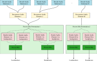

1. Introduction
This specification defines the Immersive Audio Model and Formats (IAMF) to provide an Immersive Audio experience to end-users.
IAMF is used to provide Immersive Audio content for presentation on a wide range of devices in both streaming and offline applications. These applications include internet audio streaming, multicasting/broadcasting services, file download, gaming, communication, virtual and augmented reality, and others. In these applications, audio may be played back on a wide range of devices, e.g., headphones, mobile phones, tablets, TVs, sound bars, home theater systems, and big screens.
Here are some typical IAMF use cases and examples of how to instantiate the model for the use cases.
-
UC1: One Audio Element (e.g., 3.1.2ch or First Order Ambisonics (FOA)) is delivered to a big-screen TV (in a home) or a mobile device through a unicast network. It is rendered to a loudspeaker layout (e.g., 3.1.2ch) or headphones with loudness normalization, and is played back on loudspeakers built into the big-screen TV or headphones connected to the mobile device, respectively.
-
UC2: Two Audio Elements (e.g., 5.1.2ch and Stereo) are delivered to a big-screen TV through a unicast network. Both are rendered to the same loudspeaker layout built into the big-screen TV and are mixed. After applying loudness normalization appropriate to the home environment, the Rendered Mix Presentation is played back on the loudspeakers.
-
UC3: Two Audio Elements (e.g., FOA and Non-diegetic Stereo) are delivered to a mobile device through a unicast network. FOA is rendered to Binaural (or Stereo) and Non-diegetic is rendered to Stereo. After mixing them, it is processed with loudness normalization and is played back on headphones through the mobile device.
-
UC4: Four Audio Elements for multi-language service (e.g., 5.1.2ch and 3 different Stereo dialogues, one for English, the second for Spanish, and the third for Korean) are delivered to an end-user device through a unicast network. The end-user (or the device) selects his preferred language so that 5.1.2ch and the Stereo dialogue associated with the language are rendered to the same loudspeaker layout and are mixed. After applying loudness normalization appropriate to its environment, the Rendered Mix Presentation is played back on the loudspeakers.
-
UC5: A single Audio Element with bottom loudspeaker layers (e.g., 10.2.9.3ch) is delivered via a unicast network to a big-screen TV and then to a SoundBar. The Audio Element is rendered to a loudspeaker layout built into the SoundBar. After applying loudness normalization appropriate to its environment, the Rendered Mix Presentation is played back on the loudspeakers.
-
UC6: Multiple Audio Elements (e.g., 12 objects) are delivered to a big-screen TV through a unicast network. All objects are rendered to the same loudspeaker layout built into the big-screen TV and are mixed. After applying loudness normalization appropriate to the home environment, the Rendered Mix Presentation is played back on the loudspeakers.
-
UC7: A bitstream with a single Audio Element (e.g., 7.1.4ch) is delivered via a unicast network to a big-screen TV and then to a SoundBar. While the Audio Element is being played back on a loudspeaker layout built into the SoundBar, a System Sound (e.g., voiced audio generated separately from the content in the bitstream) is presented to the TV for playback. The TV updates the bitstream to additionally encapsulate the System Sound and passes the updated bitstream to the SoundBar. The Audio Element and the System Sound are rendered to the loudspeaker layout and are mixed. The Rendered Mix Presentation is played back on the loudspeakers.
Example 1: UC1 with 3D audio signal = 3.1.2ch.
-
Audio Substream: The Left (L) and Right (R) channels are coded as one audio stream, the Left top front (Ltf) and Right top front (Rtf) channels as one audio stream, the Centre channel as one audio stream, and the Low-Frequency Effects (LFE) channel as one audio stream.
-
Audio Element (3.1.2ch): Consists of 4 Audio Substreams which are grouped into one Channel Group.
-
Mix Presentation: Provides rendering algorithms for rendering the Audio Element to popular loudspeaker layouts and headphones, and the loudness information of the 3D audio signal.
Example 2: UC2 with two 3D audio signals = 5.1.2ch and Stereo.
-
Audio Substream: The L and R channels are coded as one audio stream, the Left surround (Ls) and Right surround (Rs) channels as one audio stream, the Ltf and Rtf channels as one audio stream, the Centre channel as one audio stream, and the LFE channel as one audio stream.
-
Audio Element 1 (5.1.2ch): Consists of 5 Audio Substreams which are grouped into one Channel Group.
-
Audio Element 2 (Stereo): Consists of 1 Audio Substream which is grouped into one Channel Group.
-
Parameter Substream 1-1: Contains mixing parameter values that are applied to Audio Element 1 by considering the home environment.
-
Parameter Substream 1-2: Contains mixing parameter values that are applied to Audio Element 2 by considering the home environment.
-
Mix Presentation: Provides rendering algorithms for rendering Audio Elements 1 & 2 to popular loudspeaker layouts, mixing information based on Parameter Substreams 1-1 & 1-2, and loudness information of the Rendered Mix Presentation.
Example 3: UC3 with two 3D audio signals = First Order Ambisonics (FOA) and Non-diegetic Stereo.
-
Audio Substream: The L and R channels are coded as one audio stream and each channel of the FOA signal as one audio stream.
-
Audio Element 1 (FOA): Consists of 4 Audio Substreams which are grouped into one Channel Group.
-
Audio Element 2 (Non-diegetic Stereo): Consists of 1 Audio Substream which is grouped into one Channel Group.
-
Parameter Substream 1-1: Contains mixing parameter values that are applied to Audio Element 1 by considering the mobile environment.
-
Parameter Substream 1-2: Contains mixing parameter values that are applied to Audio Element 2 by considering the mobile environment.
-
Mix Presentation: Provides rendering algorithms for rendering Audio Elements 1 & 2 to popular loudspeaker layouts and headphones, mixing information based on Parameter Substreams 1-1 & 1-2, and loudness information of the Rendered Mix Presentation.
Example 4: UC4 with four 3D audio signals = 5.1.2ch and 3 Stereo dialogues for English/Spanish/Korean.
-
Audio Substream: The L and R channels are coded as one audio stream, the Left surround (Ls) and Right surround (Rs) channels as one audio stream, the Ltf and Rtf channels as one audio stream, the Centre channel as one audio stream, and the LFE channel as one audio stream.
-
Audio Element 1 (5.1.2ch): Consists of 5 Audio Substreams which are grouped into one Channel Group.
-
Audio Element 2 (Stereo dialogue for English): Consists of 1 Audio Substream which is grouped into one Channel Group.
-
Audio Element 3 (Stereo dialogue for Spanish): Consists of 1 Audio Substream which is grouped into one Channel Group.
-
Audio Element 4 (Stereo dialogue for Korean): Consists of 1 Audio Substream which is grouped into one Channel Group.
-
Parameter Substream 1-1: Contains mixing parameter values that are applied to Audio Element 1 by considering to be mixed with Audio Element 2, 3, or 4.
-
Parameter Substream 1-2: Contains mixing parameter values that are applied to Audio Element 2, 3, or 4 by considering to be mixed with Audio Element 1.
-
Mix Presentation 1: Provides rendering algorithms for rendering Audio Elements 1 & 2 to popular loudspeaker layouts and headphones, mixing information based on Parameter Substreams 1-1 & 1-2, content language information (English) for Audio Element 2, and loudness information of the Rendered Mix Presentation.
-
Mix Presentation 2: Provides rendering algorithms for rendering Audio Elements 1 & 3 to popular loudspeaker layouts and headphones, mixing information based on Parameter Substreams 1-1 & 1-2, content language information (Spanish) for Audio Element 3, and loudness information of the Rendered Mix Presentation.
-
Mix Presentation 3: Provides rendering algorithms for rendering Audio Elements 1 & 4 to popular loudspeaker layouts and headphones, mixing information based on Parameter Substreams 1-1 & 1-2, content language information (Korean) for Audio Element 4, and loudness information of the Rendered Mix Presentation.
Example 5: UC5 with 3D audio signal = 10.2.9.3ch.
-
Audio Substream: Each coupled stereo channels (FLc/FRc, FL/FR, SiL/SiR, BL/BR, TpFL/TpFR, TpSiL/TpSiR, TpBL/TpBRm, and BtFL/BtFR) is coded as one audio stream and each non-coupled channels (FC, BC, TpFC, TpC, TpBC, BtFC, LFE1, and LFE2) as one audio stream.
-
Audio Element (10.2.9.3ch): Consists of 16 Audio Substreams (8 coupled substreams and 8 non-coupled substreams) which are grouped into one Channel Group.
-
Mix Presentation: Provides rendering algorithms for rendering the Audio Element to popular loudspeaker layouts and headphones, and the loudness information of the 3D audio signal.
Example 6: UC6 with 12 3D audio signals = 12 object channels.
-
Audio Substream: Each object channel is coded as one audio stream.
-
Audio Element #N : Consists of 1 Audio Substream which is one Channel Group, where N = 1, 2, ..., 12.
-
Parameter Substream #N : Contains position parameter values that are applied to Audio Element #N, where N = 1, 2, ..., 12.
-
Mix Presentation: Provides rendering algorithms for rendering Audio Elements 1 ~ 12 to popular loudspeaker layouts, position information based on Parameter Substreams 1 ~ 12, and loudness information of the Rendered Mix Presentation.
Example 7: UC7 with a 3D audio signal = 7.1.4ch and a System Sound = Stereo.
-
Audio Substream: Each coupled stereo channels of 7.1.4ch (L/R, Lss/Rss, Lrs/Rrs, Ltf/Rtf, and Ltb/Rtb) is coded as one audio stream and each non-coupled channel of 7.1.4ch (C or LFE) as one audio stream (by a server using a codec). The System Sound is coded as one audio stream (by a source device using the codec or LPCM).
-
Audio Element 1 (7.1.4ch): Consists of 7 Audio Substreams which are grouped into one Channel Group.
-
Audio Element 2 (Stereo): Consists of 1 Audio Substream which is grouped into one Channel Group.
-
Mix Presentation: Provides rendering algorithms for rendering Audio Element 1 to popular loudspeaker layouts and headphones and loudness information of the Rendered Mix Presentation in the 1st sub-mix (by the server) and provides rendering algorithms for rendering Audio Element 2 to the popular loudspeaker layouts and headphones in the 2nd sub-mix (by the source device).
NOTE: In example 7, the source device updates the Mix Presentation by adding the 2nd sub-mix.
2. Immersive Audio Model
2.1. Model Overview
This specification defines a model for representing Immersive Audio contents based on Audio Substreams contributing to Audio Elements meant to be rendered and mixed to form one or more presentations as depicted in the figure below.

The model comprises a number of coded Audio Substreams and the metadata that describes how to decode, render, and mix the Audio Substreams for playback. The model itself is codec-agnostic; any supported audio codec MAY be used to code the Audio Substreams.
The model includes one or more Audio Elements, each of which consists of one or more Audio Substreams. The Audio Substreams that make up an Audio Element are grouped into one or more Channel Groups. The model further includes Mix Presentations and Parameter Substreams.
The term 3D audio signal means a representation of sound that incorporates additional information beyond traditional stereo or surround sound formats such as Ambisonics (Scene-based audio), Object-based audio and Channel-based audio (e.g., 3.1.2ch or 7.1.4ch).
The term channel means a component of Scene-based audio, a component of Object-based audio, or a component of Channel-based audio. When used in the context of Channel-based audio, it refers to loudspeaker-based channels.
The term Immersive Audio (IA) means the combination of 3D audio signals recreating a sound experience close to that of a natural environment.
The term Audio Substream means a sequence of audio samples, which MAY be encoded with any compatible audio codec.
The term Channel Group means a set of Audio Substream(s) which is(are) able to provide a spatial resolution of audio contents by itself or which is(are) able to provide an enhanced spatial resolution of audio contents by combining with the preceding Channel Groups.
The term Audio Element means a 3D audio signal, and is constructed from one or more Audio Substreams (grouped into one or more Channel Groups) and the metadata describing them. The Audio Substreams associated with one Audio Element use the same audio codec.
The term Mix Presentation means a series of processes to present Immersive Audio contents to end-users by using Audio Element(s). It contains metadata that describes how the Audio Element(s) is(are) rendered and mixed together for playback through physical loudspeakers or headphones, as well as loudness information.
The term Parameter Substream means a sequence of parameter values that are associated with the algorithms used for reconstructing, rendering, and mixing. It is applied to its associated Audio Element or Mix Presentation. Parameter Substreams MAY change their values over time and MAY further be animated; for example, any changes in values MAY be smoothed over some time duration. As such, they MAY be viewed as a 1D signal with different metadata specified for different time durations.
The term Rendered Mix Presentation means a 3D audio signal after the Audio Element(s) defined in a Mix Presentation is(are) rendered and mixed together for playback through physical loudspeakers or headphones.
2.2. Architecture
Based on the model, this specification defines the Immersive Audio Model and Formats (IAMF) architecture as depicted in the figure below.

For a given input 3D audio signal,
-
A Pre-Processor generates the Channel Group(s), Descriptors and Parameter Substream(s).
-
A Codec Encoder generates the coded Audio Substream(s).
-
An OBU Packetizer generates an IA Sequence from the coded Audio Substream(s), Descriptors and Parameter Substream(s).
-
An OBU Parser outputs the coded Audio Substream(s) and the Parameter Substream(s) from the IA Sequence.
-
A Codec Decoder outputs decoded Channel Group(s) after decoding the coded Audio Substream(s).
-
An Element Reconstructor re-assembles the Audio Elements by combining the Channel Group(s) guided by Descriptors and Parameter Substream(s).
-
A Renderer is used to render the Audio Elements to a multi-channel or binaural format based on Descriptors.
-
A Mixer sums the rendered Audio Elements and applies further mixing parameters guided by the Descriptors and the Parameter Substream(s).
-
A Post-Processor outputs an Immersive Audio by using the Channel Group(s), the Descriptors, and the Parameter Substream(s).
An IAMF generation processing including the Pre-Processor, the Channel Group(s), the Codec Encoder, and the OBU Packetizer are defined in § 10.1 Annex A: IAMF Generation Process (Informative). The IA Sequence is defined in § 5.1 IA Sequence. An IAMF processing including the OBU Parser, the Codec Decoder, the Element Reconstructor, the Renderer, the Mixer, and the Post-Processor are defined in § 7 IAMF Processing.
Although not shown in the figure above, the IA Sequence MAY be encapsulated by a file packager, such as the ISO-BMFF Encapsulation, to output an IAMF file (ISO-BMFF file). Then, a file parser, such as the ISO-BMFF Parser, decapsulates it to output the IA Sequence. The ISO-BMFF Encapsulation, IAMF file (ISO-BMFF file), and ISO-BMFF Parser are defined in § 6 ISO-BMFF IAMF Encapsulation.
2.3. Bitstream Structure
2.3.1. Overview
An IA Sequence is a bitstream to represent Immersive Audio contents and consists of Descriptors and IA Data.
The metadata in the Descriptors and IA Data are packetized into individual Open Bitstream Units (OBU)s. The term Open Bitstream Unit (OBU) is the concrete, physical unit used to represent the components in the model. In this specification, the term IA OBU can be used interchangeably with OBU.
The normative definitions for an IA Sequence are defined in § 5.1 IA Sequence.
2.3.2. Categorization and Use of Immersive Audio OBUs
2.3.2.1. Descriptors
Descriptors contain all the information that is required to set up and configure the decoders, reconstruction algorithms, renderers, and mixers. Descriptors do not contain audio signals.
-
The IA Sequence Header OBU indicates the start of a full IA Sequence description and contains information related to profiles.
-
The Codec Config OBU provides information which is required for setting up a decoder for a coded Audio Substream.
-
The Audio Element OBU provides information which is required for combining one or more Audio Substreams to reconstruct an Audio Element.
-
The Metadata OBU, if present and placed amongst the Descriptor OBUs within an IA Sequence, provides set-up and configuration information.
-
The Mix Presentation OBU provides information which is required for rendering and mixing one or more Audio Elements to generate the final Immersive Audio output.
-
Multiple Mix Presentations can be defined as alternatives to each other within the same IA Sequence. Furthermore, the choice of which Mix Presentation to use at playback is left to the user. For example, multi-language support is implemented by defining different Mix Presentations, where the first mix describes the use of the Audio Element with English dialogue, and the second mix describes the use of the Audio Element with French dialogue.
-
2.3.2.2. IA Data
IA Data contains the time-varying data that is required in the generation of the final Immersive Audio output.
-
The Audio Frame OBU provides the coded audio frame for an Audio Substream. Each frame has an implied start timestamp and an explicitly defined duration. A coded Audio Substream is represented as a sequence of Audio Frame OBUs with the same identifier, in time order.
-
The Parameter Block OBU provides the parameter values in a block for a Parameter Substream. Each block has an implied start timestamp and an explicitly defined duration. A time-varying Parameter Substream is represented as a sequence of parameter values in Parameter Block OBUs with the same identifier, in time order.
-
The Metadata OBU, if present and placed within a Temporal Unit, provides time-varing metadata.
-
The Temporal Delimiter OBU identifies the Temporal Units. It MAY or MAY NOT be present in IA Sequence. If present, the first OBU of every Temporal Unit is the Temporal Delimiter OBU.
2.4. Timing Model
A coded Audio Substream is made of consecutive Audio Frame OBUs. Each Audio Frame OBU is made of audio samples at a given sample rate. The decode duration of an Audio Frame OBU is the number of audio samples divided by the sample rate. The presentation duration of an Audio Frame OBU is the number of audio samples remaining after trimming divided by the sample rate. The decode start time (respectively presentation start time) of an Audio Frame OBU is the sum of the decode durations (respectively presentation durations) of previous Audio Frame OBUs in the IA Sequence, or 0 otherwise. The decode duration (respectively presentation duration) of a coded Audio Substream is the sum of the decode durations (respectively presentation durations) of all its Audio Frame OBUs. The decode start time of an Audio Substream is the decode start time of its first Audio Frame OBU. The presentation start time of an Audio Substream is the presentation start time of its first Audio Frame OBU which is not entirely trimmed.
The figure below shows an example generating Audio Substreams having the same presentation start time and duration from multiple audio sources having different start and/or end presentation times. Padding samples are inserted to fill up the gaps within each audio source so that all Audio Substreams have the same presentation start time and duration.

A Parameter Substream is made of consecutive Parameter Block OBUs. Each Parameter Block OBU is made of parameter values at a given sample rate. The decode duration of a Parameter Block OBU is the number of parameter values divided by the sample rate. The decode start time of a Parameter Block OBU is the sum of the decode duration of previous Parameter Block OBUs if any, 0 otherwise. The decode duration of a Parameter Substream is the sum of all its Parameter Block OBUs' decode durations. The start time of a Parameter Substream is the decode start time of its first Parameter Block OBU. When all parameter values in some (or all) Parameter Block OBU(s) of the Parameter Substream are constant, the corresponding Parameter Block OBUs MAY be either combined into one larger Parameter Block OBU or entirely omitted. In the latter case, the constant parameter values are provided by the default parameter values specified in the corresponding parameter definition within the IA Sequence.
Within an Audio Element, the presentation start times of all Audio Substreams coincide and are the presentation start time of the Audio Element. All Audio Substreams have the same presentation duration which is the presentation duration of the Audio Element.
-
The decode start times of all coded Audio Substreams and all Parameter Substreams coincide and are the decode start time of the Audio Element.
-
All coded Audio Substreams and all Parameter Substreams have the same decode duration which is the decode duration of the Audio Element.
Within a Mix Presentation, the presentation start time of all Audio Elements coincide and all Audio Elements have the same duration defining the duration of the Mix Presentation.
Within an IA Sequence, all Mix Presentations have the same duration, defining the duration of the IA Sequence, and have the same presentation start time defining the presentation start time of the IA Sequence.
The term Temporal Unit conceptually means a set of all Audio Frame OBUs with the same decode start time and the same duration from all coded Audio Substreams and all non-redundant Parameter Block OBUs with the decode start time within the duration. A Temporal Unit may further be a key frame containing all audio samples and parameter values required to decode and process the final audio output. On the other hand, a Temporal Unit that is not a key frame does not have all parameter data required to correctly process the decoded audio samples for playback.
The figure below shows an example of the Timing Model in terms of the decode start times and durations of the coded Audio Substream and Parameter Substream.
.png)
NOTE: For a given decoded Audio Substream (before trimming) and its associated Parameter Substream(s), a decoder may apply trimming in 1 of 2 ways:
1) The decoder processes the Audio Substream using the Parameter Substream(s), and then trims the processed audio samples.
2) The decoder trims both the Audio Substream and the Parameter Substream(s). Then, the decoder processes the trimmed Audio Substream using the trimmed Parameter Substream(s).
3. Open Bitstream Unit (OBU) Syntax and Semantics
The IA Sequence uses the OBU syntax.
This section specifies the OBU syntax elements and their semantics.
3.1. Immersive Audio OBU Syntax and Semantics
OBUs are structured with an OBU Header and an OBU payload.
The OBU Header and all OBU payloads, including the Reserved OBU, are byte aligned.
Syntax
class IAOpenBitstreamUnit() {
OBUHeader obu_header;
if (obu_type == OBU_IA_Sequence_Header)
IASequenceHeaderOBU ia_sequence_header_obu;
else if (obu_type == OBU_IA_Codec_Config)
CodecConfigOBU codec_config_obu;
else if (obu_type == OBU_IA_Audio_Element)
AudioElementOBU audio_element_obu;
else if (obu_type == OBU_IA_Mix_Presentation)
MixPresentationOBU mix_presentation_obu;
else if (obu_type == OBU_IA_Parameter_Block)
ParameterBlockOBU parameter_block_obu;
else if (obu_type == OBU_IA_Temporal_Delimiter)
TemporalDelimiterOBU temporal_delimiter_obu;
else if (obu_type == OBU_IA_Audio_Frame)
AudioFrameOBU audio_frame_obu(true);
else if (obu_type >= 6 and <= 23)
AudioFrameOBU audio_frame_obu(false);
else if (obu_type == OBU_IA_Metadata)
MetadataOBU metadata_obu;
else if (obu_type >=25 and <= 30)
ReservedOBU reserved_obu;
}
Semantics
If the syntax element obu_type is equal to OBU_IA_Sequence_Header, an ordered series of OBUs is presented to the decoding process as a string of bytes.
3.2. OBU Header Syntax and Semantics
This section specifies the format of the OBU Header.
Syntax
class OBUHeader() {
unsigned int (5) obu_type;
unsigned int (1) obu_redundant_copy;
if (obu_type == 2) {
unsigned int (1) optional_fields_flag;
}
else if (obu_type == 4) {
unsigned int (1) is_not_key_frame;
}
else if (obu_type > 4 && obu_type < 24) {
unsigned int (1) obu_trimming_status_flag;
}
else {
unsigned int (1) reserved;
}
unsigned int (1) obu_extension_flag;
leb128() obu_size;
if ((obu_type > 4 && obu_type < 24) && obu_trimming_status_flag) {
leb128() num_samples_to_trim_at_end;
leb128() num_samples_to_trim_at_start;
}
if (obu_extension_flag) {
leb128() extension_header_size;
unsigned int (8 x extension_header_size) extension_header_bytes;
}
}
Semantics
obu_type specifies the type of data structure contained in the OBU payload.
| OBU Types | ||
|---|---|---|
| obu_type | Name of obu_type | |
| 0 | OBU_IA_Codec_Config | |
| 1 | OBU_IA_Audio_Element | |
| 2 | OBU_IA_Mix_Presentation | |
| 3 | OBU_IA_Parameter_Block | |
| 4 | OBU_IA_Temporal_Delimiter | |
| 5 | OBU_IA_Audio_Frame | |
| 6~23 | OBU_IA_Audio_Frame_ID0 to OBU_IA_Audio_Frame_ID17 | |
| 24 | OBU_IA_Metadata | |
| 25~30 | Reserved for future use | |
| 31 | OBU_IA_Sequence_Header | |
obu_redundant_copy indicates whether this OBU is a redundant copy of the previous OBU with the same obu_type in the IA Sequence. A value of 1 indicates that it is a redundant copy, while a value of 0 indicates that it is not.
It SHALL always be set to 0 for the following obu_type values:
-
OBU_IA_Temporal_Delimiter
-
OBU_IA_Audio_Frame
-
OBU_IA_Audio_Frame_ID0 to OBU_IA_Audio_Frame_ID17
If a decoder encounters an OBU with obu_redundant_copy = 1, and it has also received the previous non-redundant OBU, it MAY ignore the redundant OBU. If the decoder has not received the previous non-redundant OBU, it SHALL treat the redundant copy as a non-redundant OBU and process the OBU accordingly.
optional_fields_flag indicates whether this Mix Presentation OBU contains optional fields.
is_not_key_frame indicates whether this OBU is a key frame indicator when the obu_type is set to OBU_IA_Temporal_Delimiter.
For a given Temporal Unit,
-
If the obu_type of the first OBU in the Temporal Unit is set to OBU_IA_Temporal_Delimiter and is_not_key_frame is set to 1, it indicates that the Temporal Unit is not a key frame. Otherwise, it indicates that the Temporal Unit is a key frame.
obu_trimming_status_flag indicates whether this OBU has audio samples to be trimmed.
For a given coded Audio Substream,
-
If an Audio Frame OBU has its num_samples_to_trim_at_start field set to a non-zero value N, the decoder SHALL discard the first N audio samples.
-
If an Audio Frame OBU has its num_samples_to_trim_at_end field set to a non-zero value N, the decoder SHALL discard the last N audio samples.
NOTE: Because of possible coding dependencies, discarding a sample can sometimes mean still needing to decode the entire audio frame.
-
For a given Audio Frame OBU, the sum of num_samples_to_trim_at_start and num_samples_to_trim_at_end SHALL be less than or equal to the number of samples in the Audio Frame OBU (i.e., num_samples_per_frame).
NOTE: This means that if one of the values is set to the number of samples in the Audio Frame OBU (i.e., num_samples_per_frame), the other value is set to 0.
-
When num_samples_to_trim_at_start is non-zero, all Audio Frame OBUs with the same audio_substream_id, and preceding this OBU back until the Codec Config OBU defining this Audio Substream, SHALL have their num_samples_to_trim_at_start field equal to the number of samples in the corresponding Audio Frame OBU (i.e., num_samples_per_frame).
-
When num_samples_to_trim_at_end is non-zero in an Audio Frame OBU, there SHALL be no subsequent Audio Frame OBU with the same audio_substream_id until a non-redundant Codec Config OBU defining an Audio Substream with the same audio_substream_id.
reserved SHALL be set to 0.
obu_extension_flag indicates whether the extension_header_size field is present. If it is set to 0, the extension_header_size field SHALL NOT be present. Otherwise, the extension_header_size field SHALL be present.
NOTE: A future version of the specification may use this flag to specify an extension header field by setting obu_extension_flag = 1 and setting the size of the extended header to extension_header_size.
obu_size indicates the size in bytes of the OBU immediately following the obu_size field. If the obu_trimming_status_flag and/or obu_extension_flag fields are set to 1, obu_size SHALL include the sizes of the additional fields. The obu_size MAY be greater than the size needed to represent the OBU syntax. Parsers SHOULD ignore bytes past the OBU syntax that they recognize.
num_samples_to_trim_at_end indicates the number of samples that need to be trimmed from the end of the samples in this Audio Frame OBU.
num_samples_to_trim_at_start indicates the number of samples that need to be trimmed from the start of the samples in this Audio Frame OBU.
extension_header_size indicates the size in bytes of the extension header immediately following this field.
extension_header_bytes indicates the byte representations of the syntaxes of the extension header. Parsers that don’t understand these bytes SHOULD ignore them.
3.3. Reserved OBU Syntax and Semantics
Paresers SHOULD ignore Reserved OBUs.
NOTE: Future versions of the specification may define syntax and semantics for an obu_type value, making it no longer a Reserved OBU for those parsers compliant with these future versions.
3.4. IA Sequence Header OBU Syntax and Semantics
The IA Sequence Header OBU is used to indicate the start of an IA Sequence, i.e., the first OBU in an IA Sequence SHALL have obu_type = OBU_IA_Sequence_Header. This section specifies the payload format of the IA Sequence Header OBU.
NOTE: When an IA Sequence is stored in a file, the IA Sequence Header OBU can be used to identify that the file contains an IA Sequence.
This OBU MAY be placed frequently within one single IA Sequence for an application such as broadcasting or multicasting. In that case, all IA Sequence Header OBUs except the first one SHALL be marked as redundant (i.e., obu_redundant_copy = 1). So, if a decoder encounters a non-redundant IA Sequence Header OBU (i.e., obu_redundant_copy = 0), and it has also received the previous IA Sequence Header OBU, the non-redundant IA Sequence Header OBU indicates the start of a new IA Sequence.
Syntax
class IASequenceHeaderOBU() {
unsigned int (32) ia_code;
unsigned int (8) primary_profile;
unsigned int (8) additional_profile;
}
Semantics
ia_code is a ‘four-character code’ (4CC), iamf.
NOTE: When IA OBUs are delivered over a protocol that does not provide explicit IA Sequence boundaries, a parser may locate the IA Sequence start by searching for the code iamf preceded by specific OBU Header values. For example, by assuming that obu_extension_flag is set to 0 and because obu_trimming_status_flag is set to 0 for an IA Sequence Header OBU, the OBU Header can be either 0xF806 or 0xFC06.
primary_profile indicates the primary profile that this IA Sequence complies with. Parsers SHOULD discard the IA Sequence if they do not support the value indicated here.
The mappings below are applied for both primary_profile and additional_profile.
| primary_profile (or additional_profile): | Semantics |
|---|---|
| 0: | Simple Profile |
| 1: | Base Profile |
| 2: | Base-Enhanced Profile |
| 3: | Base-Advanced Profile |
| 4: | Advanced-1 Profile |
| 5: | Advanced-2 Profile |
| 6~255: | Reserved for future profiles |
additional_profile indicates an additional profile that this IA Sequence complies with. If an IA Sequence only complies with the primary_profile, this field SHALL be set to the same value as primary_profile.
NOTE: If a future version defines a new profile, e.g., HypotheticalProfile, that is backward compatible with the Base-Enhanced Profile, for example by defining new OBUs that would be ignored by the Base-Enhanced-compatible parser, an IA writer can decide to set the primary_profile to "Base-Enhanced Profile" while setting the additional_profile to "HypotheticalProfile". This way an old processor will know it can parse and produce an acceptable rendering, while a new processor still knows it can produce a better result because it will not ignore the additional features.
3.5. Codec Config OBU Syntax and Semantics
The Codec Config OBU provides information on how to set up a decoder for a coded Audio Substream.
The CodecConfig() class provides codec-specific configurations for the decoder.
This section specifies the payload format of the Codec Config OBU and the CodecConfig() class.
Syntax
class CodecConfigOBU() {
leb128() codec_config_id;
CodecConfig codec_config;
}
class CodecConfig() {
unsigned int (32) codec_id;
leb128() num_samples_per_frame;
signed int (16) audio_roll_distance;
DecoderConfig decoder_config(codec_id);
}
Semantics
codec_config_id defines an identifier for a codec configuration. Within an IA Sequence, there SHALL be one unique codec_config_id per codec. There SHALL be exactly one Codec Config OBU with a given identifier in a set of Descriptors. Audio Elements use this identifier to indicate that its corresponding Audio Substreams are coded with this codec configuration.
codec_config is an instance of the CodecConfig() class, which provides codec-specific information for setting up the decoder.
codec_id indicates a ‘four-character code’ (4CC) to identify the codec used to generate the coded Audio Substreams. This specification supports the following four codec_id values defined below:
-
Opus: All coded Audio Substreams referred to by all Audio Elements with this codec configuration SHALL comply with the [RFC-6716] specification and the decoder_config structure SHALL comply with the constraints given in § 3.13.1 OPUS Specific. -
mp4a: All coded Audio Substreams referred to by all Audio Elements with this codec configuration SHALL comply with the [AAC] specification and the decoder_config structure SHALL comply with the constraints given in § 3.13.2 AAC-LC Specific. -
fLaC: All coded Audio Substreams referred to by all Audio Elements with this codec configuration SHALL comply with the [RFC-9639] specification and the decoder_config structure SHALL comply with the constraints given in § 3.13.3 FLAC Specific. -
ipcm: All coded Audio Substreams referred to by all Audio Elements with this codec configuration SHALL contain linear PCM (LPCM) audio samples and the decoder_config structure SHALL comply with the constraints given in § 3.13.4 LPCM Specific.
Parsers SHOULD ignore Codec Config OBUs with a codec_id that they don’t support.
NOTE: Derived specifications or future versions of this specification may support additional codecs.
NOTE: ipcm should not be confused with lpcm, which is another 4CC to identify codecs in other container formats (e.g., QuickTime).
num_samples_per_frame indicates the frame length, in samples, of the audio_frame provided in the audio_frame_obu. It SHALL NOT be set to zero. If the decoder_config structure for a given codec specifies a value for the frame length, the two values SHALL be equal.
audio_roll_distance indicates how many audio frames prior to the current audio frame need to be decoded (and the decoded samples discarded) to set the decoder in a state that will produce the correct decoded audio signal. It SHALL always be a negative value or zero. For some audio codecs, even if an audio frame can be decoded independently, the decoded signal after decoding only that frame MAY not represent a correct, decoded audio signal, even ignoring compression artifacts. This can be due to overlap transforms. While potentially acceptable when starting to decode an Audio Substream, it MAY be problematic when automatically switching between similar Audio Substreams of different quality and/or bitrate.
-
It SHALL be set to \(-R\) when codec_id is set to
Opus, where \[ R = \left\lceil{\frac{3840}{\text{num_samples_per_frame}}}\right\rceil. \] -
It SHALL be set to -1 when codec_id is set to
mp4a. -
It SHALL be set to 0 when codec_id is set to
fLaCoripcm.
decoder_config is an instance of the DecoderConfig() class, which specifies the set of codec parameters required to decode the Audio Substream. It is byte aligned.
3.6. Audio Element OBU Syntax and Semantics
The Audio Element OBU provides information on how to combine one or more Audio Substreams to reconstruct an Audio Element. This section specifies the payload format of the Audio Element OBU.
Additionally, the following parameter definitions are used in the Audio Element OBU, and their syntax structures are specified in this section:
-
DemixingParamDefinition() and DefaultDemixingInfoParameterData() provide the parameter definitions for demixing info, which is required for reconstructing a scalable channel audio representation.
-
ReconGainParamDefinition() provides the parameter definition for recon gain, which is required for reconstructing a scalable channel audio representation.
Syntax
class AudioElementOBU() {
leb128() audio_element_id;
unsigned int (3) audio_element_type;
unsigned int (5) reserved_for_future_use;
leb128() codec_config_id;
leb128() num_substreams;
for (i = 0; i < num_substreams; i++) {
leb128() audio_substream_id;
}
leb128() num_parameters;
for (i = 0; i < num_parameters; i++) {
leb128() param_definition_type;
if (param_definition_type == PARAMETER_DEFINITION_DEMIXING) {
DemixingParamDefinition demixing_info;
}
else if (param_definition_type == PARAMETER_DEFINITION_RECON_GAIN) {
ReconGainParamDefinition recon_gain_info;
}
else if (param_definition_type > 9) {
leb128() param_definition_size;
unsigned int (8 x param_definition_size) param_definition_bytes;
}
}
if (audio_element_type == CHANNEL_BASED) {
ScalableChannelLayoutConfig scalable_channel_layout_config;
}
else if (audio_element_type == SCENE_BASED) {
AmbisonicsConfig ambisonics_config;
}
else if (audio_element_type == OBJECT_BASED) {
ObjectsConfig objects_config;
}
}
class DemixingParamDefinition() extends ParamDefinition() {
DefaultDemixingInfoParameterData default_demixing_info_parameter_data;
}
class DefaultDemixingInfoParameterData() extends DemixingInfoParameterData() {
unsigned int (4) default_w;
unsigned int (4) reserved_for_future_use;
}
class ReconGainParamDefinition() extends ParamDefinition() {
}
Semantics
audio_element_id defines an identifier for an Audio Element. Within an IA Sequence, there SHALL be one unique audio_element_id per Audio Element. There SHALL be exactly one Audio Element OBU with a given identifier in a set of Descriptors. Mix Presentations refer to a particular Audio Element using this identifier.
audio_element_type specifies the audio representation of this Audio Element, which is constructed from one or more Audio Substreams. Parsers SHOULD ignore Audio Element OBUs with an audio_element_type that they do not recognize.
audio_element_type : The type of audio representation. 0 : CHANNEL_BASED 1 : SCENE_BASED 2 : OBJECT_BASED 3~7 : Reserved for future use
codec_config_id indicates the identifier for the codec configuration which this Audio Element refers to. Parsers SHOULD ignore Audio Element OBUs with a codec_config_id identifying a codec_id that they don’t support.
num_substreams specifies the number of Audio Substreams that are used to reconstruct this Audio Element. It SHALL NOT be set to 0.
audio_substream_id indicates the identifier for an Audio Substream which this Audio Element refers to. When audio_element_type is CHANNEL_BASED, the ordering of audio_substream_ids within this loop SHALL comply with § 3.6.2.3 Ordering of Audio Substream Identifers.
num_parameters specifies the number of Parameter Substreams that are used by the algorithms specified in this Audio Element.
-
When audio_element_type = 0, this field SHALL be set to 0, 1, or 2.
-
When audio_element_type = 1 or 2, this field SHALL be set to 0.
-
Parsers SHALL support any value of num_parameters.
NOTE: For a given audio_element_type, a future version of the specification may define a new Parameter Substream which may be ignored by IA decoders compliant with this version of the specification. In that case, a new param_definition_type will be defined in a future version of Audio Element OBU.
param_definition_type specifies the type of the parameter definition. Supported values are defined in the Parameter Definition Types table along with their associated parameter definitions.
-
Only the following types from the Parameter Definition Types table MAY be present in an Audio Element OBU. Other types from that table SHALL NOT be present in an Audio Element OBU.
-
PARAMETER_DEFINITION_DEMIXING
-
PARAMETER_DEFINITION_RECON_GAIN
-
-
The type SHALL NOT be duplicated in one Audio Element OBU.
-
When codec_id =
fLaCoripcm, the type PARAMETER_DEFINITION_RECON_GAIN SHALL NOT be present. -
When num_layers > 1, the type PARAMETER_DEFINITION_RECON_GAIN SHALL be present.
-
When the loudspeaker_layout = 15, the type PARAMETER_DEFINITION_DEMIXING SHALL NOT be present.
-
When the loudspeaker_layout of the (non-)scalable channel audio (i.e., num_layers = 1) is Mono, Stereo, Binaural, or 3.1.2ch, the type PARAMETER_DEFINITION_DEMIXING SHALL NOT be present.
-
When the highest loudspeaker_layout of the scalable channel audio (i.e., num_layers > 1) is 3.1.2ch, 5.1.2ch, 5.1.4ch, 7.1.2ch, or 7.1.4ch, both PARAMETER_DEFINITION_DEMIXING and PARAMETER_DEFINITION_RECON_GAIN types SHALL be present.
-
When num_layers = 1 and loudspeaker_layout is 5.1.2ch, 5.1.4ch, 7.1.2ch, or 7.1.4ch, the type PARAMETER_DEFINITION_DEMIXING MAY be present.
-
When num_layers = 1 and loudspeaker_layout is 5.1ch, or 7.1ch, the type PARAMETER_DEFINITION_DEMIXING MAY be present.
-
An OBU parser SHALL be able to parse param_definition_type = P (where P > 9) and param_definition_size. The OBU parser SHOULD ignore the bytes indicated by param_definition_size that it does not recognize.
demixing_info is an instance of the DemixingParamDefinition() class, which provides the parameter definition for the demixing information, which is used to reconstruct a scalable channel audio representation. The corresponding parameter data to be provided in Parameter Block OBUs with the same parameter_id is specified in the DemixingInfoParameterData() class.
In this parameter definition,
-
parameter_rate SHALL be set to the sample rate of this Audio Element.
-
param_definition_mode SHALL be set to 0.
-
duration SHALL be the same as num_samples_per_frame of this Audio Element.
-
num_subblocks SHALL be set to 1.
-
constant_subblock_duration SHALL be the same as duration.
recon_gain_info is an instance of the ReconGainParamDefinition() class, which provides the parameter definition for the gain value, which is used to reconstruct a scalable channel audio representation. The corresponding parameter data to be provided in Parameter Block OBUs with the same parameter_id is specified in the ReconGainInfoParameterData() class.
In this parameter definition,
-
parameter_rate SHALL be set to the sample rate of this Audio Element.
-
param_definition_mode SHALL be set to 0.
-
duration SHALL be the same as num_samples_per_frame of this Audio Element.
-
num_subblocks SHALL be set to 1.
-
constant_subblock_duration SHALL be same as duration.
param_definition_size indicates the size in bytes of param_definition_bytes.
param_definition_bytes represents reserved bytes for future use when new param_definition_type values are defined. Parsers SHOULD ignore these bytes when they don’t understand the parameter definition.
scalable_channel_layout_config is an instance of the ScalableChannelLayoutConfig() class, which provides the metadata required for combining the Audio Substreams referred to here in order to reconstruct a scalable channel layout.
ambisonics_config is an instance of the AmbisonicsConfig() class, which provides the metadata required for combining the Audio Substreams referred to here in order to reconstruct an Ambisonics layout.
objects_config is an instance of the ObjectsConfig() class, which provides the metadata required to reconstruct one or more objects from the referenced Audio Substream.
default_demixing_info_parameter_data is an instance of the DefaultDemixingInfoParameterData() class, which provides the default demixing parameter data to apply to all audio samples when there are no Parameter Block OBUs (with the same parameter_id defined in this DemixingParamDefinition()) provided.
-
In this class, w_idx_offset in demixing_info_parameter_data SHALL be ignored.
-
Instead, default_w directly indicates the weight value \(w(k)\).
default_w indicates the weight value \(w(k)\) for the TF2toT2 de-mixer specified in § 7.2.2 De-mixer.
The mapping of default_w to \(w(k)\) SHOULD be as follows:
default_w : w(k) 0 : 0 1 : 0.0179 2 : 0.0391 3 : 0.0658 4 : 0.1038 5 : 0.25 6 : 0.3962 7 : 0.4342 8 : 0.4609 9 : 0.4821 10 : 0.5 11 ~ 15 : Reserved for future use
A default recon gain value of 0 dB is implied when there are no Parameter Block OBUs (with the same parameter_id defined in this ReconGainParamDefinition()) provided.
3.6.1. Scalable Channel Layout Config Syntax and Semantics
The ScalableChannelLayoutConfig() class provides the configuration for a given scalable channel audio representation.
The ChannelAudioLayerConfig() class provides the configuration for a specific Channel Group.
This section specifies the syntax structures of the ScalableChannelLayoutConfig() and ChannelAudioLayerConfig() classes.
Syntax
class ScalableChannelLayoutConfig() {
unsigned int (3) num_layers;
unsigned int (5) reserved_for_future_use;
for (i = 1; i <= num_layers; i++) {
ChannelAudioLayerConfig channel_audio_layer_config(i);
}
}
class ChannelAudioLayerConfig(i) {
unsigned int (4) loudspeaker_layout(i);
unsigned int (1) output_gain_is_present_flag(i);
unsigned int (1) recon_gain_is_present_flag(i);
unsigned int (2) reserved_for_future_use;
unsigned int (8) substream_count(i);
unsigned int (8) coupled_substream_count(i);
if (output_gain_is_present_flag(i) == 1) {
unsigned int (6) output_gain_flags(i);
unsigned int (2) reserved_for_future_use;
signed int (16) output_gain(i);
}
if (i == 1 && [=loudspeaker_layout=] == 15)
unsigned int (8) expanded_loudspeaker_layout;
}
Semantics
num_layers indicates the number of Channel Groups for scalable channel audio. It SHALL NOT be set to zero and its maximum value SHALL be 6.
-
If loudspeaker_layout is set to Binaural, this field SHALL be set to 1.
channel_audio_layer_config is an instance of the ChannelAudioLayerConfig() class, which provides the i-th Channel Group’s configuration, where i is the layer index provided as an input argument to this instance of the ChannelAudioLayerConfig() class.
loudspeaker_layout indicates the channel layout to be reconstructed from the precedent Channel Groups and current Channel Group. If parsers do not recognize a loudspeaker_layout for a particular layer, they SHOULD skip the channel_audio_layer_config for that layer and all subsequent layers.
In this version of the specification, loudspeaker_layout indicates one of the channel layouts listed below.
| loudspeaker_layout | Channel Layout | Loudspeaker Location Ordering | Reference |
|---|---|---|---|
| 0 | Mono | C | |
| 1 | Stereo | L/R | Loudspeaker configuration for Sound System A (0+2+0) of [ITU-2051-3] |
| 2 | 5.1ch | L/C/R/Ls/Rs/LFE | Loudspeaker configuration for Sound System B (0+5+0) of [ITU-2051-3] |
| 3 | 5.1.2ch | L/C/R/Ls/Rs/Ltf/Rtf/LFE | Loudspeaker configuration for Sound System C (2+5+0) of [ITU-2051-3] |
| 4 | 5.1.4ch | L/C/R/Ls/Rs/Ltf/Rtf/Ltr/Rtr/LFE | Loudspeaker configuration for Sound System D (4+5+0) of [ITU-2051-3] |
| 5 | 7.1ch | L/C/R/Lss/Rss/Lrs/Rrs/LFE | Loudspeaker configuration for Sound System I (0+7+0) of [ITU-2051-3] |
| 6 | 7.1.2ch | L/C/R/Lss/Rss/Lrs/Rrs/Ltf/Rtf/LFE | The combination of 7.1ch and the Left and Right top front pair of 7.1.4ch |
| 7 | 7.1.4ch | L/C/R/Lss/Rss/Lrs/Rrs/Ltf/Rtf/Ltb/Rtb/LFE | Loudspeaker configuration for Sound System J (4+7+0) of [ITU-2051-3] |
| 8 | 3.1.2ch | L/C/R/Ltf/Rtf/LFE | The front subset (L/C/R/Ltf/Rtf/LFE) of 7.1.4ch |
| 9 | Binaural | L/R | |
| 10 ~ 14 | Reserved for future use | ||
| 15 | Expanded channel layouts | Loudspeaker configurations defined in the expanded_loudspeaker_layout field |
Where C: Centre, L: Left, R: Right, Ls: Left Surround, Lss: Left Side Surround, Rs: Right Surround, Rss: Right Side Surround, Lrs: Left Rear Surround, Rrs: Right Rear Surround, Ltf: Left Top Front, Rtf: Right Top Front, Ltr: Left Top Rear, Rtr: Right Top Rear, Ltb: Left Top Back, Rtb: Right Top Back, LFE: Low-Frequency Effects
NOTE: The Ltr and Rtr of 5.1.4ch down-mixed from 7.1.4ch is within the range of Ltb and Rtb of 7.1.4ch, in terms of their positions according to [ITU-2051-3].
For a given input 3D audio signal with audio_element_type = CHANNEL_BASED, if the input 3D audio signal has height channels (e.g., 7.1.4ch or 5.1.2ch), it is RECOMMENDED to use channel layouts with height channels (i.e., higher than or equal to 3.1.2ch) for all loudspeaker_layouts.
-
Examples for RECOMMENDED list of channel layouts: 3.1.2ch/5.1.2ch, 3.1.2ch/5.1.2ch/7.1.4ch, 5.1.2ch/7.1.4ch, etc.
-
Examples for NOT RECOMMENDED list of channel layouts: 2ch/3.1.2ch/5.1.2ch, 2ch/3.1.2ch/5.1.2ch/7.1.4ch, 2ch/5.1.2ch/7.1.4ch, 2ch/7.1.4ch, etc.
NOTE: This specification allows down-mixing mechanisms (e.g., as specified in § 10.1.2.2 Annex A2.2: Down-mix Mechanism (Informative)) to drop the height channel if the output layout has no height channels. An example is down-mixing from 7.1.4ch to Mono, Stereo, 5.1ch or 7.1ch. Therefore, given an input 3D audio signal with height channels, an encoder may generate a set of scalable audio channel groups with layouts that do not have height channels.
output_gain_is_present_flag indicates if the output_gain information fields for the Channel Group are present.
-
0: No output_gain information fields for the Channel Group are present.
-
1: output_gain information fields for the Channel Group are present. In this case, output_gain_flags and output_gain fields are present.
recon_gain_is_present_flag indicates if the recon_gain information fields for the Channel Group are present in recon_gain_info_parameter_data.
-
0: No recon_gain information fields for the Channel Group are present in recon_gain_info_parameter_data.
-
1: recon_gain information fields for the Channel Group are present in recon_gain_info_parameter_data. In this case, the recon_gain_flags and recon_gain fields are present.
substream_count specifies the number of Audio Substreams. The sum of all substream_counts in this OBU SHALL be the same as num_substreams in this OBU. It SHALL NOT be set to 0.
coupled_substream_count specifies the number of referenced Audio Substreams, each of which is coded as coupled stereo channels.
Each pair of coupled stereo channels in the same Channel Group SHALL be coded in stereo mode to generate one single coded Audio Substream, also referred to as a coupled substream. Each non-coupled channel in the same Channel Group SHALL be coded in mono mode to generate one single coded Audio Substream, also known as a non-coupled substream.
-
Coupled stereo channels: L/R, Ls/Rs, Lss/Rss, Lrs/Rrs, Ltf/Rtf, Ltb/Rtb, FLc/FRc, FL/FR, SiL/SiR, BL/BR, TpFL/TpFR, TpSiL/TpSiR, TpBL/TpBR, BtFL/BtFR, BtBL/BtBR
-
Non-coupled channels: C, FC, BC, TpFC, TpC, TpBC, BtFC, LFE, LFE1, LFE2, L
The order of the Audio Substreams in each Channel Group is specified in § 3.6.2.3 Ordering of Audio Substream Identifers.
output_gain_flags indicates the channels which output_gain is applied to. If a bit is set to 1, output_gain SHALL be applied to the channel. Otherwise, output_gain SHALL NOT be applied to the channel.
Bit position : Channel Name
b5(MSB) : Left channel (L1, L2, L3)
b4 : Right channel (R2, R3)
b3 : Left surround channel (Ls5)
b2 : Right surround channel (Rs5)
b1 : Left top front channel (Ltf)
b0 : Right top front channel (Rtf)
output_gain indicates the gain value to be applied to the mixed channels which are indicated by output_gain_flags, where each mixed channel is generated by down-mixing two or more input channels. It is computed as \(20 \times \log_{10}(f)\), where \(f\) is the factor by which to scale the mixed channels. It is stored as a 16-bit, signed, two’s complement fixed-point value with 8 fractional bits (i.e., Q7.8)([Q-Format]).
expanded_loudspeaker_layout indicates the expanded channel layout to be reconstructed from the Channel Group. This field SHALL only be present when num_layers = 1 and loudspeaker_layout is set to 15. Parsers SHOULD ignore Audio Element OBUs with an expanded_loudspeaker_layout that they do not recognize.
In this version of the specification, expanded_loudspeaker_layout indicates one of the expanded channel layouts listed below.
| expanded_loudspeaker_layout | Expanded Channel Layout | Loudspeaker Location Ordering | Reference |
|---|---|---|---|
| 0 | LFE | LFE | The low-frequency effects subset (LFE) of 7.1.4ch |
| 1 | Stereo-S | Ls/Rs | The surround subset (Ls/Rs) of 5.1.4ch |
| 2 | Stereo-SS | Lss/Rss | The side surround subset (Lss/Rss) of 7.1.4ch |
| 3 | Stereo-RS | Lrs/Rrs | The rear surround subset (Lrs/Rrs) of 7.1.4ch |
| 4 | Stereo-TF | Ltf/Rtf | The top front subset (Ltf/Rtf) of 7.1.4ch |
| 5 | Stereo-TB | Ltb/Rtb | The top back subset (Ltb/Rtb) of 7.1.4ch |
| 6 | Top-4ch | Ltf/Rtf/Ltb/Rtb | The top 4 channels (Ltf/Rtf/Ltb/Rtb) of 7.1.4ch |
| 7 | 3.0ch | L/C/R | The front 3 channels (L/C/R) of 7.1.4ch |
| 8 | 9.1.6ch | Loudspeaker location ordering of 9.1.6ch | The subset of Loudspeaker configuration for Sound System H (9+10+3) of [ITU-2051-3] |
| 9 | Stereo-F | FL/FR | The front subset (FL/FR) of 9.1.6ch |
| 10 | Stereo-Si | SiL/SiR | The side subset (SiL/SiR) of 9.1.6ch |
| 11 | Stereo-TpSi | TpSiL/TpSiR | The top side subset (TpSiL/TpSiR) of 9.1.6ch |
| 12 | Top-6ch | TpFL/TpFR/TpSiL/TpSiR/TpBL/TpBR | The top 6 channels (TpFL/TpFR/TpSiL/TpSiR/TpBL/TpBR) of 9.1.6ch |
| 13 | 10.2.9.3ch | Loudspeaker location ordering of 10.2.9.3ch | Loudspeaker configuration for Sound System H (9+10+3) of [ITU-2051-3] |
| 14 | LFE-Pair | LFE1/LFE2 | The low-frequency effects subset (LFE1/LFE2) of 10.2.9.3ch |
| 15 | Bottom-3ch | BtFL/BtFC/BtFR | The bottom 3 channels (BtFL/BtFC/BtFR) of 10.2.9.3ch |
| 16 | 7.1.5.4ch | Loudspeaker location ordering of 7.1.5.4ch | Loudspeaker configuration with the top and the bottom speakers added to Loudspeaker configuration for Sound System J (4+7+0) of [ITU-2051-3] |
| 17 | Bottom-4ch | BtFL/BtFR/BtBL/BtBR | The bottom 4 channels (BtFL/BtFR/BtBL/BtBR) of 7.1.5.4ch |
| 18 | Top-1ch | TpC | The top subset (TpC) of 7.1.5.4ch |
| 19 | Top-5ch | Ltf/Rtf/TpC/Ltb/Rtb | The top 5 channels (Ltf/Rtf/TpC/Ltb/Rtb) of 7.1.5.4ch |
| 20 ~ 255 | Reserved for future use |
Loudspeaker location ordering of 9.1.6ch: FLc/FC/FRc/FL/FR/SiL/SiR/BL/BR/TpFL/TpFR/TpSiL/TpSiR/TpBL/TpBR/LFE1.
Loudspeaker location ordering of 10.2.9.3ch: FLc/FC/FRc/FL/FR/SiL/SiR/BL/BC/BR/TpFL/TpFC/TpFR/TpSiL/TpC/TpSiR/TpBL/TpBC/TpBR/BtFL/BtFC/BtFR/LFE1/LFE2.
Loudspeaker location ordering of 7.1.5.4ch: L/C/R/Lss/Rss/Lrs/Rrs/Ltf/Rtf/TpC/Ltb/Rtb/BtFL/BtFR/BtBL/BtBR/LFE.
Where FLc: Front Left Centre, FC: Front Centre, FRc: Front Right Centre, FL: Front Left, FR: Front Right, SiL: Side Left, SiR: Side Right, BL: Back Left, BC: Back Centre, BR: Back Right, TpFL: Top Front Left, TpFC: Top Front Centre, TpFR: Top Front Right, TpSiL: Top Side Left, TpC: Top Centre, TpSiR: Top Side Right, TpBL: Top Back Left, TpBC: Top Back Centre, TpBR: Top Back Right, BtFL: Bottom Front Left, BtFC: Bottom Front Centre, BtFR: Bottom Front Right, LFE1: Low-Frequency Effects-1, LFE2: Low-Frequency Effects-2, L: Left, C: Centre, R: Right, Lss: Left Side Surround, Rss: Right Side Surround, Lrs: Left Rear Surround, Rrs: Right Rear Surround, Ltf: Left Top Front, Rtf: Right Top Front, Ltb: Left Top Back, Rtb: Right Top Back, BtBL: Bottom Back Left, BtBR: Bottom Back Right, LFE: Low-Frequency Effects
For a given input 3D audio signal with an expanded channel layout defined in expanded_loudspeaker_layout, num_layers SHALL be set to 1 (i.e., it is a non-scalable channel audio element). Except 9.1.6ch, 10.2.9.3ch, and 7.1.5.4ch Audio Elements, it is RECOMMENDED to use such an Audio Element as an auxiliary Audio Element to be mixed with a primary Audio Element (e.g., TOA or 7.1.4ch) within a Mix Presentation. If parsers encounter a loudspeaker_layout = 15 for any layer other than the first layer, they SHOULD skip the channel_audio_layer_config for that layer and all subsequent layers.
The following channel layouts MAY be indicated using an existing loudspeaker_layout or expanded_loudspeaker_layout. The stereo pair FLc/FRc is indicated using Stereo (L/R), the stereo pair BL/BR is indicated using Stereo-RS (Lrs/Rrs), the stereo pair TpFL/TpFR is indicated using Stereo-TF (Ltf/Rtf), the stereo pair TpBL/TpBR is indicated using Stereo-TB (Ltb/Rtb), and FLc/FC/FRc is indicated using 3.0ch (L/C/R).
3.6.2. Scalable Channel Group and Layout
When an Audio Element is composed of \(G(r)\) number of Audio Substreams, its scalable channel audio representation is layered into \(r\) num_layers of Channel Groups.
-
The order of the Channel Groups in each Temporal Unit SHALL be same as the order of the channel_audio_layer_configs in ScalableChannelLayoutConfig().
-
The \(q\)-th Channel Group consists of \(G(q) - G(q - 1)\) number of Audio Substreams, where \(q = 1, 2, \ldots, r\) and \(G(0) = 0\).
-
Let the term "Audio Frames" mean the set of all Audio Frame OBUs (for this Audio Element) that have the same start timestamp. All Audio Frames in an IA Sequence SHALL have the same number of Audio Frame OBUs.
-
Parameter Block OBUs MAY be associated with Audio Frames.
.png)
Each Channel Group (or scalable channel audio layer) is associated with a different loudspeaker_layout. The IA decoder SHALL select one of the layers according to the following rules, in order:
-
The IA decoder SHOULD first attempt to select the layer with a loudspeaker_layout that matches the physical playback layout.
-
If there is no match, the IA decoder SHOULD select the layer with the closest loudspeaker_layout to the physical layout and then apply up- or down-mixing appropriately, after decoding and reconstruction of the channel audio. Sections § 10.1.2.2 Annex A2.2: Down-mix Mechanism (Informative) and § 7.7 Down-mix Matrix provide examples of dynamic and static down-mixing matrices for some common layouts that MAY be used.
The relationship among all Channel Groups for the given scalable channel audio representation SHALL comply with § 3.6.2.2 Channel Group Format and the relationship among all channel layouts indicated by loudspeaker_layouts specified in an Audio Element OBU SHALL comply with § 3.6.2.1 Channel Layout Generation Rule.
3.6.2.1. Channel Layout Generation Rule
This section describes the generation rule for channel layouts for scalable channel audio.
For a given channel layout (\(CL \text{#}n\)) of a channel-based input 3D audio signal, any list of CLs (\({CL \text{#}i: i = 1, 2, \ldots, n}\)) for scalable channel audio SHALL conform with the following rules:
-
\(\text{Xi} \le \text{Xi+1}\) and \(\text{Yi} \le \text{Yi+1}\) and \(\text{Zi} \le \text{Zi+1}\) except \(\text{Xi} = \text{Xi+1}\), \(\text{Yi} = \text{Yi+1}\) and \(\text{Zi} = \text{Zi+1}\) for \(i = n-1, n-2, \ldots, 1\), where the \(i\)-th channel layout \(CL \text{#}i = \text{Xi}.\text{Yi}.\text{Zi}\), \(\text{Xi}\) is the number of surround channels, \(\text{Yi}\) is the number of LFE channels, and \(\text{Zi}\) is the number of height channels.
-
\(CL \text{#}i\) is one of the loudspeaker_layouts supported in this version of the specification.
Scalable channel audio with num_layers \(> 1\) SHALL only allow down-mix paths that conform to the rules above, as depicted in the figure below.

3.6.2.2. Channel Group Format
The Channel Group format SHALL conform to the following rules:
-
It consists of C number of channels and is structured to \(r\) number of Channel Groups, where \(C\) is the number of channels for the input 3D audio signal.
-
Channel Group \(\text{#}1\) (as called BCG): This Channel Group is the down-mixed audio itself for \(CL \text{#}1\) generated from the input 3D audio signal. It contains a \(C1\) number of channels.
-
Channel Group \(\text{#}i\) (as called DCG, \(i = 2, 3, \ldots, n)\): This Channel Group contains (\(\text{Ci} – \text{Ci}-1)\) number of channels. \((\text{Ci} – \text{Ci}-1)\) channel(s) consists of as follows:
-
\((\text{Xi} – \text{Xi-1})\) surround channel(s) if \(\text{Xi} > \text{Xi-1}\) . When \(S_{\text{set}} = \{x \mid \text{Xi-1} < x \le \text{Xi}\} \) and \(x\) is an integer,
-
If 2 is an element of \(S_{\text{set}}\), the L2 channel is contained in this \(CG \text{#}i\).
-
If 3 is an element of \(S_{\text{set}}\), the Centre channel is contained in this \(CG \text{#}i\).
-
If 5 is an element of \(S_{\text{set}}\), the L5 and R5 channels are contained in this \(CG \text{#}i\).
-
If 7 is an element of \(S_{\text{set}}\), the Lss7 and Rss7 channels are contained in this \(CG \text{#}i\).
-
-
The LFE channel if \(\text{Yi} > \text{Yi-1}\).
-
\((\text{Zi} - \text{Zi-1})\) top channels if \(\text{Zi} > \text{Zi-1}\).
-
If \(\text{Zi-1} = 0\), the top channels of the down-mixed audio for \(CL \text{#}i\) are contained in this Channel Group \(\text{#}i\).
-
If \(\text{Zi-1} = 2\), the Ltf and Rtf channels of the down-mixed audio for \(CL \text{#}i\) are contained in this Channel Group \(\text{#}i\).
-
-
Where \(\text{Xi}.\text{Yi}.\text{Zi}\) denotes the channel layout in \(CL \text{#}i\), where \(\text{Xi}\) is the number of surround channels, \(\text{Yi}\) is the number of LFE channels and \(\text{Zi}\) is the number of height channels.
-
3.6.2.3. Ordering of Audio Substream Identifers
Let a particular Channel Group’s Audio Substreams be indexed as \(\left[c, n_c\right]\), where a Channel Group format is described in § 3.6.2.2 Channel Group Format and
-
\(c\) is the Channel Group index, where \(c = 1, 2, \ldots, C\) and \(C\) is the number of Channel Groups.
-
\(n_c\) is the Audio Substream index in the \(c\)-th Channel Group, where \(n_c = 1, 2, \ldots, N_c\) and \(N_c\) is the number of Audio Substreams in the \(c\)-th Channel Group.
Then, the i-th audio_substream_id maps to a Channel Group’s Audio Substreams as follows, where i is the index of the array:
\[ \left[ \left[ 1, 1 \right], \left[ 1, 2 \right], \cdots, \left[ 1, N_1 \right], \left[ 2, 1 \right], \left[ 2, 2 \right], \cdots, \left[ 2, N_2 \right], \cdots, \left[ C, 1 \right], \left[ C, 2 \right], \cdots, \left[ C, N_c \right] \right] \]
The order of the Audio Substreams in each Channel Group (i.e., the semantics of \(n_c\)) SHALL be as follows:
-
Coupled substreams come first and are followed by non-coupled substreams.
-
The coupled substreams for the surround channels come first and are followed by the coupled substreams for the top channels, and then the bottom channels.
-
The coupled substreams for the front channels come first and are followed by the coupled substreams for the side and rear (or back) channels.
-
The coupled substreams for the side channels come first and are followed by the coupled substreams for the rear (or back) channels.
-
The Centre channels comes first and is followed by the LFE (or LFE1, LFE2 in that order) channels, and then the L channel.
-
The Centre channels for the surround channels come first and are followed by the Centre channels for the top channels, and then the bottom channels.
-
The Centre channel for the front channel comes first and is followed by the Centre channels for the side (or middle) and back channels.
-
The Centre channel for the side (or middle) channel comes first and is followed by the Centre channel for the back channels.
Examples for substream orders:
-
10.2.9.3ch: substream_count = 16 and coupled_substream_count 8.
-
(FLc/FRc)/(FL/FR)/(SiL/SiR)/(BL/BR)/(TpFL/TpFR)/(TpSiL/TpSiR)(TpBL/TpBR)(BtFL/BtFR)/FC/BC/TpFC/TpC/TpBC/BtFC/LFE1/LFE2.
-
-
7.1.5.4ch: substream_count = 10 and coupled_substream_count 7.
-
(L/R)/(Lss/Rss)/(Lrs/Rrs)/(Ltf/Rtf)/(Ltb/Rtb)/(BtFL/BtFR)/(BtBL/BtBR)/C/TpC/LFE.
-
3.6.3. Ambisonics Config Syntax and Semantics
The AmbisonicsConfig() class provides the configuration for a given Ambisonics representation. This section specifies the syntax structure of the AmbisonicsConfig() class.
In this specification, the AmbiX format is adopted, which uses Ambisonics Channel Number (ACN) channel ordering and normalizes the channels with Schmidt Semi-Normalization (SN3D), both defined in [ITU-2076-2].
Syntax
class AmbisonicsConfig() {
leb128() ambisonics_mode;
if (ambisonics_mode == MONO) {
AmbisonicsMonoConfig ambisonics_mono_config;
}
else if (ambisonics_mode == PROJECTION) {
AmbisonicsProjectionConfig ambisonics_projection_config;
}
}
class AmbisonicsMonoConfig() {
unsigned int (8) output_channel_count; // C
unsigned int (8) substream_count; // N
unsigned int (8 x C) channel_mapping;
}
class AmbisonicsProjectionConfig() {
unsigned int (8) output_channel_count; // C
unsigned int (8) substream_count; // N
unsigned int (8) coupled_substream_count; // M
signed int (16 x (N + M) x C) demixing_matrix;
}
Semantics
ambisonics_mode specifies the method of coding Ambisonics.
ambisonics_mode: Method of coding Ambisonics.
0 : MONO
1 : PROJECTION
If ambisonics_mode is equal to MONO, this indicates that the Ambisonics channels are coded as individual mono Audio Substreams. For LPCM, ambisonics_mode SHALL be equal to MONO.
If ambisonics_mode is equal to PROJECTION, this indicates that the Ambisonics channels are first linearly projected onto another subspace before coding as a mix of coupled stereo and mono Audio Substreams.
output_channel_count complies with channel count in [RFC-8486] with the following restrictions:
-
The allowed numbers of output_channel_count are \(\left( 1 + n \right)^2\), for \(n = 0, 1, 2, \ldots, 14\).
-
In other words, a scene-based Audio Element SHALL NOT include non-diegetic channels.
substream_count specifies the number of Audio Substreams. It SHALL be the same as num_substreams in this OBU.
channel_mapping complies with the "Channel Mapping" field for ChannelMappingFamily = 2 in [RFC-8486].
coupled_substream_count specifies the number of referenced Audio Substreams that are coded as coupled stereo channels, where \(\text{M} \le \text{N}\).
demixing_matrix complies with the "Demixing Matrix" field for ChannelMappingFamily = 3 in [RFC-8486] except that the byte order of each of the matrix coefficients is converted to big-endian.
A scene-based Audio Element has only one Channel Group, which includes all Audio Substreams that it refers to. The order of the Audio Substreams in the Channel Group SHALL conform to [RFC-8486].
3.6.4. Objects Config Syntax and Semantics
The ObjectsConfig() class provides the configuration for an object-based Audio Element. This section specifies the syntax structure of the ObjectsConfig() class.
Syntax
class ObjectsConfig() {
leb128() objects_config_size;
unsigned int (8) num_objects;
unsigned int (8 x (objects_config_size - 1)) objects_config_extension_bytes;
}
Semantics
objects_config_size indicates the size in bytes of the syntaxes immediately following this field up to and including objects_config_extension_bytes. Parsers SHOULD ignore bytes past the ObjectsConfig() syntax that they recognize.
num_objects specifies the number of objects that the referenced Audio Substream provides the audio for. It SHALL NOT be set to 0.
-
When num_objects = 1, the Audio Substream has one channel of audio, which SHALL be coded in mono mode.
-
When num_objects = 2, the Audio Substream has two channels of audio, one for each object, which SHALL be coded in stereo mode.
objects_config_extension_byte represents reserved bytes for future use. Parsers that don’t understand these bytes SHOULD ignore them.
3.7. Mix Presentation OBU Syntax and Semantics
The Mix Presentation OBU provides information on how to render and mix one or more Audio Elements to generate the final Immersive Audio output, with details provided in § 7.4 Mix Presentation. This section specifies the payload format of the Mix Presentation OBU.
An IA Sequence MAY have one or more Mix Presentations specified. The IA parser SHALL select the appropriate Mix Presentation to process according to the rules specified in § 7.4.1 Selecting a Mix Presentation.
A Mix Presentation MAY contain one or more sub-mixes. Common use cases MAY specify only one sub-mix, which includes all rendered and processed Audio Elements used in the Mix Presentation. The use-case for specifying more than one sub-mix arises if an IA multiplexer is merging two or more IA Sequences. In this case, it MAY choose to capture the loudness information from the original IA Sequences in multiple sub-mixes, instead of recomputing the loudness information for the final mix.
Syntax
class MixPresentationOBU() {
leb128() mix_presentation_id;
leb128() count_label;
string annotations_language[count_label];
string localized_presentation_annotations[count_label];
leb128() num_sub_mixes;
for (i = 0; i < num_sub_mixes; i++) {
leb128() num_audio_elements;
for (j = 0; j < num_audio_elements; j++) {
leb128() audio_element_id;
string localized_element_annotations[count_label];
RenderingConfig rendering_config;
MixGainParamDefinition element_mix_gain;
}
MixGainParamDefinition output_mix_gain;
leb128() num_layouts;
for (j = 0; j < num_layouts; j++) {
Layout loudness_layout;
LoudnessInfo loudness;
}
}
MixPresentationTags mix_presentation_tags;
if (optional_fields_flag) {
leb128() optional_fields_size;
unsigned int (8) preferred_loudspeaker_renderer;
unsigned int (8) preferred_binaural_renderer;
unsigned int (8 x (optional_fields_size - 2)) optional_fields_remaining_bytes;
}
}
Semantics
mix_presentation_id defines an identifier for a Mix Presentation. Within an IA Sequence, there SHALL be one unique mix_presentation_id per Mix Presentation. There SHALL be exactly one Mix Presentation OBU with a given identifier in a set of Descriptors. This identifier MAY be used by the application to select which Mix Presentation(s) to offer.
count_label indicates the number of labels in different languages.
annotations_language specifies the language which both localized_presentation_annotations and localized_element_annotations are written in. It SHALL conform to [BCP-47]. The same language SHALL NOT be duplicated in this array.
-
The i-th localized_presentation_annotations and localized_element_annotations SHALL be written in the language indicated by the i-th annotations_language, where i = 0, 1, ..., count_label -1.
localized_presentation_annotations provides a description for this Mix Presentation, and is informational metadata that an IA parser SHOULD refer to when selecting the Mix Presentation to use. The metadata MAY also be used by the playback system to display information to the user but is not used in the rendering or mixing process to generate the final output audio signal.
num_sub_mixes specifies the number of sub-mixes. It SHALL NOT be set to 0.
num_audio_elements specifies the number of Audio Elements that are used in each sub-mix of this Mix Presentation to generate the final output audio signal for playback. It SHALL NOT be set to 0. There SHALL be no duplicate values of audio_element_id within one Mix Presentation.
audio_element_id indicates the identifier for an Audio Element which this Mix Presentation refers to. Parsers SHOULD ignore the Mix Presentation OBU with an Audio Element that they don’t recognize.
localized_element_annotations provides a description for the referenced Audio Element, and is informational metadata that the playback system MAY use to display information to the user. It is not used in the rendering or mixing process to generate the final output audio signal.
rendering_config is an instance of the RenderingConfig() class, which provides the metadata required for rendering the referenced Audio Element.
element_mix_gain is an instance of the MixGainParamDefinition() class. It provides the parameter definition for the gain value that is applied to all channels of the referenced and rendered Audio Element signal, before being summed with other processed Audio Elements. The corresponding parameter data to be provided in Parameter Block OBUs with the same parameter_id is specified in the MixGainParameterData() class.
output_mix_gain is an instance of the MixGainParamDefinition() class. It provides the parameter definition for the gain value that is applied to all channels of the mixed audio signal to generate the audio signal for playback. The corresponding parameter data to be provided in Parameter Block OBUs with the same parameter_id is specified in the MixGainParameterData() class.
num_layouts specifies the number of layouts for this sub-mix on which the loudness information was measured.
loudness_layout is an instance of the Layout() class, which provides information about the layout that was used to measure the loudness information provided in this sub-mix.
loudness is an instance of the LoudnessInfo() class, which provides the loudness information for this sub-mix’s Rendered Mix Presentation, measured on the layout provided by loudness_layout.
The layout specified in loudness_layout SHOULD be one which can be down-mixed from the component-wise highest layout among the layouts provided by the Audio Elements. In other words, rendering from an Audio Element with the component-wise highest layout to the loudness_layout SHOULD NOT require an up-mix. In the case of a CHANNEL_BASED Audio Element with an expanded channel layout (i.e., loudspeaker_layout = 15), the Audio Element is considered to be providing the reference layout that it is a subset of. The exception is when the Audio Element is a zero-order Ambisonics or Mono channel; they MAY be rendered to Stereo. In this exception case, the loudness_layout for a zero-order Ambisonics or Mono channel Audio Element SHOULD NOT be higher than Stereo.
-
The component-wise highest layout X'.Y'.Z' means that:
-
X' is the greatest one among Xs of the X.Y.Z layouts.
-
Y' is the greatest one among Ys of the X.Y.Z layouts.
-
Z' is the greatest one among Zs of the X.Y.Z layouts.
-
-
For example, when there are two layouts, 5.1.2ch and 7.1ch, 7.1.2ch is the component-wise highest layout.
Each sub-mix SHALL include loudness for Stereo (i.e., a loudness_layout with the sound_system field = Loudspeaker configuration for Sound System A (0+2+0)).
-
If a sub-mix’s Rendered Mix Presentation is Mono, its loudness for Stereo SHOULD be measured on the Stereo signal generated using the equations: \[\text{L} = 0.707 \times \text{Mono}\] \[\text{R} = 0.707 \times \text{Mono}\]
If a sub-mix in a Mix Presentation OBU includes only one single scalable channel audio, it SHALL comply with the following:
-
num_layouts SHALL be greater than or equal to the num_layers field specified in its scalable_channel_layout_config, except in the following cases:
-
The highest loudness_layout specified in one sub-mix is the layout that was used for authoring the sub-mix. The exception is when the Audio Element is a zero-order Ambisonics or Mono channel.
-
The highest loudness_layout for a zero-order Ambisonics or Mono channel Audio Element is Stereo.
-
mix_presentation_tags is an instance of the MixPresentationTags() class, which provides informational metadata about a Mix Presentation, in addition to localized_presentation_annotations.
The MixPresentationTags() class MAY or MAY NOT be present in a Mix Presentation OBU. If the obu_size of a Mix Presentation OBU is greater than the size up to the end of num_sub_mixes loop, the MixPresentationTags() SHALL be present in the Mix Presentation OBU. For a given IA Sequence with multiple Mix Presentation OBUs, the MixPresentationTags() MAY be present in some Mix Presentation OBUs and MAY NOT be present in the other Mix Presentation OBUs.
optional_fields_size indicates the size in bytes of the optional fields immediately following this field up to and including optional_fields_remaining_bytes.
preferred_loudspeaker_renderer specifies an alternative loudspeaker renderer that MAY be used to render all Audio Elements in this Mix Presentation OBU instead of the default loudspeaker renderer, which is specified in § 7.4.2 Rendering an Audio Element.
| preferred_loudspeaker_renderer: | Preferred loudspeaker renderer |
|---|---|
| 0: | NONE |
| 1 ~ 255: | Reserved |
-
A value of preferred_loudspeaker_renderer = NONE indicates that no preferred loudspeaker renderer was signaled. The default loudspeaker renderer, specified in § 7.4.2 Rendering an Audio Element, SHALL be used.
preferred_binaural_renderer specifies an alternative binaural renderer that MAY be used to render all Audio Elements in this Mix Presentation OBU instead of the default binaural renderer, which is specified in § 7.4.2 Rendering an Audio Element.
| preferred_binaural_renderer: | Preferred binaural renderer |
|---|---|
| 0: | NONE |
| 1 ~ 255: | Reserved |
-
A value of preferred_binaural_renderer = NONE indicates that no preferred binaural renderer was signaled. The default binaural renderer, specified in § 7.4.2 Rendering an Audio Element, SHALL be used.
optional_fields_remaining_bytes represents reserved bytes for future use. Parsers that don’t understand these bytes SHOULD ignore them.
3.7.1. Rendering Config Syntax and Semantics
The RenderingConfig() class provides information on how to render the referenced Audio Element. This section specifies the syntax structure of the RenderingConfig() class.
During playback, an Audio Element SHALL be rendered using the default renderer according to § 7.4.2 Rendering an Audio Element, except when preferred_loudspeaker_renderer and/or preferred_binaural_renderer is signaled, in which case they MAY be used.
Syntax
class RenderingConfig() {
unsigned int (2) headphones_rendering_mode;
unsigned int (1) element_gain_offset_flag;
unsigned int (2) binaural_filter_profile;
unsigned int (3) reserved_for_future_use;
leb128() rendering_config_extension_size;
leb128() num_parameters;
for (i = 0; i < num_parameters; i++) {
leb128() param_definition_type;
if (param_definition_type == PARAMETER_DEFINITION_POLAR) {
PolarParamDefinition polar;
} else if (param_definition_type == PARAMETER_DEFINITION_CART8) {
Cart8ParamDefinition cart8;
} else if (param_definition_type == PARAMETER_DEFINITION_CART16) {
Cart16ParamDefinition cart16;
} else if (param_definition_type == PARAMETER_DEFINITION_DUAL_POLAR) {
DualPolarParamDefinition dual_polar;
} else if (param_definition_type == PARAMETER_DEFINITION_DUAL_CART8) {
DualCart8ParamDefinition dual_cart8;
} else if (param_definition_type == PARAMETER_DEFINITION_DUAL_CART16) {
DualCart16ParamDefinition dual_cart16;
}
else {
leb128() param_definition_size;
unsigned int (8 x param_definition_size) param_definition_bytes;
}
}
if (element_gain_offset_flag) {
ElementGainOffsetConfig element_gain_offset_config;
}
unsigned int (8 x (rendering_config_extension_size - N)) rendering_config_extension_bytes;
}
Semantics
headphones_rendering_mode indicates how the input Audio Element is rendered when played back on headphones. If the playback layout is a loudspeaker layout, renderers SHOULD ignore this field.
If the Audio Element is binaurally rendered and head-tracking is enabled, headphones_rendering_mode also indicates if the audio content is rendered as head-locked or world-locked.
-
Rendering as head-locked means that the audio content is fixed relative to the listener’s head and the audio’s perceived direction does not change with head rotation.
-
Rendering as world-locked means that the audio content is fixed in the real or virtual enironment and the audio’s perceived direction changes with head rotation.
| headphones_rendering_mode: | Headphones rendering behaviour |
|---|---|
| 0: | If the input Audio Element is channel-based, it SHALL be rendered to loudspeaker_layout = Stereo.
If the input Audio Element is scene-based or object-based, it SHALL be rendered with a binaural renderer and SHALL be rendered as world-locked. |
| 1: | The input Audio Element SHALL be rendered with a binaural renderer and SHALL be rendered as world-locked. |
| 2: | The input Audio Element SHALL be rendered with a binaural renderer and SHALL be rendered as head-locked. |
| 3: | Reserved for future use. |
Parsers encountering a reserved value of headphones_rendering_mode SHALL ignore the Mix Presentation OBU that contains this rendering_config.
element_gain_offset_flag indicates if the element gain offset information fields for the referenced Audio Element are present. The element gain offset information is used to apply a static gain value to the referenced and rendered Audio Element, before or after applying element_mix_gain.
| element_gain_offset_flag: | Semantics |
|---|---|
| 0: | No element gain offset information fields for the Audio Element are present. |
| 1: | Element gain offset information fields for the Audio Element are present. |
NOTE: When there are no Parameter Block OBUs for element_mix_gain (i.e., only the default_mix_gain value is present), there would be no need to set this flag because the additional gain can be integrated with default_mix_gain.
binaural_filter_profile indicates the filter profile that the binaural renderer SHALL use when rendering the input Audio Element, if the renderer supports them. If the binaural renderer does not support them, parsers SHALL ignore this field.
| binaural_filter_profile: | Binaural filter profile |
|---|---|
| 0: | AMBIENT |
| 1: | DIRECT |
| 2: | REVERBERANT |
| 3: | Reserved for future use. |
reserved_for_future_use SHALL be ignored by the parser. It is for future use.
rendering_config_extension_size indicates the size in bytes of the syntaxes immediately following this field up to and including rendering_config_extension_bytes.
num_parameters specifies the number of Parameter Substreams that are used to render the referenced Audio Element.
param_definition_type specifies the type of the parameter definition. Supported types are defined in the Parameter Definition Types table along with their associated parameter definitions.
-
A RenderingConfig() SHALL contain one of the position-based parameter definitions listed in the table below, and only when the referenced Audio Element has audio_element_type = OBJECT_BASED.
-
A RenderingConfig() SHALL NOT contain any other type from the Parameter Definition Types table.
-
The selection of which position-based parameter definition is allowed is constrained by the properties of the referenced Audio Element when its audio_element_type = OBJECT_BASED.
| num_objects: | Allowed position-based definitions |
|---|---|
| 1: | PARAMETER_DEFINITION_POLAR PARAMETER_DEFINITION_CART8 PARAMETER_DEFINITION_CART16 |
| 2: | PARAMETER_DEFINITION_DUAL_POLAR PARAMETER_DEFINITION_DUAL_CART8 PARAMETER_DEFINITION_DUAL_CART16 |
Parsers encountering unknown Parameter Definition Types SHALL ignore the Mix Presentation OBU that contains this rendering_config.
polar is an instance of the PolarParamDefinition() class. It provides the parameter definition for the Polar position that is used when rendering an Audio Element with one object. The corresponding parameter data to be provided in Parameter Block OBUs with the same parameter_id is specified in the PolarParameterData() class.
cart8 is an instance of the Cart8ParamDefinition() class. It provides the parameter definition for the 8-bit Cartesian position that is used when rendering an Audio Element with one object. The corresponding parameter data to be provided in Parameter Block OBUs with the same parameter_id is specified in the Cart8ParameterData() class.
cart16 is an instance of the Cart16ParamDefinition() class. It provides the parameter definition for the 16-bit Cartesian position that is used when rendering an Audio Element with one object. The corresponding parameter data to be provided in Parameter Block OBUs with the same parameter_id is specified in the Cart16ParameterData() class.
dual_polar is an instance of the DualPolarParamDefinition() class. It provides the parameter definition for the Polar position that is used when rendering an Audio Element with two objects. The corresponding parameter data to be provided in Parameter Block OBUs with the same parameter_id is specified in the DualPolarParameterData() class.
dual_cart8 is an instance of the DualCart8ParamDefinition() class. It provides the parameter definition for the 8-bit Cartesian position that is used when rendering an Audio Element with two objects. The corresponding parameter data to be provided in Parameter Block OBUs with the same parameter_id is specified in the DualCart8ParameterData() class.
dual_cart16 is an instance of the DualCart16ParamDefinition() class. It provides the parameter definition for the 16-bit Cartesian position that is used when rendering an Audio Element with two objects. The corresponding parameter data to be provided in Parameter Block OBUs with the same parameter_id is specified in the DualCart16ParameterData() class.
param_definition_size indicates the size in bytes of param_definition_bytes.
param_definition_bytes represents reserved bytes for future use. Parsers that don’t understand these bytes SHOULD ignore them.
element_gain_offset_config is an instance of the ElementGainOffsetConfig() class, which provides the gain value to be applied to the referenced Audio Element, before or after applying element_mix_gain.
rendering_config_extension_bytes represents reserved bytes for future use. The value of N SHALL be the size of the syntaxes immediately following rendering_config_extension_size up until, but not including, rendering_config_extension_bytes. Parsers that don’t understand these bytes SHOULD ignore them.
3.7.1.1. Element Gain Offset Config Syntax and Semantics
The ElementGainOffsetConfig() class provides the gain value applied to the referenced and rendered Audio Element. This section specifies the syntax structure of the ElementGainOffsetConfig() class.
Syntax
class ElementGainOffsetConfig() {
unsigned int (8) element_gain_offset_type;
if (element_gain_offset_type == VALUE) {
signed int (16) element_gain_offset;
} else if (element_gain_offset_type == RANGE) {
signed int (16) default_element_gain_offset;
signed int (16) min_element_gain_offset;
signed int (16) max_element_gain_offset;
} else {
leb128() element_gain_offset_size;
unsigned int (8 x element_gain_offset_size) element_gain_offset_bytes;
}
}
Semantics
element_gain_offset_type specifies the type of the element gain offset. Supported types are defined in the Element Gain Offset Types table along with their associated element gain offset information.
| Element Gain Offset Types | ||
|---|---|---|
| element_gain_offset_type | Element Gain Offset Type | |
| 0 | VALUE | |
| 1 | RANGE | |
| 2~255 | Reserved for future use | |
element_gain_offset indicates the gain value to be applied to the referenced and rendered Audio Element signal. This value is expressed in dB and SHALL be applied to all channels in the rendered Audio Element. It is stored as a 16-bit, signed, two’s complement fixed-point value with 8 fractional bits (i.e., Q7.8)([Q-Format])
default_element_gain_offset indicates the default gain value to be applied to the referenced and rendered Audio Element signal. This value is expressed in dB and is stored as a 16-bit, signed, two’s complement fixed-point value with 8 fractional bits (i.e., Q7.8)([Q-Format]).
min_element_gain_offset indicates the lower bound gain value measured relative to the default_element_gain_offset. This value is expressed in dB and is stored as a 16-bit, signed, two’s complement fixed-point value with 8 fractional bits (i.e., Q7.8)([Q-Format]). If this value is positive, it SHALL be regarded as 0dB.
max_element_gain_offset indicates the upper bound gain value measured relative to the default_element_gain_offset. This value is expressed in dB and is stored as a 16-bit, signed, two’s complement fixed-point value with 8 fractional bits (i.e., Q7.8)([Q-Format]). If this value is negative, it SHALL be regarded as 0dB.
A gain value within the range calculated below SHALL be applied to all channels in the rendered Audio Element.
\[ \qquad \text{d_offset} + \text{min_offset} \le \text{gain} \le \text{d_offset} + \text{max_offset}, \] where d_offset = default_element_gain_offset, min_offset = min_element_gain_offset, and max_offset = max_element_gain_offset.
element_gain_offset_size indicates the size in bytes of element_gain_offset_bytes.
element_gain_offset_bytes represents reserved bytes for future use. Parsers that don’t understand these bytes SHOULD ignore them.
3.7.2. Polar Position Parameter Definitions Syntaxes and Semantics
The position information for object-based Audio Elements may be specified using the Polar coordinate system. Following the Polar coordinates axes for Objects in [ITU-2076-2], the azimuth and elevation specifies the angle in the horizontal and vertical planes, respectively.
-
The azimuth specifes the angle in the horizontal plane with 0 degrees as straight ahead and positive angles going left (or anti-clockwise) when viewed above.
-
The elevation specifies the angle in the vertical plane with 0 degrees as horizontally ahead and positive angles going up.
-
The distance specifies the normalized distance from the origin in the range 0.0 to 1.0, where 1.0 is on the surface of the unit sphere.
The following parameter definitions are available to specify position information for either one or two objects.
| Parameter Definition | Number of objects |
|---|---|
| PolarParamDefinition() | 1 |
| DualPolarParamDefinition() | 2 |
3.7.2.1. Polar Position Parameter Definition Syntax and Semantics
This section specifies the syntax structure of the PolarParamDefinition() class.
Syntax
class PolarParamDefinition() extends ParamDefinition() {
signed int (9) default_azimuth;
signed int (8) default_elevation;
unsigned int (7) default_distance;
}
Semantics
default_azimuth specifies the default azimuth when there are no Parameter Block OBUs with the same parameter_id provided. This value is provided in degrees in the range defined by \[ \text{default_azimuth} = \text{Clip3}\left( -180, 180, \text{default_azimuth}\right). \]
default_elevation specifies the default elevation when there are no Parameter Block OBUs with the same parameter_id provided. This value is provided in degrees in the range defined by \[ \text{default_elevation} = \text{Clip3}\left( -90, 90, \text{default_elevation}\right). \]
default_distance specifies the default distance when there are no Parameter Block OBUs with the same parameter_id provided. The value is expressed as a normalized distance from the origin defined by \[ \text{default_normalized_distance} = \frac{\text{default_distance}}{127}. \]
3.7.2.2. Dual Polar Position Parameter Definition Syntax and Semantics
This section specifies the syntax structure of the DualPolarParamDefinition() class.
Syntax
class DualPolarParamDefinition() extends ParamDefinition() {
signed int (9) default_first_azimuth;
signed int (8) default_first_elevation;
unsigned int (7) default_first_distance;
signed int (9) default_second_azimuth;
signed int (8) default_second_elevation;
unsigned int (7) default_second_distance;
}
Semantics
default_first_azimuth is the same as default_azimuth in PolarParamDefinition() except that this applies to the first object in the referenced Audio Substream.
default_first_elevation is the same as default_elevation in PolarParamDefinition() except that this applies to the first object in the referenced Audio Substream.
default_first_distance is the same as default_distance in PolarParamDefinition() except that this applies to the first object in the referenced Audio Substream.
default_second_azimuth is the same as default_azimuth in PolarParamDefinition() except that this applies to the second object in the referenced Audio Substream.
default_second_elevation is the same as default_elevation in PolarParamDefinition() except that this applies to the second object in the referenced Audio Substream.
default_second_distance is the same as default_distance in PolarParamDefinition() except that this applies to the second object in the referenced Audio Substream.
3.7.3. Cartesian Position Parameter Definitions Syntaxes and Semantics
The position information for object-based Audio Elements may be specified using the Cartesian coordinate system. Following the Cartesian coordinates axes for Objects in [ITU-2076-2], the X, Y, Z coordinate values are provided as normalized values where 1.0 and -1.0 are on the surface of the cube, with the origin being the centre of the cube. The direction of each axes are:
-
X: left to right, with positive values to the right.
-
Y: front to back, with positive values to the front.
-
Z: top to bottom, with positive values to the top.
The following parameter definitions are available to specify position information for either one or two objects, and using 8 bits or 16 bits for each coordinate.
| Parameter Definition | Number of objects | Coordinate size |
|---|---|---|
| Cart8ParamDefinition() | 1 | 8 bits |
| Cart16ParamDefinition() | 1 | 16 bits |
| DualCart8ParamDefinition() | 2 | 8 bits |
| DualCart16ParamDefinition() | 2 | 16 bits |
3.7.3.1. Cartesian 8-bit Position Parameter Definition Syntax and Semantics
This section specifies the syntax structure of the Cart8ParamDefinition() class.
Syntax
class Cart8ParamDefinition() extends ParamDefinition() {
signed int (8) default_x;
signed int (8) default_y;
signed int (8) default_z;
}
Semantics
default_x specifies the default X coordinate when there are no Parameter Block OBUs with the same parameter_id provided. This value is expressed as a normalized value defined by \[ \text{default_normalized_x} = \frac{\text{default_x}}{127}. \]
default_y specifies the default Y coordinate when there are no Parameter Block OBUs with the same parameter_id provided. This value is expressed as a normalized value defined by \[ \text{default_normalized_y} = \frac{\text{default_y}}{127}. \]
default_z specifies the default Z coordinate when there are no Parameter Block OBUs with the same parameter_id provided. The value is expressed as a normalized value defined by \[ \text{default_normalized_z} = \frac{\text{default_z}}{127}. \]
3.7.3.2. Cartesian 16-bit Position Parameter Definition Syntax and Semantics
This section specifies the syntax structure of the Cart16ParamDefinition() class.
Syntax
class Cart16ParamDefinition() extends ParamDefinition() {
signed int (16) default_x;
signed int (16) default_y;
signed int (16) default_z;
}
Semantics
default_x specifies the default X coordinate when there are no Parameter Block OBUs with the same parameter_id provided. This value is expressed as a normalized value defined by \[ \text{default_normalized_x} = \frac{\text{default_x}}{32767}. \]
default_y specifies the default Y coordinate when there are no Parameter Block OBUs with the same parameter_id provided. This value is expressed as a normalized value defined by \[ \text{default_normalized_y} = \frac{\text{default_y}}{32767}. \]
default_z specifies the default Z coordinate when there are no Parameter Block OBUs with the same parameter_id provided. The value is expressed as a normalized value defined by \[ \text{default_normalized_z} = \frac{\text{default_z}}{32767}. \]
3.7.3.3. Dual Cartesian 8-bit Position Parameter Definition Syntax and Semantics
This section specifies the syntax structure of the DualCart8ParamDefinition() class.
Syntax
class DualCart8ParamDefinition() extends ParamDefinition() {
signed int (8) default_first_x;
signed int (8) default_first_y;
signed int (8) default_first_z;
signed int (8) default_second_x;
signed int (8) default_second_y;
signed int (8) default_second_z;
}
Semantics
default_first_x is the same as default_x in Cart8ParamDefinition() except that this applies to the first object in the referenced Audio Substream.
default_first_y is the same as default_y in Cart8ParamDefinition() except that this applies to the first object in the referenced Audio Substream.
default_first_z is the same as default_z in Cart8ParamDefinition() except that this applies to the first object in the referenced Audio Substream.
default_second_x is the same as default_x in Cart8ParamDefinition() except that this applies to the second object in the referenced Audio Substream.
default_second_y is the same as default_y in Cart8ParamDefinition() except that this applies to the second object in the referenced Audio Substream.
default_second_z is the same as default_z in Cart8ParamDefinition() except that this applies to the second object in the referenced Audio Substream.
3.7.3.4. Dual Cartesian 16-bit Position Parameter Definition Syntax and Semantics
This section specifies the syntax structure of the DualCart16ParamDefinition() class.
Syntax
class DualCart16ParamDefinition() extends ParamDefinition() {
signed int (16) default_first_x;
signed int (16) default_first_y;
signed int (16) default_first_z;
signed int (16) default_second_x;
signed int (16) default_second_y;
signed int (16) default_second_z;
}
Semantics
default_first_x is the same as default_x in Cart16ParamDefinition() except that this applies to the first object in the referenced Audio Substream.
default_first_y is the same as default_y in Cart16ParamDefinition() except that this applies to the first object in the referenced Audio Substream.
default_first_z is the same as default_z in Cart16ParamDefinition() except that this applies to the first object in the referenced Audio Substream.
default_second_x is the same as default_x in Cart16ParamDefinition() except that this applies to the second object in the referenced Audio Substream.
default_second_y is the same as default_y in Cart16ParamDefinition() except that this applies to the second object in the referenced Audio Substream.
default_second_z is the same as default_z in Cart16ParamDefinition() except that this applies to the second object in the referenced Audio Substream.
3.7.4. Mix Gain Parameter Definition Syntax and Semantics
The MixGainParamDefinition() class provides the parameter definition for any mix gains that need to be applied to a signal.
This section specifies the syntax structure of the MixGainParamDefinition() class.
Syntax
class MixGainParamDefinition() extends ParamDefinition() {
signed int (16) default_mix_gain;
}
Semantics
default_mix_gain specifies the default mix gain value to apply when there are no Parameter Block OBUs with the same parameter_id provided. This value is expressed in dB and SHALL be applied to all channels in the rendered Audio Element or the mixed audio signal. It is stored as a 16-bit, signed, two’s complement fixed-point value with 8 fractional bits (i.e., Q7.8)([Q-Format]).
3.7.5. Layout Syntax and Semantics
The Layout() class specifies either a binaural system or a sound system with pre-defined physical loudspeaker positions according to [ITU-2051-3]. This section specifies the syntax structure of the Layout() class.
Syntax
class Layout() {
unsigned int (2) layout_type;
if (layout_type == LOUDSPEAKERS_SS_CONVENTION) {
unsigned int (4) sound_system;
unsigned int (2) reserved_for_future_use;
}
else if (layout_type == BINAURAL or RESERVED) {
unsigned int (6) reserved_for_future_use;
}
}
Semantics
layout_type specifies the layout type.
layout_type : Layout type
0 - 1 : RESERVED
2 : LOUDSPEAKERS_SS_CONVENTION
3 : BINAURAL
-
A value of 0 or 1 is reserved for future use.
-
A value of 2 indicates that the layout is defined using the sound system convention of [ITU-2051-3].
-
A value of 3 indicates that the layout is binaural.
If layout_type = BINAURAL, the default binaural renderer described in § 7.4.2 Rendering an Audio Element is used. The exception is if the preferred_binaural_renderer is signaled and is not NONE, then the preferred renderer is used. In both cases, rendering is done with the head orientation facing straight ahead horizontally, i.e., with azimuth = elevation = 0 degrees.
sound_system specifies one of the sound systems A to J as specified in [ITU-2051-3], 7.1.2ch, 3.1.2ch, Mono, 9.1.6ch, or 7.1.5.4ch.
-
0: It indicates Loudspeaker configuration for Sound System A (0+2+0)
-
1: It indicates Loudspeaker configuration for Sound System B (0+5+0)
-
2: It indicates Loudspeaker configuration for Sound System C (2+5+0)
-
3: It indicates Loudspeaker configuration for Sound System D (4+5+0)
-
4: It indicates Loudspeaker configuration for Sound System E (4+5+1)
-
5: It indicates Loudspeaker configuration for Sound System F (3+7+0)
-
6: It indicates Loudspeaker configuration for Sound System G (4+9+0)
-
7: It indicates Loudspeaker configuration for Sound System H (9+10+3)
-
8: It indicates Loudspeaker configuration for Sound System I (0+7+0)
-
9: It indicates Loudspeaker configuration for Sound System J (4+7+0)
-
10: It indicates the same loudspeaker configuration as loudspeaker_layout = 6 (i.e., 7.1.2ch)
-
11: It indicates the same loudspeaker configuration as loudspeaker_layout = 8 (i.e., 3.1.2ch)
-
12: It indicates Mono
-
13: It indicates the same loudspeaker configuration as expanded_loudspeaker_layout = 8 (i.e., 9.1.6ch)
-
14: It indicates the same loudspeaker configuration as expanded_loudspeaker_layout = 16 (i.e., 7.1.5.4ch)
-
15: Reserved for future use
When a value for layout_type or sound_system is not supported, parsers SHOULD ignore this Layout() and any associated LoudnessInfo().
3.7.6. Loudness Info Syntax and Semantics
The LoudnessInfo() class provides loudness information for a given audio signal. This section specifies the syntax structure of the LoudnessInfo() class.
Each signed value is stored as Q7.8 fixed-point values([Q-Format]).
Syntax
class LoudnessInfo() {
unsigned int (8) info_type;
signed int (16) integrated_loudness;
signed int (16) digital_peak;
if (info_type & 1) {
signed int (16) true_peak;
}
if (info_type & 2) {
unsigned int (8) num_anchored_loudness;
for (i = 0; i < num_anchored_loudness; i++) {
unsigned int (8) anchor_element;
signed int (16) anchored_loudness;
}
}
if (info_type & 0b11111100 > 0) {
leb128() info_type_size;
if (info_type & 8) {
MomentaryLoudnessParamDefinition momentary_loudness_param_def;
unsigned int (3) num_bin_pairs_minus_one;
unsigned int (6) bin_width_minus_one;
unsigned int (6) first_bin_center;
unsigned int (1) reserved_momentary_loudness;
for (int i = 0; i < (num_bin_pairs_minus_one + 1) * 2; i++) {
leb128() count;
}
}
if (info_type & 16) {
unsigned int (6) loudness_range;
unsigned int (2) reserved_loudness_range;
}
unsigned int (8 x (info_type_size - momentary_loudness_size - loudness_range_size)) info_type_bytes;
}
}
Semantics
info_type is a bitmask that specifies the type of loudness information provided. The bits are set as follows, where the first bit is the LSB:
Bit : Type of information provided 0 (LSB) : True peak. 1 : Anchored loudness (one or more). 2 : Live. It indicates that the loudness measurement was made in a live scenario. 3 : Momentary loudness. 4 : Loudness range. 5~7 (MSB) : Reserved for future use
When a bitmask for an unsupported value of info_type is set, parsers SHOULD ignore all bytes from the first byte of the syntaxes defined by the bitmask to the last byte of the OBU.
integrated_loudness provides the program integrated loudness information, specified in LKFS as defined in [ITU-1770-4].
If loudness_layout has layout_type = LOUDSPEAKERS_SS_CONVENTION, the integrated loudness information is measured according to [ITU-1770-4] for the layout indicated by sound_system.
If loudness_layout has layout_type = BINAURAL, the integrated loudness information is measured on the binaurally rendered signal according to [ITU-1770-4] for a stereo layout.
NOTE: [ITU-1770-4] requires a minimum duration of 400 ms for a valid measurement. If the duration of the IA Sequence is shorter than 400 ms, an encoder may measure loudness on a temporary signal which is generated by repeating the original signal until its duration is greater than 400 ms.
digital_peak specifies the digital (sampled) peak value of the audio signal, specified in dBFS.
true_peak specifies the true peak of the audio signal, specified in dBFS and measured according to [ITU-1770-4].
anchor_element specifies the anchor element used in computation of the anchored_loudness which follows, as defined in [ISO-CICP], as follows:
0 : Unknown 1 : Dialogue 2 : Album 3~255 : Reserved for future use
There SHALL be no duplicate values of anchor_element within one LoudnessInfo(). When an unsupported value of anchor_element is set, parsers MAY treat it as Unknown.
anchored_loudness specifies the loudness information according to the anchor element, specified in LKFS as defined in [ITU-1770-4].
NOTE: [ITU-1770-4] adopts the convention of using the dBov unit for dBFS, where the RMS value of a full-scale square wave is 0 dBov. The same convention is adopted here.
info_type_size indicates the size in bytes of the syntax immediately after info_type_size up until, and including, info_type_bytes.
-
When info_type = 2, the value of 0 SHALL be added to info_type_size to indicate that there is no additional associated metadata.
momentary_loudness_param_def is an instance of the MomentaryLoudnessParamDefinition() class. It provides the parameter definition for the momentary loudness information.
If loudness_layout has layout_type = LOUDSPEAKERS_SS_CONVENTION, the momentary loudness information is measured according to [EBU-Tech-3341] and [ITU-1770-4] for the layout indicated by sound_system.
If loudness_layout has layout_type = BINAURAL, the momentary loudness information is measured on the binaurally rendered signal according to [EBU-Tech-3341] and [ITU-1770-4] for a stereo layout.
NOTE: [ITU-1770-4] and [EBU-Tech-3341] requires a minimum duration of 400 ms for a valid measurement. The momentary loudness value indicated in the associated momentary_loudness_parameter_data for the first 400 ms of audio MAY be ignored. If the duration of the IA Sequence is shorter than 400 ms, an encoder may set the momentary_loudness value in the associated momentary_loudness_parameter_data equal to the integrated_loudness.
num_bin_pairs_minus_one specifies the number of bins in the momentary loudness histogram through the calculation (num_bin_pairs_minus_one + 1) \(\times\) 2.
bin_width_minus_one specifies the range covered by each bin as bin_width_minus_one + 1 LU’s.
first_bin_center specifies the momentary loudness magnitude at the center of the first histogram bin in LKFS. The actual center loudness value is -1 \(\times\) first_bin_center.
reserved_momentary_loudness are reserved bits for future use.
count specifies the total number of Parameter Block OBUs associated with this momentary_loudness_param_def that have a momentary_loudness value within the range of this bin.
loudness_range specifies the integer loudness range computed according to [EBU-Tech-3342] and provided in units of LU.
reserved_loudness_range are reserved bits for future use.
info_type_bytes represents reserved bytes for future use when new marks of info_type are defined. Parsers that don’t understand these bytes SHOULD ignore them.
-
If (info_type & 8) = 1, the value of momentary_loudness_size is the sum of the sizes, in bytes, of momentary_loudness_param_def, num_bin_pairs_minus_one, bin_width_minus_one, first_bin_center, reserved_momentary_loudness, and all count fields. Otherwise, it is 0.
-
If (info_type & 16) = 1, the value of loudness_range_size is 1. Otherwise, it is 0.
3.7.6.1. Momentary Loudness Parameter Definition Syntax and Semantics
This section specifies the syntax structure of the MomentaryLoudnessParamDefinition() class.
Syntax
class MomentaryLoudnessParamDefinition() extends ParamDefinition() {
}
Semantics
There is no additional syntax for MomentaryLoudnessParamDefinition() beyond those specified in ParamDefinition().
In this parameter definition,
-
param_definition_mode SHALL be set to 0.
-
num_subblocks SHALL be set to 1.
-
constant_subblock_duration SHALL be the same as duration.
-
if all referenced Audio Elements have the same sample rate, parameter_rate SHALL be set to that rate.
3.7.7. Mix Presentation Tags Syntax and Semantics
The MixPresentationTags() class provides informational metadata about a Mix Presentation. This section specifies the syntax structure of the MixPresentationTags() class.
Syntax
class MixPresentationTags() {
unsigned int (8) num_tags;
for (int i = 0; i < num_tags; i++) {
string tag_name;
string tag_value;
}
}
Semantics
num_tags indicates the number of name-value pairs present in this Mix Presentation, where each pair represents a single tag.
tag_name is the label describing a Mix Presentation tag. Parsers that don’t understand a tag_name SHOULD ignore it and its corresponding tag_value.
The following table provides the tag_names supported by this specification, their descriptions and the maximum instance count allowed within one Mix Presentation. If there are more instances of a particular tag_name than are allowed, parsers SHOULD use the first instances appearing in the bitstream, up to the maximum allowed, and MAY ignore the remaining instances.
tag_name
| Description | Maximum count per Mix Presentation |
|---|---|---|
| content_language | Language of the audio content in the associated Audio Elements in this Mix Presentation | 1 |
| content_type | Type of the audio content in this Mix Presentation | 1 |
tag_value is the value of a Mix Presentation tag. Its format and allowed values depend on the corresponding tag_name, defined in the table below. Parsers that don’t understand a tag_value SHOULD ignore it and its corresponding tag_name.
| tag_name: | tag_value Semantics and Constraints |
|---|---|
| content_language: | A string that indicates the language of the audio content in the associated Audio Elements within this Mix Presentation. The string SHALL conform to [ISO-639-2-Codes]. If a Mix Presentation contains Audio Elements with different language content, its corresponding tag_value SHOULD use one of the following [ISO-639-2-Codes] language codes: und or mul.
|
| content_type: | A string that indicates the type of audio content. If it is set to "sub-mix2_system_sound", it indicates that the audio content in the second sub-mix of this Mix Presentation is System Sound (e.g., a voiced guide). |
NOTE: The language indicated by tag_name = "content_language" is different from annotations_language. The former indicates the language of the audio content in the associated Audio Elements, while the latter indicates the language of the Mix Presentation annotations.
3.8. Parameter Definition Types, Syntax and Semantics
Parameter definition classes inherit from the abstract ParamDefinition() class, defined below.
Supported parameter definition types are listed in the table below along with their associated parameter definition classes.
| Parameter Definition Types | ||
|---|---|---|
| param_definition_type | Parameter definition type | Parameter definition |
| 0 | PARAMETER_DEFINITION_MIX_GAIN | MixGainParamDefinition() |
| 1 | PARAMETER_DEFINITION_DEMIXING | DemixingParamDefinition() |
| 2 | PARAMETER_DEFINITION_RECON_GAIN | ReconGainParamDefinition() |
| 3 | PARAMETER_DEFINITION_POLAR | PolarParamDefinition() |
| 4 | PARAMETER_DEFINITION_CART8 | Cart8ParamDefinition() |
| 5 | PARAMETER_DEFINITION_CART16 | Cart16ParamDefinition() |
| 6 | PARAMETER_DEFINITION_DUAL_POLAR | DualPolarParamDefinition() |
| 7 | PARAMETER_DEFINITION_DUAL_CART8 | DualCart8ParamDefinition() |
| 8 | PARAMETER_DEFINITION_DUAL_CART16 | DualCart16ParamDefinition() |
| 9 | PARAMETER_DEFINITION_MOMENTARY_LOUDNESS | MomentaryLoudnessParamDefinition() |
Syntax
abstract class ParamDefinition() {
leb128() parameter_id;
leb128() parameter_rate;
unsigned int (1) param_definition_mode;
unsigned int (7) reserved_for_future_use;
if (param_definition_mode == 0) {
leb128() duration;
leb128() constant_subblock_duration;
if (constant_subblock_duration == 0) {
leb128() num_subblocks;
for (i = 0; i< num_subblocks; i++) {
leb128() subblock_duration;
}
}
}
}
Semantics
parameter_id indicates the identifier for the Parameter Substream which this parameter definition refers to. There SHALL be one unique parameter_id per Parameter Substream.
parameter_rate specifies the rate used by this Parameter Substream, expressed as ticks per second. Time-related fields associated with this Parameter Substream, such as durations, SHALL be expressed in the number of ticks.
-
The parameter rate SHALL be a value such that the number of ticks per frame, computed as \[\frac{\text{parameter_rate} \times \text{num_samples_per_frame}}{\text{Audio Element sample rate}},\] is a non-zero integer.
param_definition_mode indicates whether this parameter definition specifies the duration, num_subblocks, constant_subblock_duration and subblock_duration fields for the parameter blocks with the same parameter_id.
-
When this field is set to 0, all of the duration, num_subblocks, constant_subblock_duration, and subblock_duration fields SHALL be specified in this parameter definition. None of the parameter blocks with the same parameter_id SHALL specify these same fields.
-
When this field is set to 1, none of the duration, num_subblocks, constant_subblock_duration, and subblock_duration fields SHALL be specified in this parameter definition. Instead, each parameter block with the same parameter_id SHALL specify these same fields.
duration specifies the duration for which each parameter block with the same parameter_id is valid and applicable. It SHALL NOT be set to 0.
constant_subblock_duration specifies the duration of each subblock, in the case where all subblocks except the last subblock have equal durations. If all subblocks except the last subblock do not have equal durations, the value of constant_subblock_duration SHALL be set to 0.
When constant_subblock_duration is not equal to 0,
-
num_subblocks is implicitly calculated as \[ \text{num_subblocks} = \left\lceil{ \frac{\text{duration}}{\text{constant_subblock_duration}}}\right\rceil. \]
-
If \(\textrm{num_subblocks} \times \text{constant_subblock_duration} > \text{duration}\), the actual duration of the last subblock SHALL be \[ \text{duration} - \left( \text{num_subblocks} - 1 \right) \times \text{constant_subblock_duration}. \]
When constant_subblock_duration is equal to 0, the summation of all subblock_duration in this parameter block SHALL be equal to duration.
num_subblocks specifies the number of different sets of parameter values specified in each parameter block with the same parameter_id, where each set describes a different subblock of the timeline, contiguously.
subblock_duration specifies the duration for the given subblock. It SHALL NOT be set to 0.
The values for duration, constant_subblock_duration, and subblock_duration SHALL be expressed as the number of ticks at the parameter_rate specified in the corresponding parameter definition.
3.9. Parameter Block OBU Syntax and Semantics
The Parameter Block OBU provides the parameter values in Parameter Substreams and information on how they are animated over the indicated duration. This section specifies the payload format of the Parameter Block OBU.
The metadata specified in this OBU is used in conjunction with a corresponding parameter definition and parameter data specification. The parameter definition is specified based on ParamDefinition(). The parameter data provides the values to apply in each parameter block. These are specified using the AnimatedParameterData() function template if parameter animation is supported.
Syntax
class ParameterBlockOBU() {
leb128() parameter_id;
(param_definition_type, param_definition_mode,
duration, num_subblocks, constant_subblock_duration,
subblock_duration)
= get_param_definition(parameter_id);
if (param_definition_mode) {
leb128() duration;
leb128() constant_subblock_duration;
if (constant_subblock_duration == 0) {
leb128() num_subblocks;
}
}
for (i = 0; i < num_subblocks; i++) {
if (param_definition_mode) {
if (constant_subblock_duration == 0) {
leb128() subblock_duration;
}
}
if (param_definition_type == PARAMETER_DEFINITION_MIX_GAIN) {
MixGainParameterData mix_gain_parameter_data;
}
else if (param_definition_type == PARAMETER_DEFINITION_DEMIXING) {
DemixingInfoParameterData demixing_info_parameter_data;
}
else if (param_definition_type == PARAMETER_DEFINITION_RECON_GAIN) {
ReconGainInfoParameterData recon_gain_info_parameter_data;
}
else if (param_definition_type == PARAMETER_DEFINITION_POLAR) {
PolarParameterData polar_parameter_data;
}
else if (param_definition_type == PARAMETER_DEFINITION_CART8) {
Cart8ParameterData cart8_parameter_data;
}
else if (param_definition_type == PARAMETER_DEFINITION_CART16) {
Cart16ParameterData cart16_parameter_data;
}
else if (param_definition_type == PARAMETER_DEFINITION_DUAL_POLAR) {
DualPolarParameterData dual_polar_parameter_data;
}
else if (param_definition_type == PARAMETER_DEFINITION_DUAL_CART8) {
DualCart8ParameterData dual_cart8_parameter_data;
}
else if (param_definition_type == PARAMETER_DEFINITION_DUAL_CART16) {
DualCart16ParameterData dual_cart16_parameter_data;
}
else if (param_definition_type == PARAMETER_DEFINITION_MOMENTARY_LOUDNESS) {
MomentaryLoudnessParameterData momentary_loudness_parameter_data;
}
}
}
Semantics
parameter_id indicates the identifier for a Parameter Substream which this Parameter Block OBU refers to. If no Audio Element OBUs or Mix Presentation OBUs refer to this parameter_id, parsers SHOULD ignore Parameter Block OBUs with this identifier.
get_param_definition() is a run-time function to get the parameter definition type and param_definition_mode from the Audio Element OBU or Mix Presentation OBU (including RenderingConfig()) that references this parameter_id.
Supported parameter definition types are defined in the Parameter Definition Types table.
If param_definition_mode = 0, this function additionally gets the following fields from the same Audio Element OBU or Mix Presentation OBU: duration, num_subblocks, constant_subblock_duration, and subblock_duration.
Parsers SHOULD ignore the Parameter Block OBU with a parameter definition type that they don’t recognize.
duration specifies the duration for which this parameter block is valid and applicable. It SHALL NOT be set to 0.
constant_subblock_duration specifies the duration of each subblock, in the case where all subblocks except the last subblock have equal durations. If all subblocks except the last subblock do not have equal durations, the value of constant_subblock_duration SHALL be set to 0.
num_subblocks specifies the number of different sets of parameter values specified in this parameter block, where each set describes a different subblock of the timeline, contiguously. When constant_subblock_duration not equal to 0, num_subblocks is implicitly calculated as
\[ \text{num_subblocks} = \left\lceil{\frac{\text{duration}}{\text{constant_subblock_duration}}}\right\rceil. \]
subblock_duration specifies the duration for the given subblock. It SHALL NOT be set to 0.
The values of duration, constant_subblock_duration, and subblock_duration SHALL be expressed as the number of ticks at the parameter_rate specified in the corresponding parameter definition.
mix_gain_parameter_data is an instance of the MixGainParameterData() class, which provides the parameter values to apply in this parameter block.
demixing_info_parameter_data is an instance of the DemixingInfoParameterData() class, which provides the parameter values to apply in this parameter block.
recon_gain_info_parameter_data is an instance of the ReconGainInfoParameterData() class, which provides the parameter values to apply in this parameter block.
polar_parameter_data is an instance of the PolarParameterData() class, which provides the parameter values to apply in this parameter block.
cart8_parameter_data is an instance of the Cart8ParameterData() class, which provides the parameter values to apply in this parameter block.
cart16_parameter_data is an instance of the Cart16ParameterData() class, which provides the parameter values to apply in this parameter block.
dual_polar_parameter_data is an instance of the DualPolarParameterData() class, which provides the parameter values to apply in this parameter block.
dual_cart8_parameter_data is an instance of the DualCart8ParameterData() class, which provides the parameter values to apply in this parameter block.
dual_cart16_parameter_data is an instance of the DualCart16ParameterData() class, which provides the parameter values to apply in this parameter block.
momentary_loudness_parameter_data is an instance of the MomentaryLoudnessParameterData() class, which provides the momentary loudness value.
3.9.1. Animated Parameter Data Syntax and Semantics
The AnimatedParameterData() function template provides information which is required for animating a set of parameter values.
Supported animation types are listed in the table below and the method of applying the animation is described in § 7.5 Animated Parameters.
| Animation Types | |
|---|---|
| animation_type | Animation Type |
| 0 | STEP |
| 1 | LINEAR |
| 2 | BEZIER |
| 3 | INTER_LINEAR |
| 4 | INTER_BEZIER |
This section specifies the syntax structure of the AnimatedParameterData() function template.
Syntax
template <class T>
class AnimatedParameterData(animation_type) {
if (animation_type == STEP) {
T start_point_value;
}
if (animation_type == LINEAR) {
T start_point_value;
T end_point_value;
}
if (animation_type == BEZIER) {
T start_point_value;
T end_point_value;
T control_point_value;
unsigned int (8) control_point_relative_time;
}
if (animation_type == INTER_LINEAR) {
T end_point_value;
}
if (animation_type == INTER_BEZIER) {
T end_point_value;
T control_point_value;
unsigned int (8) control_point_relative_time;
}
}
Semantics
start_point_value specifies the parameter value that is applied at the start of the subblock.
end_point_value specifies the parameter value that is applied at the end of the subblock in the continuous time domain, which coincides with the start of the next subblock. The end_point_value SHOULD equal the start_point_value of the next subblock.
control_point_value specifies the parameter value of the middle control point of a quadratic Bezier curve, i.e., its y-axis value.
control_point_relative_time specifies the time of the middle control point of a quadratic Bezier curve, i.e., its x-axis value. This value is expressed as a fraction of the parameter subblock duration with valid values in the range of 0 and 1, inclusively. A value equal to 0 indicates that this animation implements a linear Bezier curve, in which case control_point_value SHALL be ignored by the IA parser. It is stored as an 8-bit, unsigned, fixed-point value with 8 fractional bits. That is, a 8-bit unsigned integer, that is implicitly multiplied by the scaling factor \(2^{−8}\).
3.9.2. Mix Gain Parameter Data Syntax and Semantics
The MixGainParameterData() class provides the gain parameter data to be used when mixing Audio Elements. This section specifies the syntax structure of the MixGainParameterData() class.
Syntax
class MixGainParameterData() {
leb128() animation_type;
AnimatedParameterData<signed int (16)> param_data;
}
Semantics
animation_type specifies the type of animation applied to the parameter values. Supported values are defined in the Animation Types table. When an unknown value of animation_type is used, parsers SHOULD ignore the Parameter Block OBU that contains this mix_gain_parameter_data.
param_data uses the AnimatedParameterData() function template. Each of the values defined within this instance (start_point_value, end_point_value, and control_point_value) is expressed in dB. The values SHALL be applied to all channels in the rendered Audio Element and SHALL be applied as described in § 7.5 Animated Parameters. They are stored as 16-bit, signed, two’s complement fixed-point values with 8 fractional bits (i.e., Q7.8)([Q-Format]).
3.9.3. Demixing Info Parameter Data Syntax and Semantics
The DemixingInfoParameterData() class provides the demixing parameter mode to be used to reconstruct the output channel audio according to its loudspeaker_layout. This section specifies the syntax structure of the DemixingInfoParameterData() class.
Syntax
class DemixingInfoParameterData() {
unsigned int (3) dmixp_mode;
unsigned int (5) reserved_for_future_use;
}
Semantics
dmixp_mode indicates one of the pre-defined combinations of five demixing parameters.
-
0: Mode1, \(\left( \alpha, \beta, \gamma, \delta, \text{w_idx_offset} \right) = \left(1, 1, 0.707, 0.707, -1\right) \)
-
1: Mode2, \(\left( \alpha, \beta, \gamma, \delta, \text{w_idx_offset} \right) = \left(0.707, 0.707, 0.707, 0.707, -1\right) \)
-
2: Mode3, \(\left( \alpha, \beta, \gamma, \delta, \text{w_idx_offset} \right) = \left(1, 0.866, 0.866, 0.866, -1\right) \)
-
3: Reserved for future use
-
4: Mode1, \(\left( \alpha, \beta, \gamma, \delta, \text{w_idx_offset} \right) = \left(1, 1, 0.707, 0.707, 1\right) \)
-
5: Mode2, \(\left( \alpha, \beta, \gamma, \delta, \text{w_idx_offset} \right) = \left(0.707, 0.707, 0.707, 0.707, 1\right) \)
-
6: Mode3, \(\left( \alpha, \beta, \gamma, \delta, \text{w_idx_offset} \right) = \left(1, 0.866, 0.866, 0.866, 1\right) \)
-
7: Reserved for future use
\(\alpha\) and \(\beta\) are gain values used for the S7to5 encoder, \(\gamma\) for the T4to2 encoder, \(\delta\) for the S5to3 encoder and w_idx_offset is the offset used to generate a gain value \(w(k)\) used for T2toTF2 encoder.

3.9.4. Recon Gain Info Parameter Data Syntax and Semantics
The ReconGainInfoParameterData() class contains recon gain values for demixed channels. This section specifies the syntax structure of the ReconGainInfoParameterData() class.
NOTE: recon_gain_info_parameter_data is required to compensate for the errors propagated by the De-mixer and Gain modules specified in § 7.2.2 De-mixer and § 7.2.1 Gain, due to the errors caused by lossy codecs such as OPUS and AAC-LC. However, it is not required for lossless codecs such as FLAC and LPCM because the propagated errors are negligible.
Syntax
class ReconGainInfoParameterData() {
for (i=0; i< num_layers; i++) {
if (recon_gain_is_present_flag(i) == 1) {
leb128() recon_gain_flags(i);
for (j=0; j< n(i); j++) {
if (recon_gain_flags(i)(j) == 1)
unsigned int (8) recon_gain;
}
}
}
}
Semantics
recon_gain_flags is a bitmask that indicates which channels recon_gain is applied to, as shown in the table below.
Byte position: Bit position : Assigned Channel Name
: b0 (LSB) : Left channel
: b1 : Centre channel
LSB 7 bits : b2 : Right channel
of : b3 : Left surround channel (or Lss)
the 1st byte: b4 : Right surround channel (or Rss)
: b5 : Left top front channel
: b6 : Right top front channel
----------------------------------------------------------
LSB 5 bits : b7 : Left rear surround channel
of the 2nd : b8 : Right rear surround channel
byte when : b9 : Left top back channel
MSB of the : b10 : Right top back channel
1st byte = 1: b11 (MSB) : Low-Frequency Effect channel
-
0: Indicates that no recon_gain is present for the channel.
-
1: Indicates that recon_gain is present for the channel.
NOTE: In the table above, "Byte position" represents before leb128() decoding, and "Bit position" represents after leb128() decoding.
n(i) indicates the number of bits for recon_gain_flags(i), where i = 0, 1, ..., num_layers - 1. It SHALL be 7 or 12 as shown in the table above.
recon_gain indicates the gain value to be applied to the channels identified by recon_gain_flags, after decoding the associated audio frames and carrying out the demixing operation. Details on how this value is used are specified in § 7.2.3 Recon Gain.
3.9.5. Polar Position Parameter Data Syntaxes and Semantics
The following classes provide the Polar position parameter data to be used when rendering one or two object-based Audio Elements:
| Parameter Data | Number of objects |
|---|---|
| PolarParameterData() | 1 |
| DualPolarParameterData() | 2 |
They are used in conjunction with the parameter definitions defined in § 3.7.2.1 Polar Position Parameter Definition Syntax and Semantics and follow the same Polar coordinates convention.
3.9.5.1. Polar Position Parameter Data Syntax and Semantics
This section specifies the syntax structure of the PolarParameterData() class.
Syntax
class PolarParameterData() {
leb128() animation_type;
AnimatedParameterData<signed int (9)> azimuth;
AnimatedParameterData<signed int (8)> elevation;
AnimatedParameterData<unsigned int (7)> distance;
}
Semantics
animation_type specifies the type of animation applied to the parameter values. This value SHALL be one of STEP or INTER_LINEAR from the Animation Types table. When an unknown value of animation_type is used, parsers SHOULD ignore the Parameter Block OBU that contains this polar_parameter_data.
When this value is INTER_LINEAR, the angle subtended by the arc and computed using the dot product of \(v_s\) (vector of start_point_value) and \(v_e\) (vector of end_point_value) for this subblock SHALL be less than 180 degrees. That is, for example, when the angle between \(v_s\) and \(v_e\) for a subblock is 180 degrees, the subblock is split into two subblocks, and the angle between \(v_s\) and \(v_e\) for each subblock is less than 180 degrees.
azimuth uses the AnimatedParameterData() function template. Each of the values defined within this instance (start_point_value, end_point_value, and control_point_value) specifies the azimuth angle in degrees in the range defined by \[ \text{azimuth} = \text{Clip3}\left( -180, 180, \text{azimuth}\right). \] They SHALL be applied as described in § 7.5 Animated Parameters.
elevation uses the AnimatedParameterData() function template. Each of the values defined within this instance (start_point_value, end_point_value, and control_point_value) specifies the elevation angle in degrees in the range defined by \[ \text{elevation} = \text{Clip3}\left( -90, 90, \text{elevation}\right). \] They SHALL be applied as described in § 7.5 Animated Parameters.
distance uses the AnimatedParameterData() function template. Each of the values defined within this instance (start_point_value, end_point_value, and control_point_value) specifies the normalized distance from the origin defined by \[ \text{normalized_distance} = \frac{\text{distance}}{127}. \] They SHALL be applied as described in § 7.5 Animated Parameters.
3.9.5.2. Dual Polar Position Parameter Data Syntax and Semantics
This section specifies the syntax structure of the DualPolarParameterData() class.
Syntax
class DualPolarParameterData() {
leb128() animation_type;
AnimatedParameterData<signed int (9)> first_azimuth;
AnimatedParameterData<signed int (8)> first_elevation;
AnimatedParameterData<unsigned int (7)> first_distance;
AnimatedParameterData<signed int (9)> second_azimuth;
AnimatedParameterData<signed int (8)> second_elevation;
AnimatedParameterData<unsigned int (7)> second_distance;
}
Semantics
animation_type specifies the type of animation applied to the parameter values. This value SHALL be one of STEP or INTER_LINEAR from the Animation Types table. When an unknown value of animation_type is used, parsers SHOULD ignore the Parameter Block OBU that contains this dual_polar_parameter_data.
When this value is INTER_LINEAR, the angle subtended by the arc and computed using the dot product of \(v_s\) (vector of start_point_value) and \(v_e\) (vector of end_point_value) for each position of this subblock SHALL be less than 180 degrees. That is, for example, when the angle between \(v_s\) and \(v_e\) for one position of a subblock is 180 degrees, the subblock is split into two subblocks, and the angle between \(v_s\) and \(v_e\) for each position of each subblock is less than 180 degrees.
first_azimuth is the same as azimuth in PolarParameterData() except that this applies to the first object in the referenced Audio Substream.
first_elevation is the same as elevation in PolarParameterData() except that this applies to the first object in the referenced Audio Substream.
first_distance is the same as distance in PolarParameterData() except that this applies to the first object in the referenced Audio Substream.
second_azimuth is the same as azimuth in PolarParameterData() except that this applies to the second object in the referenced Audio Substream.
second_elevation is the same as elevation in PolarParameterData() except that this applies to the second object in the referenced Audio Substream.
second_distance is the same as distance in PolarParameterData() except that this applies to the second object in the referenced Audio Substream.
3.9.6. Cartesian Position Parameter Data Syntaxes and Semantics
The following classes provide the Cartesian position parameter data to be used when rendering either one or two object-based Audio Elements, and using 8 bits or 16 bits for each coordinate.
| Parameter Data | Number of objects | Coordinate size |
|---|---|---|
| Cart8ParameterData() | 1 | 8 bits |
| Cart16ParameterData() | 1 | 16 bits |
| DualCart8ParameterData() | 2 | 8 bits |
| DualCart16ParameterData() | 2 | 16 bits |
They are used in conjunction with the parameter definitions defined in § 3.7.3 Cartesian Position Parameter Definitions Syntaxes and Semantics and follow the same Cartesian coordinates convention.
3.9.6.1. Cartesian 8-bit Position Parameter Data Syntax and Semantics
This section specifies the syntax structure of the Cart8ParameterData() class.
Syntax
class Cart8ParameterData() {
leb128() animation_type;
AnimatedParameterData<signed int (8)> x;
AnimatedParameterData<signed int (8)> y;
AnimatedParameterData<signed int (8)> z;
}
Semantics
animation_type specifies the type of animation applied to the parameter values. This value SHALL be one of STEP, INTER_LINEAR or INTER_BEZIER from the Animation Types table. When an unknown value of animation_type is used, parsers SHOULD ignore the Parameter Block OBU that contains this cart8_parameter_data.
x uses the AnimatedParameterData() function template. Each of the values defined within this instance (start_point_value, end_point_value, and control_point_value) specifies the normalized X coordinate defined by \[ \text{normalized_x} = \frac{\text{x}}{127}. \] They SHALL be applied as described in § 7.5 Animated Parameters.
y uses the AnimatedParameterData() function template. Each of the values defined within this instance (start_point_value, end_point_value, and control_point_value) specifies the normalized Y coordinate defined by \[ \text{normalized_y} = \frac{\text{y}}{127}. \] They SHALL be applied as described in § 7.5 Animated Parameters.
z uses the AnimatedParameterData() function template. Each of the values defined within this instance (start_point_value, end_point_value, and control_point_value) specifies the normalized Z coordinate defined by \[ \text{normalized_z} = \frac{\text{z}}{127}. \] They SHALL be applied as described in § 7.5 Animated Parameters.
3.9.6.2. Cartesian 16-bit Position Parameter Data Syntax and Semantics
This section specifies the syntax structure of the Cart16ParameterData() class.
Syntax
class Cart16ParameterData() {
leb128() animation_type;
AnimatedParameterData<signed int (16)> x;
AnimatedParameterData<signed int (16)> y;
AnimatedParameterData<signed int (16)> z;
}
Semantics
animation_type specifies the type of animation applied to the parameter values. This value SHALL be one of STEP, INTER_LINEAR or INTER_BEZIER from the Animation Types table. When an unknown value of animation_type is used, parsers SHOULD ignore the Parameter Block OBU that contains this cart16_parameter_data.
x uses the AnimatedParameterData() function template. Each of the values defined within this instance (start_point_value, end_point_value, and control_point_value) specifies the normalized X coordinate defined by \[ \text{normalized_x} = \frac{\text{x}}{32767}. \] They SHALL be applied as described in § 7.5 Animated Parameters.
y uses the AnimatedParameterData() function template. Each of the values defined within this instance (start_point_value, end_point_value, and control_point_value) specifies the normalized Y coordinate defined by \[ \text{normalized_y} = \frac{\text{y}}{32767}. \] They SHALL be applied as described in § 7.5 Animated Parameters.
z uses the AnimatedParameterData() function template. Each of the values defined within this instance (start_point_value, end_point_value, and control_point_value) specifies the normalized Z coordinate defined by \[ \text{normalized_z} = \frac{\text{z}}{32767}. \] They SHALL be applied as described in § 7.5 Animated Parameters.
3.9.6.3. Dual Cartesian 8-bit Position Parameter Data Syntax and Semantics
This section specifies the syntax structure of the DualCart8ParameterData() class.
Syntax
class DualCart8ParameterData() {
leb128() animation_type;
AnimatedParameterData<signed int (8)> first_x;
AnimatedParameterData<signed int (8)> first_y;
AnimatedParameterData<signed int (8)> first_z;
AnimatedParameterData<signed int (8)> second_x;
AnimatedParameterData<signed int (8)> second_y;
AnimatedParameterData<signed int (8)> second_z;
}
Semantics
animation_type specifies the type of animation applied to the parameter values. This value SHALL be one of STEP, INTER_LINEAR or INTER_BEZIER from the Animation Types table. When an unknown value of animation_type is used, parsers SHOULD ignore the Parameter Block OBU that contains this dual_cart8_parameter_data.
first_x is the same as x in Cart8ParameterData() except that this applies to the first object in the referenced Audio Substream.
first_y is the same as y in Cart8ParameterData() except that this applies to the first object in the referenced Audio Substream.
first_z is the same as z in Cart8ParameterData() except that this applies to the first object in the referenced Audio Substream.
second_x is the same as x in Cart8ParameterData() except that this applies to the second object in the referenced Audio Substream.
second_y is the same as y in Cart8ParameterData() except that this applies to the second object in the referenced Audio Substream.
second_z is the same as z in Cart8ParameterData() except that this applies to the second object in the referenced Audio Substream.
3.9.6.4. Dual Cartesian 16-bit Position Parameter Data Syntax and Semantics
This section specifies the syntax structure of the DualCart16ParameterData() class.
Syntax
class DualCart16ParameterData() {
leb128() animation_type;
AnimatedParameterData<signed int (16)> first_x;
AnimatedParameterData<signed int (16)> first_y;
AnimatedParameterData<signed int (16)> first_z;
AnimatedParameterData<signed int (16)> second_x;
AnimatedParameterData<signed int (16)> second_y;
AnimatedParameterData<signed int (16)> second_z;
}
Semantics
animation_type specifies the type of animation applied to the parameter values. This value SHALL be one of STEP, INTER_LINEAR or INTER_BEZIER from the Animation Types table. When an unknown value of animation_type is used, parsers SHOULD ignore the Parameter Block OBU that contains this dual_cart16_parameter_data.
first_x is the same as x in Cart16ParameterData() except that this applies to the first object in the referenced Audio Substream.
first_y is the same as y in Cart16ParameterData() except that this applies to the first object in the referenced Audio Substream.
first_z is the same as z in Cart16ParameterData() except that this applies to the first object in the referenced Audio Substream.
second_x is the same as x in Cart16ParameterData() except that this applies to the second object in the referenced Audio Substream.
second_y is the same as y in Cart16ParameterData() except that this applies to the second object in the referenced Audio Substream.
second_z is the same as z in Cart16ParameterData() except that this applies to the second object in the referenced Audio Substream.
3.9.7. Momentary Loudness Parameter Data Syntax and Semantics
This section specifies the syntax structure of the MomentaryLoudnessParameterData() class.
Syntax
class MomentaryLoudnessParameterData() {
unsigned int (6) momentary_loudness;
unsigned int (2) reserved;
}
Semantics
momentary_loudness specifies the magnitude of the momentary loudness value in LKFS and computed according to [EBU-Tech-3341]. The actual loudness value is -1 \(\times\) momentary_loudness.
3.10. Audio Frame OBU Syntax and Semantics
The Audio Frame OBU provides the coded audio frame for an Audio Substream. This section specifies the payload format of the Audio Frame OBU.
audio_substream_id defines an identifier for an Audio Substream associated with this audio frame. Within an IA Sequence, there SHALL be one unique audio_substream_id per Audio Substream. There SHALL be exactly one Audio Element OBU with a given audio_substream_id in a set of Descriptors.
Syntax
class AudioFrameOBU(audio_substream_id_in_bitstream) {
if (audio_substream_id_in_bitstream) {
leb128() explicit_audio_substream_id;
}
unsigned int (8 x coded_frame_size) audio_frame;
}
Semantics
The variable audio_substream_id_in_bitstream does not exist in an IA Sequence. It indicates whether this OBU payload includes an explicit audio_substream_id and its value is based on the obu_type, as follows:
-
truefor obu_type = OBU_IA_Audio_Frame. -
falsefor obu_type = OBU_IA_Audio_Frame_ID0, OBU_IA_Audio_Frame_ID1, ..., or OBU_IA_Audio_Frame_ID17.
explicit_audio_substream_id indicates the audio_substream_id of this frame. The value SHALL be greater than 17. When this field is not present, audio_substream_id is implicit and is defined as a value from 0 to 17 for OBU_IA_Audio_Frame_ID0 to OBU_IA_Audio_Frame_ID17, respectively.
NOTE: The first 18 Audio Substreams in an IA Sequence may use the OBU types OBU_IA_Audio_Frame_ID0 to OBU_IA_Audio_Frame_ID17, which have predefined audio_substream_ids associated with them. This reduces bitrate by avoiding the extra explicit_audio_substream_id field in the bitstream.
coded_frame_size is the size of audio_frame in bytes.
audio_frame is the coded audio data for the frame. It is codec specific and its format is defined in § 3.13 Codec Specific.
3.11. Metadata OBU Syntax and Semantics
The Metadata OBU provides metadata for an IA Sequence. This section specifies the payload format of the Metadata OBU.
Syntax
class MetadataOBU() {
leb128() metadata_type;
if (metadata_type == METADATA_TYPE_ITUT_T35) {
MetadataITUTT35 metadata_itu_t_t35;
}
else if (metadata_type == METADATA_TYPE_IAMF_TAGS) {
MetadataIamfTags metadata_iamf_tags;
}
}
Semantics
metadata_type indicates the type of metadata. Parsers SHOULD ignore the Metadata OBU with a metadata_type that they don’t recognize.
| Metadata Types | ||
|---|---|---|
| metadata_type | Name of metadata_type | |
| 0 | Reserved for future use | |
| 1 | METADATA_TYPE_ITUT_T35 | |
| 2 | METADATA_TYPE_IAMF_TAGS | |
| 3 ~ 63 | Reserved for future use | |
| 64 ~ 127 | Unregistered user private | |
| 128 and greater | Reserved for future use | |
metadata_itu_t_t35 is an instance of the MetadataITUTT35() class, which provides ITU-T defined codes for non-standard facilities as defined in [ITU-T.35].
metadata_iamf_tags is an instance of the MetadataIamfTags() class, which provides key-value pair tags pertaining to the IA Sequence.
-
A Metadata OBU containing metadata_iamf_tags SHALL be placed within a set of Descriptors as described in § 5.1.1 Descriptor OBUs. It SHALL NOT be placed within a Temporal Unit as described in § 5.1.2 IA Data OBUs.
3.11.1. Metadata ITUT T35 Syntax and Semantics
The MetadataITUTT35() class provides the ITU-T defined codes for non-standard facilities as defined in [ITU-T.35]. It is not REQUIRED by IA parsers, decoders and processors for generating the final Immersive Audio output, but possibly needed by further downstream process to generate their final output.
This section specifies the syntax structure of the MetadataITUTT35() class.
Syntax
class MetadataITUTT35() {
unsigned int (8) itu_t_t35_country_code;
if (itu_t_t35_country_code == 0xFF) {
unsigned int (8) itu_t_t35_country_code_extension_byte;
}
unsigned int (8 x itu_t_t35_payload_size) itu_t_t35_payload_bytes;
}
Semantics
itu_t_t35_country_code SHALL be a byte having a value specified as a country code by Annex A of [ITU-T.35].
itu_t_t35_country_code_extension_byte SHALL be a byte having a value specified as a country code by Annex B of [ITU-T.35].
itu_t_t35_payload_bytes SHALL be bytes containing data registered as specified in [ITU-T.35]. itu_t_t35_payload_size is the size in bytes of itu_t_t35_payload_bytes.
The ITU-T T35 terminal provider code and terminal provider oriented code SHALL be contained in the first one or more bytes of the itu_t_t35_payload_bytes, in the format specified by the Administration that issued the terminal provider code. Any remaining bytes in itu_t_t35_payload_bytes SHALL be data having syntax and semantics as specified by the entity identified by the ITU-T T.35 country code and terminal provider code. The exact syntax of itu_t_t35_payload_bytes is not defined in this specification. External specification can define the syntax.
Parsers SHOULD ignore the entire OBU if they don’t recognize any one of itu_t_t35_country_code, itu_t_t35_country_code_extension_byte, and itu_t_t35_payload_bytes.
3.11.2. Metadata IAMF Tags Syntax and Semantics
The MetadataIamfTags() class provides a set of tags as name-value pairs that are applicable to the IA Sequence.
This section specifies the syntax structure of the MetadataIamfTags() class.
Syntax
class MetadataIamfTags() {
unsigned int (8) num_tags;
for (int i = 0; i < num_tags; i++) {
string tag_name;
string tag_value;
}
}
Semantics
num_tags indicates the number of name-value pairs present in this IA Sequence, where each pair represents a single tag.
tag_name is the label describing an IAMF metadata tag. Parsers that don’t understand a tag_name SHOULD ignore it and its corresponding tag_value.
The following table provides the tag_names supported by this specification, their descriptions and the maximum instance count allowed. If there are more instances of a particular tag_name than are allowed, parsers SHOULD use the first instances appearing in the bitstream, up to the maximum allowed, and MAY ignore the remaining instances.
tag_name
| Description | Maximum count |
|---|---|---|
| iamf_encoder | Identifies the encoder used to create this IA Sequence | 1 |
tag_value is the value of an IAMF metadata tag. Its format and allowed values depend on the corresponding tag_name, defined in the table below. Parsers that don’t understand a tag_value SHOULD ignore it and its corresponding tag_name.
| tag_name: | tag_value Semantics and Constraints |
|---|---|
| iamf_encoder: | A free-form string that identifies the encoder and optionally, the version, used to create this IA Sequence. |
3.12. Temporal Delimiter OBU Syntax and Semantics
The Temporal Delimiter OBU identifies the Temporal Units and indicates whether a Temporal Unit is a key frame. If is_not_key_frame in this OBU is set to 1, it indicates that the Temporal Unit identified by this OBU is not a key frame. Otherwise, it indicates that the Temporal Unit is a key frame.
This section specifies the payload format of the Temporal Delimiter OBU.
Syntax
class TemporalDelimiterOBU() {
}
NOTE: The Temporal Delimiter OBU has an empty payload.
3.13. Codec Specific
This section defines codec-specific information for codec_id, the DecoderConfig() class, and the coded Audio Substream.
To generate one single coded Audio Substream, only mono or stereo coding SHALL be allowed for this version of the specification.
The format of audio_frame is exactly the same as the sample format (before packing OBU) for the audio file which consists of only one single coded stream by the codec_id.
For legacy codecs, the DecoderConfig() class SHALL have exactly the same information as the output of a conventional file parser, which is fed to the codec’s decoders for decoding the coded Audio Substream. For future codecs, the DecoderConfig() class SHALL include all decoding parameters which are required to decode the coded Audio Substream.
3.13.1. OPUS Specific
codec_id SHALL be Opus.
The DecoderConfig() class for OPUS conforms to ID Header with ChannelMappingFamily = 0 in [RFC-7845] with the following constraints:
-
Magic Signature SHALL NOT be present.
-
Output Channel Count SHALL be set to 2. Output Channel Count can be ignored because the real value can be determined from the Audio Element OBU and from the Opus packet header.
-
Pre-skip SHALL be the same as the number of audio samples to be trimmed at the start of coded Audio Substreams.
-
Output Gain SHALL NOT be used. In other words, it SHALL be set to 0 dB.
-
The byte order of each field in ID Header is converted to big-endian.
The format of audio_frame is an Opus packet as specified in [RFC-6716], which contains only one single frame of mono or stereo channels and which has a non-delimiting frame structure.
The sample rate used for computing offsets SHALL be 48 kHz.
3.13.2. AAC-LC Specific
codec_id SHALL be mp4a.
The DecoderConfig() class for AAC-LC is the DecoderConfigDescriptor() from [MP4-Systems], which is a subset of ESDBox for [MP4-Audio], with the following constraints:
-
objectTypeIndication = 0x40
-
streamType = 0x05 (Audio Stream)
-
upstream = 0
-
decSpecificInfo(): The syntax and values conform to AudioSpecificConfig() from [MP4-Audio] with the following constraints:
-
audioObjectType = 2
-
samplingFrequencyIndex SHALL be set to a value <= 0xc, which includes a number of sampling frequencies ranging from 7350 Hz to 96000 Hz.
-
channelConfiguration SHALL be set to 2. The real value can be implied from the Audio Element OBU.
-
GASpecificConfig(): The syntax and values conform to GASpecificConfig() from [MP4-Audio] with the following constraints:
-
frameLengthFlag = 0 (1024 lines IMDCT)
-
extensionFlag = 0
-
-
The format of audio_frame is one single raw_data_block() as specified in [AAC], which contains only one single frame of mono or stereo channels.
The sample rate used for computing offsets SHALL be the rate indicated by the samplingFrequencyIndex in GASpecificConfig().
3.13.3. FLAC Specific
codec_id SHALL be fLaC, the FLAC stream marker in ASCII, meaning byte 0 of the stream is 0x66, followed by 0x4C 0x61 0x43.
The DecoderConfig() class for FLAC is the Metadata Blocks of [RFC-9639] for mono or stereo channels. The Streaminfo has the following constraints:
-
minimum block size SHALL be set to num_samples_per_frame.
-
maximum block size SHALL be set to num_samples_per_frame.
-
minimum frame size SHOULD be set to 0.
-
maximum frame size SHOULD be set to 0.
-
sample rate in Hz SHALL be set to one of the common sample rates indicated by 0b0001 to 0b1011 in 9.1.2. Sample Rate Bits of [RFC-9639], which includes a number of sampling frequencies ranging from 8 kHz to 192 kHz.
-
(number of channels) - 1 SHALL be set to 1. (number of channels) - 1 can be ignored because the real value can be determined from the Audio Element OBU and from the Frame Header.
-
(bits per sample) - 1 SHALL be set to one of 15, 23 or 31, corresponding to 16, 24 or 32 bits respectively.
-
MD5 checksum SHOULD be set to 0.
The format of audio_frame is Frame of [RFC-9639] which contains only one single frame of mono or stereo channels with the following constraints.
-
Block Size Bits in the Frame Header SHALL be set to num_samples_per_frame.
-
Sample Rate Bits in the Frame Header SHALL indicate the same sample rate defined in the Streaminfo.
-
Channel Bits in the Frame Header SHALL be set to 0 or 1 to indicate that the FRAME contains mono channel or stereo channels, respectively.
-
Bit Depth Bits in the Frame Header SHALL indicate the same bits per sample defined in the Streaminfo.
The sample rate used for computing offsets SHALL be the sampling rate indicated in the Metadata Block.
3.13.4. LPCM Specific
codec_id SHALL be ipcm.
The DecoderConfig() class for LPCM is as follows:
class DecoderConfig(ipcm) {
unsigned int (8) sample_format_flags;
unsigned int (8) sample_size;
unsigned int (32) sample_rate;
}
sample_format_flags complies with format_flags specified in [MP4-PCM]. In other words, 0x01 indicates little-endian PCM sample format and 0x00 indicates big-endian PCM sample format.
sample_size complies with PCM_sample_size specified in [MP4-PCM]. In other words, it SHALL take a value from the set {16, 24, 32}.
sample_rate indicates the sample rate of the input 3D audio signal in Hz. It SHALL take a value from the set {44.1k, 16k, 32k, 48k, 96k}.
The format of audio_frame is only one single mono or stereo PCM audio frame.
-
If audio_frame contains a stereo PCM audio frame, the i-th audio sample of the Left channel is followed by the i-th audio sample of the Right channel, and then the (i+1)-th audio sample of the Left channel is followed by the (i+1)-th audio sample of the Right channel, where i = 1, 2, ..., num_samples_per_frame - 1.
-
When more than one byte is used to represent a PCM sample, the byte order (i.e., its endianness) is indicated in sample_format_flags.
The sample rate used for computing offsets SHALL be sample_rate.
4. Profiles
The IA Profiles define a set of capabilities that are REQUIRED to parse, decode, and process the corresponding IA Sequence.
NOTE: In this version of the specification, profiles impose constraints on how many codecs can be used in an IA Sequence but do not impose constraints on the actual codec used. In particular, this means that if a future version of the specification (or if a derived specification) defines how to use a new codec, the profiles defined in this specification could be used. Derived specifications may constrain the actual codec. The codecs parameter may also be used in content negotiation phases to ensure that an IA Sequence is supported by a device.
IA decoders SHALL be able to parse all OBUs explicitly listed for this version of the specification. They can still encounter Reserved OBUs that they SHOULD skip. This allows future versions of the specification to define new profiles that can be backward compatible with old profiles.
In this context, for a given IA Sequence with primary_profile or additional_profile set to Simple Profile, Base Profile, Base-Enhanced Profile, Base-Advanced Profile, Advanced-1 Profile or Advanced-2 Profile, a Reserved OBU SHALL be regarded as either a part of a set of Descriptors or a part of a Temporal Unit with the following restrictions:
-
The Reserved OBU SHALL not be present between Mix Presentation OBUs.
-
A Mix Presentation OBU SHALL be the final OBU of Descriptors.
NOTE: All profiles require a Temporal Delimiter OBU to be the first OBU of a Temporal Unit if the OBU is present. This restriction can be used to identify which Temporal Unit a Reserved OBU is a part of.
NOTE: In this section and subsections, the meaning of a unique OBU is that it is still unique if it only varies by the obu_redundant_copy flag.
Common restrictions on the IA Sequence for the Simple, Base and Base-Enhanced Profiles are defined in IAMF specification v1.1.0.
Common restrictions on the IA Sequence for new profiles (i.e., Base-Advanced, Advanced-1 and Advanced-2 Profiles) specified in this version of the specification:
-
The maximum size of an OBU (an OBU Header followed by the OBU payload) SHALL be limited to \(2\text{MB}\) (i.e., \(2^{21}\) bytes). It implies that the maximum value of the obu_size field SHALL be limited to \(2^{21} - 4\), in the case where obu_size is encoded using the most compressed leb128() representation.
-
There SHALL be only one unique set of Descriptors in an IA Sequence. If the Descriptors are repeated in the middle of the IA Sequence, all the OBUs in that set of Descriptors SHALL be marked as redundant (i.e., obu_redundant_copy = 1).
-
When a set of Descriptors is placed in the middle of the IA Sequence, it SHALL NOT be placed in the middle of a Temporal Unit. In other words, if Descriptors are placed mid-sequence, they SHALL be present only after the last OBU of a Temporal Unit and before the first OBU of the next Temporal Unit.
-
-
If num_sub_mixes = 1 in all Mix Presentation OBUs, there SHALL be only one unique Codec Config OBU, otherwise there MAY be two unique Codec Config OBUs:
-
If there are two unique Codec Config OBUs:
-
At least one of the two codec_ids SHALL be
ipcm. -
Every Audio Substreams used in the first sub-mix of all Mix Presentation OBUs SHALL be coded using the same Codec Config OBU.
-
The frame sizes and the output sample rates identified (implicitly or explicitly) by the two Codec Config OBUs SHALL be the same.
-
-
-
Every Audio Substream in the IA Sequence SHALL have the same start timestamp, SHALL consist of the same number of Audio Frame OBUs, and SHALL have the same trimming information.
-
Every Parameter Substream in the IA Sequence SHALL have the same start timestamp and duration as the Audio Substream which the Parameter Substream is applied to.
-
Every Parameter Block OBU SHALL have a duration that is an integer multiple of its corresponding Audio Frame OBU’s duration, under the same sample rate. The maximum duration of Parameter Block OBU SHALL be limited to 1 second.
-
For example, when the Audio Frame OBU has 960 audio samples at 48000 Hz, the duration of each Parameter Block OBU SHALL be N x 960 units if the parameter sample rate is 48000 Hz, or N x 480 units if the parameter sample rate is 24000 Hz, where N = 1, 2, ..., 50.
-
-
-
In every Temporal Unit, the start timestamp of every Audio Frame OBU SHALL be the same as its corresponding Parameter Block OBU, if present.
-
There SHALL be no redundant Parameter Block OBUs.
-
Parameter Block OBUs and/or Metadata OBUs SHALL come first and SHALL be followed by Audio Frame OBUs.
-
-
num_sub_mixes SHOULD be set to 1 or 2. Mix Presentation OBUs with num_sub_mixes > 2 SHOULD be ignored.
-
num_audio_elements SHOULD be set to at most 28. Mix Presentation OBUs with num_audio_elements > 28 SHOULD be ignored.
NOTE: This behavior is to allow future versions of this specification to define new profiles that support a number of audio elements and/or a number of sub-mixes greater than those recommended in this profile, while still permitting streams compliant with these new profiles to be processed by parsers compliant with the profiles defined in this version of the specification.
-
When num_layers = 1, DemixingParamDefinition() for demixing MAY be present in the Audio Element OBU and IA decoders MAY use demixing_info_parameter_data or default_demixing_info_parameter_data for (dynamic) down-mixing.
-
Both output_gain_is_present_flag and recon_gain_is_present_flag SHALL be set to 0.
-
-
The limit on the number of channels, which profiles MAY define, applies to the sum of channels across all Audio Elements in a Mix Presentation before mixing.
-
There MAY be Temporal Delimiter OBUs present. If present, the first OBU of every Temporal Unit SHALL be the Temporal Delimiter OBU.
-
There SHALL be at least one Mix Presentation OBU that complies with the conformance points of the primary_profile set in the IA Sequence.
-
If the additional_profile is set to 3 or 4, there SHALL be at most 18 channels in total across all Audio Elements in the IA Sequence that parsers complying with one of the new profiles (i.e., base-advanced or advanced-1) can recognize.
-
If the additional_profile is set to 5, there SHALL be at most 28 channels in total across all Audio Elements in the IA Sequence that parsers complying with the new advanced-2 profile can recognize.
4.1. IA Simple Profile
This section specifies the conformance points of the simple profile.
The simple profile complies with that of IAMF specification v1.0.0-errata.
4.2. IA Base Profile
This section specifies the conformance points of the base profile.
The base profile complies with that of IAMF specification v1.0.0-errata.
4.3. IA Base-Enhanced Profile
This section specifies the conformance points of the base-enhanced profile.
The base-enhanced profile complies with that of IAMF specification v1.1.0.
4.4. IA Base-Advanced Profile
This section specifies the conformance points of the base-advanced profile.
When the primary_profile field is set to 3, the following constraints apply to the IA Sequence:
-
There SHALL be at least one Mix Presentation OBU for at most 18 Audio Elements that parsers complying with the base-advanced profile recognize.
-
If the IA Sequence contains one or more Mix Presentation OBUs (for at most 18 Audio Elements that parsers complying with the base-advanced profile recognize) that reference Audio Elements with audio_element_type = OBJECT_BASED:
-
The first Mix Presentation OBU of the set of Descriptors in the IA Sequence SHALL be one of the one or more Mix Presentations.
-
The first Mix Presentation OBU of the set of Descriptors in the IA Sequence SHALL reference only OBJECT_BASED Audio Elements and SHALL NOT reference any Audio Element with audio_element_type = CHANNEL_BASED or SCENE_BASED.
-
Capabilities of the IA parser, decoder, and processor:
-
They SHALL be able to support the capabilities of the Base-Enhanced Profile except for the maximum number of channels to handle.
-
They SHALL be able to parse an IA Sequence with primary_profile = 3.
-
They SHALL be able to handle object-based Audio Elements.
-
For a given IA Sequence with primary_profile = 3, if they do not support any mix of object-based audio with channel-based and/or scene-based (e.g., they do not support the advanced-1 profile) and the first Mix Presentation OBU in the IA Sequence contains audio_element_type = OBJECT_BASED, they SHALL use the first Mix Presentation OBU.
-
-
They SHALL be able to handle two types of codecs including LPCM. For example, the codecs parameter string "iamf.003.003.Opus" SHALL be able to handle both OPUS and LPCM.
-
OPUS + LPCM
-
AAC-LC + LPCM
-
FLAC + LPCM
-
LPCM (16bits) + LPCM (24bits)
-
-
They SHALL be able to handle up to 18 channels.
-
The 18 channels limit applies to the sum of channels across all Audio Elements in a Mix Presentation before mixing.
-
One example is a mix with 3rd-order Ambisonics (16 channels) + non-diegetic stereo (2 channels).
-
-
They SHALL be able to reconstruct 18 Audio Elements.
-
They SHALL be able to mix 18 Audio Elements.
4.5. IA Advanced-1 Profile
This section specifies the conformance points of the advanced-1 profile.
When the primary_profile field is set to 4, the following are allowed in the IA Sequence:
-
There SHALL be at least one Mix Presentation OBU for at most 18 Audio Elements that parsers complying with the advanced-1 profile recognize.
-
A Mix Presentation OBU MAY refer to Audio Elements where the audio_element_type is CHANNEL_BASED, SCENE_BASED, or OBJECT_BASED, in any combination.
Capabilities of the IA parser, decoder, and processor:
-
They SHALL be able to support the capabilities of the Base-Advanced Profile.
-
They SHALL be able to parse an IA Sequence with primary_profile = 4.
-
They SHALL be able to handle the following combinations of audio_element_types:
-
CHANNEL_BASED + SCENE_BASED
-
CHANNEL_BASED + OBJECT_BASED
-
SCENE_BASED + OBJECT_BASED
-
CHANNEL_BASED + SCENE_BASED + OBJECT_BASED
-
-
They SHALL be able to handle up to 18 channels.
-
The 18 channels limit applies to the sum of channels across all Audio Elements in a Mix Presentation before mixing.
-
One example is a mix with 1st-order Ambisonics (4 channels) + non-diegetic stereo (2 channels) + LFE (1 channel) + 11 objects (11 channels).
-
-
They SHALL be able to reconstruct 18 Audio Elements.
-
They SHALL be able to mix 18 Audio Elements.
4.6. IA Advanced-2 Profile
This section specifies the conformance points of the advanced-2 profile.
When the primary_profile field is set to 5, the following are allowed in the IA Sequence:
-
There SHALL be at least one Mix Presentation OBU for at most 28 Audio Elements that parsers complying with the advanced-2 profile recognize.
Capabilities of the IA parser, decoder, and processor:
-
They SHALL be able to support the capabilities of the Base-Enhanced Profile and Advanced-1 Profile.
-
They SHALL be able to parse an IA Sequence with primary_profile = 5.
-
They SHALL be able to handle up to 28 channels.
-
The 28 channels limit applies to the sum of channels across all Audio Elements in a Mix Presentation before mixing.
-
One example is a mix with 3rd-order Ambisonics (16 channels) + 7.1.4ch (12 channels).
-
-
They SHALL be able to reconstruct 28 Audio Elements.
-
They SHALL be able to mix 28 Audio Elements.
5. Standalone IAMF Representation
This section details the order in which the OBUs are sequenced in a standalone IAMF representation.
5.1. IA Sequence
An IA Sequence is composed of a series of OBUs in the sequence of a set of Descriptors followed by their associated IA Data.
The Descriptors MAY additionally be repeated redundantly and as frequently as necessary. In this case, the obu_redundant_copy field in their OBU Headers SHALL be set to 1. Within an IA Sequence, each OBU in the first Descriptors SHALL be regarded as a non-redundant OBU regardless of the value of its obu_redundant_copy.
The figure below shows one example of an IA Sequence where the durations of every Parameter Block OBUs are same as those of Audio Frame OBUs, so that every Temporal Units are key frames. Although not depicted in the figure, some (or all) Parameter Block OBUs MAY be omitted if the parameter values are constant and equal to the corresponding default value defined in the associated parameter definition.

The figure below shows another example of an IA Sequence where the Parameter Block OBUs in the 1st Temporal Unit span over the 2nd Temporal Unit, so that the 2nd Temporal Unit is not a key frame and the Parameter Block OBUs in the 3rd Temporal Unit are omitted. In the figure, the is_not_key_frame of the Temporal Delimiter OBU for the 2nd Temporal Unit is set to 1 to indicate that it is not a key frame. Then, the parameter values in the Parameter Block OBU from the 1st Temporal Unit also apply to the 2nd Temporal Unit. The 3rd Temporal Unit SHALL use the default parameter values from its corresponding parameter definition.

5.1.1. Descriptor OBUs
A set of Descriptors SHALL be placed in the following order regardless of where they appear in the bitstream and it MAY contain one or more Reserved OBUs. The locations of Reserved OBUs SHALL comply with those specified in § 4 Profiles.-
All Codec Config OBUs
-
All Audio Element OBUs
-
All Mix Presentation OBUs
One or more Metadata OBUs MAY additionally be placed within a set of Descriptors. If present, they SHALL be located after the IA Sequence Header OBU and before the first Mix Presentation OBU.
5.1.2. IA Data OBUs
IA Data consists of a sequence of Audio Frame OBUs, Parameter Block OBUs, Temporal Delimiter OBUs (if present), and Metadata OBUs (if present), according to the rules below:
-
Audio Frame OBUs and Parameter Block OBUs SHALL be ordered by their implied timestamp in the timeline.
-
If there are multiple Audio Frame OBUs that have the same implied start timestamp, they SHALL be grouped by Audio Elements.
-
A Temporal Delimiter OBU MAY be inserted at the beginning of a Temporal Unit.
-
If Temporal Delimiter OBUs are present, one of them SHALL be inserted at the beginning of every Temporal Unit.
-
A Metadata OBU MAY be placed within a Temporal Unit. If present, it SHALL be located after the Temporal Delimiter OBU (if present) and before the last OBU of the Temporal Unit (i.e., it SHALL NOT be the last OBU of the Temporal Unit).
Additionally, the following constraints apply to the Audio Frame OBUs and Parameter Block OBUs:
-
Audio Frame OBUs SHALL be provided non-redundantly (i.e., obu_redundant_copy = 0), such that for each Audio Substream, there are no two Audio Frame OBUs that are overlapping in time.
-
Non-redundant Parameter Block OBUs SHALL NOT provide data for overlapping time regions.
-
A Parameter Block OBU MAY be omitted from a Temporal Unit.
-
A Parameter Block OBU MAY span over multiple Temporal Units. In this case, the first OBU of every Temporal Units in an IA Sequence SHALL be the Temporal Delimiter OBU.
For a given parameter_id assigned to a Parameter Substream, if a Parameter Block OBU with the parameter_id is not present in a Temporal Unit:
-
It indicates only one of that the previous Parameter Block OBU with the parameter_id spans over the Temporal Unit (Case A) or that the Parameter Block OBU is omitted to indicate that the parameter values are constant and equal to the corresponding default value defined in the associated parameter definition (Case B). In other words, for a given Temporal Unit and the parameter_id, the Temporal Unit has only one of Case A or B.
5.2. IAMF Configuration Changes
If the IAMF configuration changes, a new set of Descriptors is REQUIRED. In that case, a new IA Sequence of the complete set of Descriptors and their corresponding IA Data SHALL follow, in the same order as described above.
Each OBU in the first set of Descriptors of the new IA Sequence SHALL be marked as non-redundant (i.e., obu_redundant_copy = 0 in the OBU Header).
NOTE: In a typical case, the OBUs in the first Descriptors of an IA Sequence are all marked as non-redundant. When two IA Sequences are concatenated, every OBU in the first Descriptors of the second IA Sequence is marked as non-redundant.
6. ISO-BMFF IAMF Encapsulation
6.1. General Requirements & Brands
A file conformant to this specification satisfies the following:
-
It SHALL conform to the normative requirements of [ISO-BMFF].
-
It SHALL have the iamf brand among the compatible brands array of the FileTypeBox.
-
It SHALL contain at least one track using an IASampleEntry, possibly transformed by encryption as specified in § 6.3 Common Encryption.
-
It SHOULD indicate a structural ISOBMFF brand among the compatible brands' array of the FileTypeBox, such as iso6.
-
It MAY indicate other brands not specified in this specification provided that the associated requirements do not conflict with those given in this specification.
Parsers SHALL support the structures required by the iso6 brand and MAY support structures required by further ISO-BMFF structural brands.
6.2. ISO-BMFF IAMF Encapsulation
This section describes the basic data structures used to signal encapsulation of an IA Sequence in [ISO-BMFF] containers.
6.2.1. Requirement of IA Sequence
Even though an IA Sequence can theoretically group audio data coded with different codecs, potentially with different timing properties, which would require multiple tracks, this version of the specification only supports storing an IA Sequence as a single track thanks to the restrictions of the selected profiles.
In this version of the specification, IA Track means the track storing an IA Sequence.
6.2.2. Encapsulation Scheme
The result of encapsulating an IA Sequence into an [ISO-BMFF] file is as follows:
-
If there are audio samples to be trimmed at the start or the end, the edts and elst boxes SHALL be present to reflect the trimming status.
-
Sample Entry
-
An IA Sample is associated with only one sample entry, and the configOBUs in that sample entry SHALL contain the Descriptors required to process the IA Sample. If a different set of Descriptors is needed, a new sample entry SHALL be defined.
-
NOTE: Multiple sample entries may be used in a track, for example when the track is the concatenation of multiple tracks or multiple IA Sequences, and some IA Samples have different configOBUs values.
-
Decoding Time to IA Sample
-
Sample Group
-
When the codec_id is set to
Opusormp4ain an IA Track, every sample SHALL be associated with a sample group of the type roll. The roll_distance value SHALL equal the value of the audio_roll_distance field in the Codec Config OBU stored in the configOBUs array in the sample entry.
-
-
Composition Time Stamp (CTS)
-
Track Language
-
An IA Track MAY include Audio Elements with audio content in multiple languages or without associated language. In this case, the language indicated in the mdhd and elng boxes (if provided) SHOULD use one of the following [ISO-639-2-Codes] language codes:
mulorund.
-
-
If there are Temporal Units that are not key frames, the stss box SHOULD be present to reflect that some IA Samples in the track, including any track fragments, are non sync IA Samples, but the flag sample_is_non_sync_sample of IA Samples in track fragments is valid and describes the IA Samples, even if the stss box is not present.
6.2.3. IA Sample Entry
Sample Entry Type: iamf
Container: Sample Description Box ('stsd')
Mandatory: Yes
Quantity: One or more.
IASampleEntry specifies that the track contains IA Samples.
Syntax
class IASampleEntry extends AudioSampleEntry('iamf') {
IAConfigurationBox ia_configuration_box;
}
The channelcount field of AudioSampleEntry SHALL be set to 0. The samplerate field of AudioSampleEntry SHALL be set to 0. There SHALL be no SamplingRateBox. Parsers SHALL ignore these two fields.
Semantics
ia_configuration_box is an instance of the IAConfigurationBox() class, which provides the configuration of the IA Sequence. The position of the instance SHALL comply with the rule specified in [ISO-BMFF] for AudioSampleEntry. In other words, the instance SHALL be present after the samplerate field of AudioSampleEntry. When the instance is present with another OPTIONAL box such as the BitRateBox() (btrt), their exact ordering is not defined.
6.2.4. IA Configuration Box
Box Type: iacb
Container: IA Sample Entry ('iamf')
Mandatory: Yes
Quantity: One.
Syntax
class IAConfigurationBox extends Box('iacb') {
unsigned int (8) configurationVersion = 1;
leb128() configOBUs_size;
unsigned int (8 x configOBUs_size) configOBUs;
}
Semantics
configurationVersion indicates the version of the IAConfigurationBox. The value SHALL be set to 1 for this version of the specification. The box with which configurationVersion is not set to 1 SHALL be ignored by parsers compliant with this version of the specification.
configOBUs_size SHALL be set to the size of configOBUs in bytes.
configOBUs SHALL contain the following OBUs in order and it MAY contain one or more Reserved OBUs. The locations of Reserved OBUs SHALL comply with those specified in § 4 Profiles.
-
One or two Codec Config OBUs
-
One or more Audio Element OBUs
-
One or more Mix Presentation OBUs
When one or more Metadata OBUs are present as part of a set of Descriptors, configOBUs SHALL contain the Metadata OBUs. The location of the Metadata OBUs within configOBUs SHALL comply with § 5.1.1 Descriptor OBUs.
NOTE: In practice, configOBUs is identical to Descriptors.
NOTE: Future versions of the specification may define fields after the signaled end of configOBUs. Parsers compliant with this version of the specification can safely ignore them.
6.2.5. IA Sample Format
Syntax
class IASample() {
unsigned int (8) obus[];
}
Semantics
obus is a sequence of OBUs representing one Temporal Unit.
For tracks using the IASampleEntry, an IA Sample has the following constraints:
-
The stss box SHALL NOT be present, meaning that all IA Samples are marked as sync samples.
-
One IA Sample SHALL be one Temporal Unit and SHALL NOT contain the Temporal Delimiter OBU.
-
The decode duration of an IA Sample SHALL equal the duration of the underlying Temporal Unit (i.e., the decode duration of the Audio Frame OBU).
NOTE: Per the restriction of the profiles carried in an IA Track, all Audio Frame OBUs in an IA Sample have the same duration and have the same trimming information. If Audio Frame OBUs in the IA Sample contain trimming information, the corresponding audio samples are removed from the presentation using edit list information.
NOTE: In typical cases, when a track contains a single IA Sequence, trimming can only happen at the beginning or the end of the IA Sequence. Therefore, the edit list can describe the start and end trimming with a single edit entry. A track storing consecutive IA Sequences may need multiple edits in the edit list.
6.3. Common Encryption
IA Tracks MAY be protected. If protected, they SHALL conform to [CENC] and SHALL be protected using the cenc or cbcs protection schemes.
When the protection scheme cenc is used, an IA Track SHALL be protected using full sample encryption. When the protection scheme cbcs is used, an IA Track SHALL be protected using whole-block full sample encryption.
6.4. Codecs Parameter String
DASH and other applications require defined values for the codecs parameter specified in [RFC-6381] for ISO Media tracks. The codecs parameter string for codec_id SHALL be:
-
Per [RFC-6381] and [ISO-BMFF], the first element of the codecs parameter string is
iamf. -
The second element indicates the primary_profile. It is three digits within the range of 0 to 255.
-
The third element indicates the additional_profile. It is three digits within the range of 0 to 255.
-
The fourth element and any additional elements, if any, SHALL be the elements of the codecs parameter string if that stream was carried in its own track (i.e., not encapsulated in IAMF).
For example,
-
the codecs parameter string for codec_id =
Opusis
iamf.xxx.yyy.Opus
-
the codecs parameter string for codec_id =
mp4ais
iamf.xxx.yyy.mp4a.40.2
-
the codecs parameter string for codec_id =
fLaCis
iamf.xxx.yyy.fLaC
-
the codecs parameter string for codec_id =
ipcmis
iamf.xxx.yyy.ipcm
where xxx is three digits to indicate the value of the primary_profile and yyy is three digits to indicate the value of the additional_profile.
6.5. ISO-BMFF IAMF Decapsulation (Informative)
6.5.1. Decapsulating an ISO-BMFF IAMF File with a Single Track
This section provides a guideline for IAMF parsers reconstructing an IA Sequence from an IAMF file with a single track.
-
The configOBUs from the IASampleEntry are placed at the beginning of the IA Sequence. These are the Descriptors.
-
Next, place the OBUs from the j = 1, 2, ..., m-th IA Samples associated with the IASampleEntry in the IA Sequence, in order. These form the j = 1, 2, ..., m-th Temporal Units.
-
If it is desirable to have Temporal Delimiter OBUs in the IA Sequence, insert a Temporal Delimiter OBU in front of every Temporal Unit. If an IA Sample is marked as a non-sync sample, the value of is_not_key_frame in the Temporal Delimiter OBU is set to 1.
-
Otherwise, do not insert any Temporal Delimiter OBUs in the IA Sequence.
-
6.5.2. Handling Trimming Information
This section provides a guideline for handling trimming information in an ISO-BMFF file.

As depicted in the figure above,
-
The IAMF-ISO-BMFF parser passes the Descriptors, PTS1 and IA Samples (or Temporal Units) to the IAMF decoder.
-
The IAMF-ISO-BMFF parser passes PTS1 and the trimming information to the IAMF-ISO-BMFF player. (This is optional if the IAMF decoder trims the audio samples.)
-
The IAMF decoder passes PTS and the audio samples after decoding to the IAMF-ISO-BMFF player.
-
If the IAMF decoder trims the audio samples based on the trimming information within the Audio Frame OBUs, then the IAMF decoder passes PTS2 and the audio samples after trimming.
-
If the IAMF decoder does not trim, then the IAMF decoder passes PTS1 and the audio samples before trimming.
-
-
The IAMF-ISO-BMFF player plays back the trimmed audio samples through the loudspeakers starting at PTS2.
7. IAMF Processing
This section is normative unless noted otherwise.
An IA Sequence SHALL be decoded and processed to output an Immersive Audio according to a given playback layout. It SHALL include the following steps but an IA decoder MAY process the steps in a different order to produce the same result:
-
Parsing OBUs to obtain the Descriptors and IA Data.
-
Selecting a Mix Presentation to use.
-
Details are provided in § 7.4.1 Selecting a Mix Presentation.
-
-
Decoding and reconstructing one or more Audio Elements that are referenced by the Mix Presentation, and used in the remainder of the steps below.
-
Ambisonics decoding is described in § 7.1 Ambisonics Decoding and Reconstruction.
-
Scalable Channel Audio decoding is described in § 7.2 Scalable Channel Audio Decoding and Reconstruction.
-
Object Audio decoding is described in § 7.3 Object Audio Decoding and Reconstruction.
-
-
Rendering each Audio Element to the playback layout.
-
Details are provided in § 7.4.2 Rendering an Audio Element.
-
-
Applying mixing parameters to the rendered Audio Element.
-
Details are provided in § 7.4.3 Mixing Audio Elements.
-
-
Summing all rendered and individually processed Audio Elements.
-
Details are provided in § 7.4.3 Mixing Audio Elements.
-
-
Applying further mixing parameters to the mixed Audio Elements.
-
Details are provided in § 7.4.3 Mixing Audio Elements.
-
-
Post-processing the output mix to perform loudness normalization and peak limiting.
-
Details are provided in § 7.6 Post Processing (Informative).
-
NOTE: The IA decoder may choose to lazily parse OBUs to avoid unnecessarily parsing OBUs that are not used by the selected Mix Presentation.
The figure below depicts an example of IA decoder architecture with modules that perform the steps above.

-
The OBU parser depacketizes the IA Sequence to output the Descriptors, Audio Substreams and Parameter Substreams.
-
The Codec Decoder for each Audio Substream outputs the decoded channels.
-
The Audio Element Reconstructor reconstructs each Audio Element from decoded channels of Codec Decoders according to Audio Element type (specified Audio Element OBUs).
-
The IAMF Renderer renders each individually processed and reconstructed Audio Element to the playback layout.
-
The Mixer sums the rendered Audio Elements and applies further mixing parameters.
-
Then, Post-Processor outputs the Immersive Audio for playback after performing loudness normalization and peak-limiting.
7.1. Ambisonics Decoding and Reconstruction
The reconstruction of an Ambisonics signal SHALL conform to [RFC-8486], with the exception that a codec other than Opus MAY be used.
The figure below shows the decoding and reconstruction flowchart.

-
The OBU parser SHALL output the Audio Substreams for a scene-based Audio Element in the IA sequence, along with decoder_config.
-
The OBU parser SHALL provide the channel_mapping or demixing_matrix information (according to ambisonics_mode) to the Ambisonics Reconstruction module.
-
The Codec Decoder SHALL generate the decoded PCM channels from the Audio Substream.
-
The channels SHALL have the same order as the originally transmitted order of the coded channels.
-
-
The Ambisonics Reconstruction module SHALL remap the decoded PCM channels from the transmitted order to ACN order using the channel_mapping or demixing_matrix information.
-
The output SHALL have N = output_channel_count number of channels.
-
7.2. Scalable Channel Audio Decoding and Reconstruction
This section describes the decoding and reconstruction of a Scalable Channel Audio representation (i.e., an Audio Element with the audio_element_type = CHANNEL_BASED).
The output of this process SHALL be the 3D audio signal (e.g., 3.1.2ch or 7.1.4ch) for the target channel layout.
22.2ch represents the Loudspeaker configuration for Sound System H (9+10+3).
The target channel layout is set as follows:
-
If num_layers = 1,
-
If loudspeaker_layout < 10, use the loudspeaker_layout of the Audio Element.
-
Else if loudspeaker_layout = 15,
-
If expanded_loudspeaker_layout = 1, use 5.1.4ch with empty channels everywhere other than the corresponding loudspeaker locations.
-
Else if expanded_loudspeaker_layout < 8, use 7.1.4ch with empty channels everywhere other than the corresponding loudspeaker locations.
-
Else if expanded_loudspeaker_layout = 13, use 22.2ch.
-
Else if expanded_loudspeaker_layout < 16, use 22.2ch with empty channels everywhere other than the corresponding loudspeaker locations except LFE2. LFE2 of 22.2ch is copied from LFE1.
-
Else if expanded_loudspeaker_layout < 20, use 7.1.5.4ch with empty channels everywhere other than the corresponding loudspeaker locations.
-
-
-
Else, if the Audio Element has a loudspeaker_layout that matches the playback layout, use that matching loudspeaker_layout.
-
Else, use the next highest available layout from all available loudspeaker_layouts.
In this specification, for a given x.y.z layout, the next highest layout x'.y'.z' means that x', y', and z' are greater than or equal to x, y, and z, respectively.
The figure below shows the decoding and reconstruction flowchart.

For a given loudspeaker layout (i.e., CL #i) among the list of loudspeaker_layouts in scalable_channel_layout_config,
-
The OBU Parser SHALL output the Audio Substreams for Channel Group #1 to Channel Group #i and pass them to the Codec Decoder, along with decoder_config.
-
The Codec Decoder SHALL output the decoded PCM channels.
-
For non-scalable audio (i.e., i = num_layers = 1), its order SHALL be converted to the loudspeaker location order for CL #1.
-
For scalable audio (i.e., i > 1), the output channels SHALL have the same order as the originally transmitted order of the coded channels.
-
-
For scalable audio (i.e., i > 1), the decoded PCM channels are further processed as:
-
When output_gain_is_present_flag(j) for Channel Group #j (j = 1, 2, ..., i-1) is set to 1, the Gain module SHALL apply output_gain(j) to all audio samples of the mixed channels in Channel Group #j indicated by output_gain_flag(j).
-
The De-Mixer SHALL output de-mixed PCM channels for CL #i generated through de-mixing of the mixed channels from the Gain module by using non-mixed channels and demixing parameters for each frame.
-
The Recon_Gain module SHALL output smoothed PCM channels by applying recon_gain to each frame of the de-mixed channels.
-
The order for the Non-mixed channels and Smoothed channels SHALL be converted to the loudspeaker location order for CL #i after going through the necessary modules such as Gain, De-Mixer, Recon_Gain, etc.
-
The following sections (§ 7.2.1 Gain, § 7.2.2 De-mixer and § 7.2.3 Recon Gain) are only needed for decoding scalable audio with num_layers > 1.
7.2.1. Gain
The Gain module is the mirror process of the Attenuation module (described in § 10.1.2 Annex A2: Scalable Channel Audio Encoding (Informative)). It recovers the reduced sample values using output_gain(i) when its output_gain_is_present_flag(i) for Channel Group #i is set to 1. When its output_gain_is_present_flag(i) is set to 0, then this module SHALL be bypassed for Channel Group #i. The value of output_gain(i) for Channel Group #i SHALL be applied to all samples of the mixed channels in Channel Group #i, where a mixed channel means the channel created by mixing multiple channels of an input channel audio when generating down-mixed audio from the input channel audio (i.e., the channel audio for CL #n).
To apply the gain, an implementation SHALL use the following:
\[ \text{sample} = \text{sample} \times 10^{g} \] \[ g = \frac{\text{output_gain}(i)}{20.0 \times 256} \] where i = 1, 2, ..., n and \(n\) is num_layers. output_gain(i) is the raw 16-bit value for the i-th layer which is specified in channel_audio_layer_config.
7.2.2. De-mixer
For scalable channel audio with num_layers > 1, some channels of down-mixed audio for CL #i are delivered as-is but the rest are mixed with other channels for CL #i-1.
The De-mixer module reconstructs the rest of the down-mixed audio for CL #i from the mixed channels, which is passed by the Gain module, and its relevant non-mixed channels using its relevant demixing parameters.
De-mixing for down-mixed audio for CL #i SHALL comply with the result by the combination of the following surround and top de-mixers:
-
Surround de-mixers
-
S1to2 de-mixer: \[\text{R2} = 2 \times \text{Mono} - \text{L2}\]
-
S2to3 de-mixer: \[\text{L3} = \text{L2} - 0.707 \times \text{C}\] \[\text{R3} = \text{R2} - 0.707 \times \text{C}\]
-
S3to5 de-mixer: \[\text{Ls} = \frac{1}{\delta(k)} \times \left( \text{L3} - \text{L5} \right) \] \[\text{Rs} = \frac{1}{\delta(k)} \times \left( \text{R3} - \text{R5} \right) \]
-
S5to7 de-mixer: \[ \text{Lrs} = \frac{1}{\beta(k)} \times \left( \text{Ls} - \alpha(k) \times \text{Lss} \right) \] \[ \text{Rrs} = \frac{1}{\beta(k)} \times \left( \text{Rs} - \alpha(k) \times \text{Rss} \right) \]
-
-
Top de-mixers
-
TF2toT2 de-mixer: \[ \text{Ltf2} = \text{Ltf3} - w(k) \times \left( \text{L3} - \text{L5} \right) \] \[ \text{Rtf2} = \text{Rtf3} - w(k) \times \left( \text{R3} - \text{R5} \right) \]
-
T2to4 de-mixer: \[ \text{Ltb} = \frac{1}{\gamma(k)} \times \left( \text{Ltf2} - \text{Ltf4} \right) \] \[ \text{Rtb} = \frac{1}{\gamma(k)} \times \left( \text{Rtf2} - \text{Rtf4} \right) \]
-
-
Where, Ltf2 and Rtf2 are the top channels of x.1.2ch, Ltf3 and Rtf3 are the top channels of 3.1.2ch, and Ltf4 and Rtf4 are the top channels of x.1.4ch (x = 5 or 7) and \(w(k)\) is determined from the value of \(\text{wIdx}(k)\).
Initially, \(\text{wIdx}(0) = 0\) and the value of wIdx(k) SHALL be derived as follows: \[ \text{wIdx}(k) = \text{Clip3}\left( 0, 10, \text{wIdx}(k - 1) + \text{w_idx_offset}(k) \right) \]
The mapping of \(\text{wIdx}(k)\) w(k) SHOULD be as follows:
wIdx(k): w(k) 0 : 0 1 : 0.0179 2 : 0.0391 3 : 0.0658 4 : 0.1038 5 : 0.25 6 : 0.3962 7 : 0.4342 8 : 0.4609 9 : 0.4821 10 : 0.5
When \(S_{\text{set}} = \{x \mid \text{X1} < x \le \text{Xi}\} \) where \(x\) is an integer,
-
If 2 is an element of \(S_{\text{set}}\), the combination SHALL include the S1to2 de-mixer.
-
If 3 is an element of \(S_{\text{set}}\), the combination SHALL include the S2to3 de-mixer.
-
If 5 is an element of \(S_{\text{set}}\), the combination SHALL include the S3to5 de-mixer.
-
If 7 is an element of \(S_{\text{set}}\), the combination SHALL include the S5to7 de-mixer.
When Zi = 2,
-
If Xj = 3 (j = 1, 2, ..., i- 1), the combination SHALL include the TF2toT2 de-mixer.
When Zi = 4,
-
If Xj = 3 (j = 1, 2, ..., i - 1), the combination SHALL include the TF2toT2 de-mixer and T2to4 de-mixer.
-
Else if Zj = 2 (j = 1, 2, ..., i - 1), the combination SHALL include the T2to4 de-mixer.
Where Xi.Yi.Zi denotes the channel layout in CL #i, where Xi is the number of surround channels, Yi is the number of LFE channels, and Zi is the number of height channels.
For example, consider the case where CL #1 = 2ch, CL #2 = 3.1.2ch, CL #3 = 5.1.2ch and CL #4 = 7.1.4ch. To reconstruct the rest (i.e., Ls5/Rs5/Ltf/Rtf) of the down-mixed audio 5.1.2ch,
-
The combination includes S2to3 de-mixer, S3to5 de-mixer and TF2toT2 de-mixer.
-
Ls5 and Rs5 are recovered by S2to3 de-mixer and S3to5 de-mixer. \[ \text{Ls5} = \frac{1}{\delta(k)} \times \left( \text{L2} - 0.707 \times \text{C} - \text{L5} \right) \] \[ \text{Rs5} = \frac{1}{\delta(k)} \times \left( \text{R2} - 0.707 \times \text{C} - \text{R5} \right) \]
-
Ltf and Rtf are recovered by S2to3 de-mixer and TF2toT2 de-mixer. \[ \text{Ltf} = \text{Ltf3} - w(k) \times \left( \text{L2} - 0.707 \times \text{C} - \text{L5} \right) \] \[ \text{Rtf} = \text{Rtf3} - w(k) \times \left( \text{R2} - 0.707 \times \text{C} - \text{R5} \right) \]
7.2.3. Recon Gain
Recon gain is REQUIRED only for num_layers > 1 and when codec_id is set to Opus or mp4a.
recon_gain SHALL only be applied to all audio samples of the de-mixed channels from the De-mixer module.
-
recon_gain_info_parameter_data indicates each channel of CL #i to which recon_gain needs to be applied and provides the recon_gain value for each frame of the channel.
-
\(\text{sample}(k, i) = \text{sample}(k, i) \times \text{smoothed_recon_gain}(k, i)\), where \(k\) is the frame index and \(i\) is the sample index of the frame.
-
\(\text{smoothed_recon_gain}(k) = \text{MA_gain}(k - 1) \times \text{e_window} + \text{MA_gain} \times \text{s_window}\).
-
\(\text{MA_gain}(k) = \frac{2}{N + 1} \times \frac{\text{recon_gain}(k)}{255} + \left( 1 - \frac{2}{N + 1} \right) \times \text{MA_gain}(k - 1)\), where \(\text{MA_gain}(0) = 1\).
-
\(\text{e_window}[0:\text{olen}] = \text{hanning}[\text{olen}:\text{ }]\), \(\text{e_window}[\text{olen}:\text{flen}] = 0\).
-
\(\text{s_window}[0:\text{olen}] = \text{hanning}[\text{ }:\text{olen}]\), \(\text{s_window}[\text{olen}:\text{flen}] = 1\).
-
\(\text{hanning}(n) = 0.5 - 0.5 \cos \left( \frac{2 \pi n}{2 \times \text{olen} - 1} \right) \), \(0 \le n \le (2 \times \text{olen} - 1)\).
-
Where \(\text{flen}\) is the frame size and \(\text{olen}\) is the overlap size.
-
The value \(N = 7\) is RECOMMENDED.
-
The figure below shows the smoothing scheme of recon_gain.

The RECOMMENDED values for specific codecs are as follows:
-
When codec_id is set to
Opus: \(\text{olen} = 60\). -
When codec_id is set to
mp4a: \(\text{olen} = 64\).
7.3. Object Audio Decoding and Reconstruction
This section describes the decoding and reconstruction of an object-based Audio representation.
The figure below shows the decoding and reconstruction flowchart.

-
The OBU parser SHALL output the Audio Substreams for an object-based Audio Element in the IA sequence, along with decoder_config.
-
The OBU parser SHALL provide the position parameter data (according to param_definition_type) to the Object Audio Reconstruction module.
-
The Codec Decoder SHALL generate the decoded PCM channel(s) from the Audio Substream.
-
The channels SHALL have the same order as the originally transmitted order of the coded channels.
-
-
The Object Audio Reconstruction module only passes the decoded PCM channel(s) and the position parameter data.
7.4. Mix Presentation
An IA Sequence MAY contain more than one Mix Presentation. § 7.4.1 Selecting a Mix Presentation details how a Mix Presentation SHOULD be selected from multiple of them.
A Mix Presentation specifies how to render, process and mix one or more Audio Elements. Each Audio Element SHALL first be individually rendered and processed before mixing. Then, any additional processing specified by output_mix_gain SHALL be applied to the mixed audio signal in order to generate the final output audio for playback. § 7.4.2 Rendering an Audio Element details how each Audio Element SHOULD be rendered, while § 7.4.3 Mixing Audio Elements details how the Audio Elements SHALL be processed and mixed.
7.4.1. Selecting a Mix Presentation
When an IA Sequence contains multiple Mix Presentations, the IA parser SHOULD select the appropriate Mix Presentation in the following order, unless otherwise indicated in this specification (e.g., refer to § 4.4 IA Base-Advanced Profile).
-
If there are any user-selectable mixes, the IA parser SHOULD select the mix, or mixes, that match the user’s preferences. An example might be a mix with a specific language. Mix Presentations MAY use localized_presentation_annotations to describe such mixes.
-
If there is more than one valid mix remaining, the IA parser SHOULD select an appropriate mix for rendering, in the following order.
-
If the playback device is headphones:
-
Select the mix with exactly one audio_element_id where its loudspeaker_layout is BINAURAL.
-
If there is no such mix, select the mix with the layout_type field in loudness_layout = BINAURAL.
-
If there is no such mix, select the mix with the highest available loudness_layout. If there is more than one highest layout, the first one SHOULD be selected.
-
-
If the playback layout is stereo loudspeakers:
-
Select the mix with exactly one loudness_layout with sound_system = 0 (stereo), and exactly one audio_element_id where its loudspeaker_layout = 1 (stereo) and its headphones_rendering_mode = 0. If there is more than one matching mix, the first one SHOULD be selected.
-
If there is no such mix, select the mix with exactly one loudness_layout with sound_system = 0 (stereo), and exactly one audio_element_id where its loudspeaker_layout = 1 (stereo). If there is more than one matching mix, the first one SHOULD be selected.
-
If there is no such mix, select the Mix Presentation with the highest available loudness_layout. If there is more than one highest layout, the first one SHOULD be selected.
-
-
If the playback layout is loudspeakers other than stereo:
-
If there is a mix with a loudness_layout that matches the playback loudspeaker layout, it SHOULD be selected. If there is more than one matching mix, the first one SHOULD be selected.
-
If there is no such mix, select the Mix Presentation with the highest available loudness_layout, higher than the playback layout. If there is more than one highest layout, the first one SHOULD be selected.
-
If there is no higher layout than the playback layout, the first Mix Presentation SHOULD be selected.
-
-
For a given x.y.z layout, a higher layout x'.y'.z' means that x', y', and z' are greater than or equal to x, y, and z, respectively. When there is no more higher layout except the layout itself, the layout is one of the highest layouts.
7.4.2. Rendering an Audio Element
This specification supports the rendering of either a channel-based, a scene-based, or an object-based Audio Element to either a target loudspeaker layout or binaurally, to headphones.
If a preferred renderer is not signaled in the IA Sequence, rendering to either the target loudspeaker layout or binaurally, to headphones SHALL be done using the default renderer, defined in the [OAR] specification. Otherwise, rendering to either the target loudspeaker layout or binaurally, to headphones SHALL be done using either the default renderer or the preferred renderer signaled.
audio_element_type
| Playback layout | Section |
|---|---|---|
| CHANNEL_BASED | Loudspeakers | OAR: Rendering a Channel-Based Audio Element to Loudspeakers |
| SCENE_BASED | Loudspeakers | OAR: Rendering a Scene-Based Audio Element to Loudspeakers |
| OBJECT_BASED | Loudspeakers | OAR: Rendering an Object-Based Audio Element to Loudspeakers |
| CHANNEL_BASED | Headphones | OAR: Rendering a Channel-Based Audio Element to Headphones |
| SCENE_BASED | Headphones | OAR: Rendering a Scene-Based Audio Element to Headphones |
| OBJECT_BASED | Headphones | OAR: Rendering an Object-Based Audio Element to Headphones |
7.4.3. Mixing Audio Elements
The mixing process is defined in OAR: Mixing Audio Elements.
7.5. Animated Parameters
This section describes how a set of parameter values is animated over a subblock in a Parameter Block OBU using the information provided in AnimatedParameterData().
The AnimatedParameterData() class provides a start point value for all animation_type values, either explicitly or implicitly. When animation_type is STEP, LINEAR or BEZIER, it is provided explicitly by start_point_value. When animation_type is INTER_LINEAR or INTER_BEZIER, it is provided implicitly and determined as follows.
-
The start point value is set to the default value defined in the associated parameter definition if one of the following is true:
-
this subblock is the first one in the Parameter Substream.
-
this subblock is the first one in the current parameter block and the previous parameter block is omitted from the previous Temporal Unit.
-
-
Otherwise, the start point value is derived from the previous subblock based on the previous subblock’s animation_type:
-
if animation_type is LINEAR, BEZIER, INTER_LINEAR or INTER_BEZIER, the start point value equals the end_point_value of the previous subblock.
-
if animation_type is STEP, the start point value equals the start_point_value of the previous subblock.
-
NOTE: If the animation_type of the first sublock accessed by IA decoders (e.g., in random access) is INTER_LINEAR or INTER_BEZIER, IA decoders may derive the start_point_value of the first subblock by decoding the Parameter Block OBU (if present) in the Temporal Unit indicated by audio_roll_distance. Otherwise, IA decoders may set the start_point_value to the corresponding default value defined in the associated parameter definition or the end_point_value of the first subblock.
Parameter values are defined in the parameter time domain but applied to audio samples in the audio time domain. Resampling from parameter time domain to audio time domain is performed relative to the start of the currently processed parameter block. For the current subblock being processed, the subblock start time, duration and end times are defined as below and expressed in parameter ticks at the parameter_rate given in the associated parameter definition.
-
Let \(t_\text{start}\) be the subblock start time relative to the start time of the current parameter block and \(t_\text{start}\) of the first subblock = 0. The start time of a parameter block is aligned with its decoding start time.
-
Let \(t_\text{duration} > 0\) be the subblock duration.
-
Let \(t_\text{end} = t_\text{start} + t_\text{duration}\) be the subblock end time (i.e., the next subblock start time).
These are mapped to the audio sample indices \(N_\text{start}\) and \(N_\text{end}\) as
\[ N_\text{start} = \left\lfloor \frac{t_\text{start} \times \text{audio_sample_rate}}{\text{parameter_rate}} \right\rfloor, \]
\[ N_\text{end} = \left\lfloor \frac{t_\text{end} \times \text{audio_sample_rate}}{\text{parameter_rate}} \right\rfloor. \]
7.5.1. animation_type = STEP
If animation_type is equal to STEP, the parameter value provided by start_point_value SHALL be applied to all time steps in the subblock.
7.5.2. animation_type = LINEAR or INTER_LINEAR
If animation_type is equal to LINEAR or INTER_LINEAR, the set of parameter values is linearly interpolated. The exception is if its param_definition_type is equal to PARAMETER_DEFINITION_POLAR or PARAMETER_DEFINITION_DUAL_POLAR, in which case its interpolation method is described further below.
In the general linear interpolation case, compute the interpolation factor \(a\) at a given audio sample index \(n\) as
\[ a = \frac{n - N_\text{start}}{N_\text{end} - N_\text{start}}, \qquad 0 \le a \le 1. \]
The corresponding parameter value \(B_\text{linear}(a)\) to apply is
\[ B_\text{linear}(a) = (1 - a) \times \text{start_point_value} + a \times \text{end_point_value}. \]
If the param_definition_type is equal to PARAMETER_DEFINITION_POLAR or PARAMETER_DEFINITION_DUAL_POLAR, the distance value is interpolated as \(B_\text{linear}(a)\) and the azimuth and elevation angles are jointly interpolated along the shortest great-circle path on the unit sphere, using the spherical linear interpolation (slerp) method as follows.
If the start_point_values and end_point_values for both azimuth and elevation angles are identical, resulting in a subtended angle of 0, either endpoint may be used as the interpolated azimuth and elevation.
Otherwise, let \(\theta_\text{start}\) and \(\phi_\text{start}\) be the start_point_value of the azimuth and elevation angles respectively and converted to radians. They are then converted to a 3D Cartesian unit vector \(v_\text{start} = (v_{x0}, v_{y0}, v_{z0})\) as
\[ v_{x0} = \cos(\phi_\text{start}) \sin(-\theta_\text{start}), \] \[ v_{y0} = \cos(\phi_\text{start}) \cos(-\theta_\text{start}), \] \[ v_{z0} = \sin(\phi_\text{start}). \]
The end point unit vector \(v_\text{end}\) is similarly computed from the end_point_value of the azimuth and elevation angles.
The angle subtended by the arc is computed using the dot product as \[ \Omega = \arccos(v_\text{start} \cdot v_\text{end}). \]
For a given interpolation factor \(a\), the interpolated 3D Cartesian vector along the arc, \(v(a) = \left(v_x(a), v_y(a), v_z(a)\right)\), is computed as \[ v(a) = \frac{\sin((1-a)\Omega)}{\sin(\Omega)} v_\text{start} + \frac{\sin(a\Omega)}{\sin(\Omega)} v_\text{end}. \]
Finally, the interpolated vector is converted back to azimuth \(\theta(a)\) and elevation \(\phi(a)\) angles in radians as \[ \theta(a) = -\text{atan2}(v_x(a), v_y(a)), \] \[ \phi(a) = \arcsin(v_z(a)). \]
NOTE: \(\Omega\) can not be 180 degrees. Refer to § 3.9.5.1 Polar Position Parameter Data Syntax and Semantics and § 3.9.5.2 Dual Polar Position Parameter Data Syntax and Semantics.
7.5.3. animation_type = BEZIER or INTER_BEZIER
If animation_type is equal to BEZIER or INTER_BEZIER, the information provided in AnimatedParameterData() combined with the timing information provided in ParamDefinition() and the Parameter Block OBU describe how the set of parameter values is animated as a quadratic Bezier curve.
In addition to mapping the subblock’s start and end times to audio sample indices \(N_\text{start}\) and \(N_\text{end}\), the subblock’s Bezier control point time is similarly mapped from parameter time domain. Let the control point time be
\[ t_\text{ctrl} = t_\text{start} + \text{round}(t_\text{duration} \times \text{control_point_relative_time}). \]
The value of \(t_\text{ctrl}\) is expressed in parameter ticks at the parameter_rate given in the assicated parameter definition.
The corresponding sample index is
\[ N_\text{ctrl} = \left\lfloor \frac{t_\text{ctrl} \times \text{audio_sample_rate}}{\text{parameter_rate}} \right\rfloor. \]
At a given audio sample \(n\), the mapping to the interpolation factor \(a\) (where \(0 \le a \le 1\)) is
\[ a = \begin{cases} -\frac{\gamma}{\beta}, & \text{if }~\alpha = 0,\\ \frac{-\beta + \sqrt{\beta^2 - 4 \alpha \gamma}}{2 \alpha} & \text{otherwise}, \end{cases} \]
where
\[ \alpha = n_\text{start} - 2 n_\text{ctrl} + n_\text{end}, \] \[ \beta = 2(n_\text{ctrl} - n_\text{start}), \] \[ \gamma = n_\text{start} - n. \]
The corresponding parameter value \(B_\text{bezier}(a)\) to apply is
\[ B_{\text{bezier}}(a) = (1 - a)^2 \times \text{start_point_value} + 2a(1 - a) \times \text{control_point_value} + a^2 \times \text{end_point_value}. \]
7.6. Post Processing (Informative)
Post processing, including loudness normalization and applying a limiter, is described in OAR: Post Processing.
7.7. Down-mix Matrix
The static and dynamic down-mixing matrices to render to different loudspeaker layouts are provided in OAR: Down-mix Matrix.
8. Convention
8.1. Syntax Description
All syntax elements conform to the Syntactic Description Language specified in [MP4-Systems] and the additional Syntactic Description Language defined in this section.
8.1.1. Data types
leb128() syntaxName
leb128() indicates the type of an unsigned integer. To encode the following unsigned integer syntaxName, it first represents the integer in binary with an N-bit representation, where N is a multiple of 7. Then break the integer up into groups of 7 bits. Output one encoded byte for each 7 bits group, from least significant to most significant group. Each byte will have the group in its 7 least significant bits. Set the most significant bit on each byte except the last byte.
syntaxName is an unsigned integer which is encoded by leb128(). The size of the unsigned integer to be encoded is limited to 32 bits. In other words, the value returned from the leb128() parsing process is less than or equal to \(2^{32} - 1\). After encoding by leb128(), its maximum size is limited to 8 bytes.
NOTE: There are multiple ways of encoding the same value depending on how many leading zero bits are encoded. There is no requirement that this syntax descriptor uses the most compressed representation. This can be useful for encoder implementations by allowing a fixed amount of space to be filled in later when the value becomes known.
string syntaxName
string indicates a null-terminated (i.e., ending at the first byte set to 0x00), UTF-8 encoded as defined in [RFC-3629] and whose length is limited to 128 bytes.
syntaxName is a human readable label.
8.1.2. Function templates
When the template keyword is used to decorate the class declaration, it indicates that the code is a template with a placeholder type that can be reused by other classes. Only classes that use the template present in the bitstream; the template itself does not present in the bitstream. Classes that use a function template pass a data type that is specified in either [MP4-Systems] or § 8.1.1 Data types.
Example
template <class T>
class Foo {
T t;
}
class Bar {
Foo<int> f;
}
8.2. Arithmetic Operators
| \(\left\lfloor{x}\right\rfloor \) | The largest integer that is smaller than or equal to \(x\). |
| \(\left\lceil{x}\right\rceil \) | The smallest integer that is greater than or equal to \(x\). |
| \(\text{round}(x)\) | The integer value closest to \(x\). It may be implemented as \(\left\lfloor{x + 0.5}\right\rfloor \). |
| \(\sqrt{x}\) | The square root of \(x\). |
| \(\text{Clip3}(x, y, z)\) | If (\(z\) \(<\) \(x\)) \(x\); else if (\(z\) \(>\) \(y\)) \(y\); else \(z\);. |
| \(x^y\) | The value of \(x\) to the power of \(y\). |
8.3. Q Format
Qx.y
Qx.y indicates that it is stored as a (x+y+1)-bit, signed, two’s complement fixed-point value with y fractional bits. That is, a (x+y+1)-bit signed (two’s complement) integer, that is implicitly multiplied by the scaling factor \(2^{−y}\).
9. Change Since V1.1.0
-
To support object-based audio
-
Defined a new audio_element_type (i.e., OBJECT_BASED) for the configuration of an object-based Audio Element.
-
It supports both single and dual objects.
-
-
Defined six new Parameter definition types for the position parameter data of an object-based Audio Element.
-
Two polar-based position parameter definition types: PARAMETER_DEFINITION_POLAR, PARAMETER_DEFINITION_DUAL_POLAR
-
Four cartesian-based position parameter definition types: PARAMETER_DEFINITION_CART8, PARAMETER_DEFINITION_CART16, PARAMETER_DEFINITION_DUAL_CART8, PARAMETER_DEFINITION_DUAL_CART16
-
-
Updated § 2.4 Timing Model to provide a way of generating Audio Substreams from multiple audio sources.
-
-
To support two codecs
-
Allowed two unique Codec Config OBUs within a set of the Descriptors. But, if num_sub_mixes = 1 in all Mix Presentation OBUs, there is only one unique Codec Config OBU.
-
At least one of the two codecs is LPCM.
-
The frame sizes and the output sample rates identified (implicitly or explicitly) by the two Codec Config OBUs are the same.
-
-
Allowed to use the second sub-mix
-
Every Audio Substreams used in the first sub-mix of all Mix presentation OBUs are coded using the same Codec Config OBU.
-
Encapsulation of System Sound (e.g., voiced audio generated separately from the content in the bitstream) into an incoming IA Sequence, which is coded using LPCM, is suppoted using the second sub-mix.
-
-
-
To support bottom channels
-
Updated expanded_loudspeaker_layout to support both 10.2.9.3ch (i.e., 22.2ch) and 7.1.5.4ch
-
-
To improve the transmission efficiency of the Parameter Block OBU
-
Allowed the decode duration of a Parameter Block OBU span over multiple Audio Frame OBUs.
-
Defined a non-key frame, which is identified by the Temporal Delimiter OBU with is_not_key_frame = 1.
-
-
Allowed a Parameter Block OBU ommision.
-
-
To support new metadata transmission
-
Defined a new OBU with obu_type = OBU_IA_Metadata(i.e., Metadata OBU).
-
It may be present and placed amongst the Descriptor OBUs within an IA Sequence, provides set-up and configuration information.
-
It may be present and placed within a Temporal Unit, providing time-varing metadata.
-
-
Defined two new metadata_types of the Metadata OBU.
-
METADATA_TYPE_ITUT_T35
-
METADATA_TYPE_IAMF_TAGS, which is only placed within a set of Descriptors.
-
-
-
Defined a new Parameter definition type = PARAMETER_DEFINITION_MOMENTARY_LOUDNESS for momentary loudness values.
-
Updated § 1 Introduction to add three more use cases.
-
Defined three new profiles.
-
IA Base-Enhanced Profile: allows mixing of multiple audio element types excluding object-based audio and up to 18 channels
-
IA Advanced-1 Profile: allows mixing of multiple audio element types including object-based audio and up to 18 channels
-
IA Advanced-2 Profile: allows mixing of multiple audio element types including object-based audio and up to 28 channels
-
10. Annex
10.1. Annex A: IAMF Generation Process (Informative)
This section provides a guideline for encoding an IA Sequence that conforms to the § 3 Open Bitstream Unit (OBU) Syntax and Semantics, given a set of input 3D audio signal and user inputs.
The preferred input audio formats for IA encoding are as follows:
-
Ambisonics audio: a full-order Ambisonics signal with ACN channel ordering and SN3D normalization
-
Channel-based audio: one of the loudspeaker_layouts specified in channel_audio_layer_config
-
Object-based audio: multiple object audios and the associated position parameter data for each object audio
-
Sampling rate: 48000 Hz
-
Bit depth: 16 bits or 24 bits
-
16 bits is preferred for Opus
-
-
File format: .wav file (Linear PCM, simply called PCM)
Example user inputs include:
-
The Ambisonics mode to indicate if ChannelMappingFamily = 2 or 3 from [RFC-8486] is used for encoding.
-
A list of channel layouts to be supported for scalable channel audio, which conforms to loudspeaker_layout.
-
The preferred renderer information.
-
Mixing layout information of object-based audio.
The figure below shows an example architecture for an IA encoder that generates an IA Sequence with one Audio Element.

The IA encoder is composed of the Pre-Processor, Codec Encoder, and OBU Packetizer modules.
-
The Pre-Processor outputs one or more Channel Groups, Descriptors and optional Parameter Substreams based on the input 3D audio signal and user inputs.
-
It outputs one single Channel Group for a scene-based Audio Element.
-
It outputs one or more Channel Groups for a channel-based Audio Element.
-
It outputs one single Channel Group for an object-based Audio Element.
-
It outputs Descriptors which are composed of one IA Sequence Header OBU, one or two Codec Config OBUs, one or more Audio Element OBUs, and one or more Mix Presentation OBUs.
-
It may output Parameter Substreams
-
For a channel-based Audio Element with num_layers = 1, it may output a Parameter Substream with demixing info.
-
For a channel-based Audio Element with num_layers > 1, it outputs Parameter Substreams with demixing info and recon gain info.
-
For an object-based Audio Element, it outputs a Parameter Substream with position parameter data.
-
It may further output Parameter Substreams with mixing gain.
-
-
-
The Codec Encoder generates one or more Audio Substreams from each Channel Group based on the Codec Config OBU.
-
The OBU Packetizer packetizes Descriptors, Parameter Substreams and Audio Substreams into OBUs, and outputs an IA Sequence.
-
The Temporal Unit Generator generates a Temporal Unit for each frame by grouping and ordering Audio Frame OBUs and Parameter Block OBUs (if present).
-
10.1.1. Annex A1: Ambisonics Encoding (Informative)
For Ambisonics encoding:
-
The Pre-Processor outputs one Channel Group and one set of Descriptors. It is composed of only the Meta Generator.
-
The Meta Generator generates Descriptors based on the Ambisonics mode and the number of channels.
-
ambisonics_mode is set as follows:
-
0 if ChannelMappingFamily = 2, as specified in [RFC-8486].
-
1 if ChannelMappingFamily = 3, as speciifed in [RFC-8486].
-
-
ambisonics_config is set as follows:
-
output_channel_count is set to the number of Ambisonics channels, e.g., 4, 9, or 16.
-
If ambisonics_mode = 0, channel_mapping is assigned based on the order of the Audio Substreams in the Channel Group.
-
If ambisonics_mode = 1, demixing_matrix is assigned based on the order of the Audio Substreams in the Channel Group.
-
-
-
-
The Codec Encoder outputs substream_count number of Audio Substreams.
-
The i-th Temporal Unit is composed of the Audio Frame OBUs for the i-th frame.
-
If the Temporal Delimiter OBU is present, the first OBU of every Temporal Unit is the Temporal Delimiter OBU.
-
10.1.2. Annex A2: Scalable Channel Audio Encoding (Informative)
For Scalable Channel Audio encoding:
-
The Pre-Processor outputs N Channel Groups (num_layers = N), Descriptors and Parameter Substreams. It is composed of a Down-Mix Parameter Generator, Down-Mixer, Loudness module, Channel Group Generator, Attenuation module, and Meta Generator.
-
For non-scalable channel audio (i.e., num_layers = 1):
-
A Parameter Substream for recon gain is not generated.
-
A Parameter Substream for demixing info may be generated by implementers who assume it to be recommended for dynamic down-mixing on the decoder side.
-
The Down-Mixer, Channel Group Generator, and Attenuation modules are not needed.
-
-
The Down-mix parameter generator generates 5 down-mix parameters (\(\alpha(k)\), \(\beta(k)\), \(\gamma(k)\), \(\delta(k)\) and \(w(k)\)) by analyzing the input channel audio.
-
The Down-Mixer generates down-mixed audios according to the list of channel layouts and the down-mix parameters.
-
The Loudness module outputs the loudness level (LKFS) of each down-mixed audio based on [ITU-1770-4].
-
The Channel Group Generator transforms the input channel audio to N Channel Groups for scalable channel audio with num_layers = N by using the down-mix parameters and the list of channel layouts.
-
The Attenuation module applies a gain to the transformed Channel Groups to prevent clipping.
-
The Meta Generator generates Descriptors and Parameter Substreams.
-
Descriptors are set as follows:
-
num_layers is set to N (i.e., the number of channel layouts).
-
channel_audio_layer_config is set as follows:
-
loudspeaker_layout is set to the i-th list of channel layouts for the i-th Channel Group.
-
output_gain_is_present_flag is set to 1 for the i-th Channel Group if attenuation is applied to the mixed channels of the i-th Channel Group. Otherwise, it is set to 0 for the i-th Channel Group.
-
recon_gain_is_present_flag is set to 1 for the i-th Channel Group if the preceding Channel Groups has one or more mixed channels from the down-mixed audio for the i-th channel layout. Otherwise, it is set to 0 for the i-th Channel Group. When num_layers = 1, this flag is set to 0.
-
This flag is set to 0 for lossless codecs including LPCM.
-
-
substream_count is set to the number of Audio Substreams in the i-th Channel Group.
-
coupled_substream_count is set to the number of coupled substreams among the Audio Substreams that make up the i-th Channel Group.
-
Each bit in output_gain_flags is set to 1 for the i-th Channel Group if attenuation is applied to the relevant channel of the i-th Channel Group. Otherwise, it is set to 0 for the i-th Channel Group.
-
output_gain is set to the gain (i.e., the inverse of the attenuation gain) which is applied to the channels indicated by output_gain_flags.
-
-
-
Parameter Substreams can be composed of one for demixing info and the other for recon gain. When recon_gain_is_present_flag = 0 for all Channel Groups, no Parameter Block OBUs for recon gain info are present in IA Sequence.
-
dmixp_mode in demixing_info_parameter_data for the k-th frame is set to indicate (\(\alpha(k)\), \(\beta(k)\), \(\gamma(k)\), \(\delta(k)\)) and w_idx_offset(k), where w_idx_offset(k) = 1 or -1.
-
recon_gain_flags in recon_gain_info_parameter_data is set to indicate the de-mixed channels which need to apply recon_gain among the output channels after demixing for the i-th channel layout.
-
recon_gain is set to the gain value to be applied to the channel which is indicated by recon_gain_flags for the i-th Channel Group.
-
-
-
-
The Temporal Unit for the k-th frame is composed of zero or more Parameter Block OBUs, followed by the Audio Frame OBUs for the k-th frame.
-
If present, the first OBU of every Temporal Unit is the Temporal Delimiter OBU.
-
Channel Groups in a Temporal Unit are placed in order. In other words, the Channel Group for the first channel layout comes first, followed by the Channel Group for the second channel layout, followed by the Channel Group for the third channel layout, and so on.
-
The figure below shows the IA encoding flowchart for Scalable Channel Audio.

-
For a given input channel audio and a given list of channel layouts for scalability, PCM samples for the input channel audio are passed to the CG Generation module.
-
The CG Generation module generates the transformed audio according to the CG generation rule based on the list of CLs and the down-mix parameters.
-
The transformed audio is structured as Channel Groups.
-
-
Non-mixed channels of the transformed audio (i.e., the original channels of the input channel audio) are directly input to the Codec Encoder, but the mixed channels may be input first to the Attenuation module and then to the Codec Encoder.
-
The Attenuation module reduces all sample values of the mixed channels in the same Channel Group at a uniform rate (output_gain).
-
A range of 0 dB to -6 dB is recommended for attenuation. (i.e., a range of 0 dB to 6 dB for output_gain)
-
-
The Codec Encoder generates the coded Audio Substreams from the PCM samples, and then passes the coded Audio Substreams and one single decoder_config to the OBU Packetizer.
-
The OBU Packetizer generates Descriptors which consists of one IA Sequence Header OBU, one Codec Config OBU, one Audio Element OBU and one or more Mix Presentation OBU.
-
Codec Config OBU is generated based on decoder_config.
-
-
The OBU Packetizer generates Parameter Block OBUs for each frame which contains demixing_info_parameter_data and recon_gain_info_parameter_data.
-
The OBU Packetizer generates Audio Frame OBUs for each frame of the Audio Substreams.
-
The OBU Packetizer generates a Temporal Unit for each frame.
-
A Temporal Unit consists of zero or more Parameter Block OBUs, followed by Audio Frame OBUs.
-
It may have the immediately preceding Temporal Delimiter OBU,
-
-
-
The OBU Packetizer outputs an IA Sequence which is composed of OBUs for Descriptors, followed by OBUs for Temporal Units.
10.1.2.1. Annex A2.1: Down-mix parameter and Loudness (Informative)
This section describes how down-mix parameters and loudness levels can be generated for a given channel audio and a given list of channel layouts for scalability (i.e., num_layers > 1).
The figure below shows a block diagram for the Down-Mix Parameter Generator and Loudness Module, including the Down-Mixer.

For a given channel-based input 3D audio signal (e.g., 7.1.4ch) and a given list of channel layouts based on the input 3D audio signal,
-
The Down-mix parameter generator generates 5 down-mix parameters (\(\alpha(k)\), \(\beta(k)\), \(\gamma(k)\), \(\delta(k)\) and \(w(k)\), where \(k\) is the frame index) by analyzing the input 3D audio signal and referring to [AI-CAD-Mixing].
-
It is composed of an Audio Scene Classification module and a Height Energy Quantification module as depicted in Figure 11-2.
-
The Audio Scene Classification module generates 4 parameters (\(\alpha(k)\), \(\beta(k)\), \(\gamma(k)\), \(\delta(k)\)) by classifying audio scenes in the input 3D audio signal into one of three modes.
-
Default scene: Neither Dialog nor Effect
-
Dialog scene: Centre-channel oriented and clear dialog/voice sounds
-
Effect scene: Directional and spatially moving sounds.
-
-
The Height Energy Quantification module generates a surround-to-height mixing parameter (\(w(k)\)) which is decided according to the relative energy difference between the top and surround channels of the input 3D audio signal.
-
If the energy of the top channels is greater than that of surround channels, then w_idx_offset(k) is set to 1. Otherwise, it is set to -1. Then, \(w(k)\) is calculated based on w_idx_offset(k) and conforms to § 7.2 Scalable Channel Audio Decoding and Reconstruction.
-
-
-
The Down-Mixer generates down-mixed audio from the input 3D audio signal according to the list of channel layouts and the down-mix parameters, and outputs the down-mixed audio for each channel layout to the Loudness module.
-
It is not depicted in the figure but the Down-Mixer further generates dmixp_mode and recon_gain for each frame to be passed to the OBU Packetizer.
-
-
The Loudness module measures the loudness level (LKFS) of each down-mixed audio based on [ITU-1770-4], and passes them to the OBU Packetizer.
10.1.2.2. Annex A2.2: Down-mix Mechanism (Informative)
This section specifies the down-mixing mechanism to generate down-mixed audio for scalable channel audio encoding.
For a given channel-based input 3D audio signal that conforms to the loudspeaker_layout, the surround and top channels (if any) are separately down-mixed and especially step by step until to get the target channels.
Implementers can use another method to get the down-mixed audio from the given input 3D audio signal, as long as the down-mixed audio signal is the same as the result of what is described in this section.
A Down-Mixer based on the down-mix mechanism is a combination of the following surround Down-Mixer(s) and top Down-Mixer(s) as depicted in the figure below.
-
Surround Down-Mixers
-
S7to5 encoder: \[\text{Ls5} = \alpha(k) \times \text{Lss7} + \beta(k) \times \text{Lrs7}\] \[\text{Rs5} = \alpha(k) \times \text{Rss7} + \beta(k) \times \text{Rrs7}\]
-
S5to3 encoder: \[\text{L3} = \text{L5} + \delta(k) \times \text{Ls5}\] \[\text{R3} = \text{R5} + \delta(k) \times \text{Rs5}\]
-
S3to2 encoder: \[\text{L2} = \text{L3} + 0.707 \times \text{C}\] \[\text{R2} = \text{R3} + 0.707 \times \text{C}\]
-
S2to1 encoder: \[\text{Mono} = 0.5 \times (\text{L2} + \text{R2})\]
-
-
Top Down-Mixers
-
T4to2 encoder: \[\text{Ltf2} = \text{Ltf4} + \gamma(k) \times \text{Ltb4}\] \[\text{Rtf2} = \text{Rtf4} + \gamma(k) \times \text{Rtb4}\]
-
T2toTF2 encoder: \[\text{Ltf3} = \text{Ltf2} + w(k) \times \delta(k) \times \text{Ls5}\] \[\text{Rtf3} = \text{Rtf2} + w(k) \times \delta(k) \times \text{Rs5}\]
-

For example, to get the 3.1.2ch down-mixed audio from 7.1.4ch:
-
S3 of 3.1.2ch is generated by using S7to5 encoder and S5to3 encoder.
-
TF2 of 3.1.2ch is generated by using T4to2 encoder and T2toTF2 encoder.
10.1.2.3. Annex A2.3: Recon Gain Generation (Informative)
This section provides guidelines about how to generate recon_gain.
NOTE: Recon gain generation is not required when the codec is lossless, i.e., when codec_id is set to ipcm or fLaC.
Recon gain needs to be applied to de-mixed channels. For this, the IA encoder needs to deliver it to IA decoders.
Let’s define the following:
-
\(O_k\) is the signal power for frame \(k\) of a channel of the down-mixed audio for CL #i.
-
\(M_k\) is the signal power for frame \(k\) of the relevant mixed channel of the down-mixed audio for CL #i-1.
-
\(D_k\) is the signal power for frame \(k\) of the de-mixed channel for CL #i (after demixing in the decoder side).
If \(10 \times \log_{10}(\frac{O_k}{L_{\text{max}}^2})\) is less than the first threshold value (-80dB is preferred), Recon_Gain(k, i) = 0. Where, \(L_{\text{max}} = 32767\) for 16 bits.
If \(10 \times \log_{10}(\frac{O_k}{M_k})\) is less than the second threshold value (-6dB is preferred), Recon_Gain(k, i) is set to the value which makes \(O_k = (\text{Recon_Gain}(k, i))^2 \times D_k\). Otherwise, Recon_Gain(k, i) = 1. The actual value (i.e., recon_gain) to be delivered is \( \left\lfloor{255 \times \text{Recon_Gain}}\right\rfloor \).
For example, if we assume that CL #i = 7.1.4ch and CL #i-1 = 5.1.2ch, then the de-mixed channels are D_Lrs7, D_Rrs7, D_Ltb4 and D_Rtb4.
-
D_Lrs7 and D_Rrs7 are de-mixed from Ls5 and Rs5 in the (i-1)-th Channel Group by using Lss7 and Rss7 in the i-th Channel Group and its relevant demixing parameters (i.e., \(\alpha(k)\) and \(\beta(k)\)) , respectively.
-
D_Ltb4 and D_Rtb4 are de-mixed from Ltf2 and Rtf2 in the (i-1)-th Channel Group by using Ltf4 and Rtf4 in the i-th Channel Group and its relevant demixing parameter (i.e., \(\gamma(k)\)), respectively.
Recon_Gain for D_Lrs7:
-
\(O_k\) is the signal power for frame \(k\) of Lrs7 in the i-th Channel Group.
-
\(M_k\) is the signal power for frame \(k\) of Ls5 in the (i-1)-th Channel Group.
-
\(D_k\) is the signal power for frame \(k\) of D_Lrs7.
Recon_Gain for D_Rrs7:
-
\(O_k\) is the signal power for frame \(k\) of Rrs7 in the i-th Channel Group.
-
\(M_k\) is the signal power for frame \(k\) of Rs5 in the (i-1)-th Channel Group.
-
\(D_k\) is the signal power for frame \(k\) of D_Rrs7.
Recon_Gain for D_Ltb4:
-
\(O_k\) is the signal power for frame \(k\) of Ltf4 in the i-th Channel Group.
-
\(M_k\) is the signal power for frame \(k\) of Ltf2 in the (i-1)-th Channel Group.
-
\(D_k\) is the signal power for frame \(k\) of D_Ltb4.
Recon_Gain for D_Rtb4:
-
\(O_k\) is the signal power for frame \(k\) of Rtf4 in the i-th Channel Group.
-
\(M_k\) is the signal power for frame \(k\) of Rtf2 in the (i-1)-th Channel Group.
-
\(D_k\) is the signal power for frame \(k\) of D_Rtb4.
10.1.2.4. Annex A2.4: Channel Group Generation Rule (Informative)
This section describes the generation rule for a Channel Group (CG).
For a given channel-based input audio and the list of CLs ({CL #i: i = 1, 2, ..., n}), the CG Generation module outputs the transformed audio (i.e., Channel Groups) which adheres to § 3.6.2.2 Channel Group Format.
An example of a transformation matrix with 4 CGs (2ch/3.1.2ch/5.1.2ch/7.1.4ch) is given below,
\[ \begin{array}{c} \text{BCG} \enspace \left\{ \vphantom{ \begin{bmatrix} \text{L2} \\ \text{R2} \end{bmatrix} } \right. \\ \vphantom{ \rule{1cm}{0.4pt} \\ } \\ \text{DCG 1} \enspace \left\{ \vphantom{ \begin{bmatrix} \text{C} \\ \text{Ltf3} \\ \text{Rtf3} \\ \text{LFE} \end{bmatrix} } \right. \\ \vphantom{ \rule{1cm}{0.4pt} \\ } \\ \text{DCG 2} \enspace \left\{ \vphantom{ \begin{bmatrix} \text{L5} \\ \text{R5} \\ \end{bmatrix} } \right. \\ \vphantom{ \rule{1cm}{0.4pt} \\ } \\ \text{DCG 3} \enspace \left\{ \vphantom{ \begin{bmatrix} \text{Lss7} \\ \text{Rss7} \\ \text{Ltf} \\ \text{Rtf} \end{bmatrix} } \right. \\ \end{array} \begin{bmatrix} \text{L2} \\ \text{R2} \\ \rule{1cm}{0.4pt} \\ \text{C} \\ \text{Ltf3} \\ \text{Rtf3} \\ \text{LFE} \\ \rule{1cm}{0.4pt} \\ \text{L5} \\ \text{R5} \\ \rule{1cm}{0.4pt} \\ \text{Lss7} \\ \text{Rss7} \\ \text{Ltf} \\ \text{Rtf} \end{bmatrix} = \begin{bmatrix} 1 & p & 0 & a(k) & 0 & b(k)& 0 & 0 & 0 & 0 & 0 & 0 \\ 0 & p & 1 & 0 & a(k)& 0 & b(k) & 0 & 0 & 0 & 0 & 0 \\ 0 & 1 & 0 & 0 & 0 & 0 & 0 & 0 & 0 & 0 & 0 & 0 \\ 0 & 0 & 0 & c(k) & 0 & d(k) & 0 & 1 & 0 & \gamma(k) & 0 & 0 \\ 0 & 0 & 0 & 0 & c(k) & 0 & d(k) & 0 & 1 & 0 & \gamma(k) & 0 \\ 0 & 0 & 0 & 0 & 0 & 0 & 0 & 0 & 0 & 0 & 0 & 1 \\ 1 & 0 & 0 & 0 & 0 & 0 & 0 & 0 & 0 & 0 & 0 & 0 \\ 0 & 0 & 1 & 0 & 0 & 0 & 0 & 0 & 0 & 0 & 0 & 0 \\ 0 & 0 & 0 & 1 & 0 & 0 & 0 & 0 & 0 & 0 & 0 & 0 \\ 0 & 0 & 0 & 0 & 1 & 0 & 0 & 0 & 0 & 0 & 0 & 0 \\ 0 & 0 & 0 & 0 & 0 & 0 & 0 & 1 & 0 & 0 & 0 & 0 \\ 0 & 0 & 0 & 0 & 0 & 0 & 0 & 0 & 1 & 0 & 0 & 0 \end{bmatrix} \times \begin{bmatrix} \text{L} \\ \text{C} \\ \text{R} \\ \text{Lss} \\ \text{Rss} \\ \text{Lrs} \\ \text{Rrs} \\ \text{Ltf} \\ \text{Rtf} \\ \text{Ltb} \\ \text{Rtb} \\ \text{LFE} \end{bmatrix} \] where [p = 0.707,\] [a(k) = \delta(k) \times \alpha(k),\] [b(k) = \delta(k) \times \beta(k),\] [c(k) = w(k) \times \delta(k) \times \alpha(k),\] [d(k) = w(k) \times \delta(k) \times \beta(k).\]
10.1.3. Annex A3: Object Audio Encoding (Informative)
For object audio encoding:
-
The Pre-Processor outputs K Channel Groups (with each Channel Group consisting of one single Audio Substream, i.e., one single Audio Element), K Parameter Substreams, and one set of Descriptors. It is composed of only the Meta Generator.
-
The Meta Generator generates Descriptors and Parameter Substreams.
-
It generates K number of Audio Element OBUs.
-
For each Audio Element OBU, num_objects is set to 1 for one object audio and to 2 for dual object audios.
-
If the Audio Element consists of one object audio,
-
If the position parameter data is based on the Polar coordinate system,
-
It generates PolarParamDefinition() and PolarParameterData().
-
-
If the position parameter data is based on the Cartesian coordinate system,
-
It generates Cart8ParamDefinition() and Cart8ParameterData() pair or Cart16ParamDefinition() and Cart16ParameterData() pair.
-
-
-
If the Audio Element consists of dual object audios,
-
If the position parameter data is based on the Polar coordinate system,
-
It generates DualPolarParamDefinition() and DualPolarParameterData().
-
-
If the position parameter data is based on the Cartesian coordinate system,
-
It generates DualCart8ParamDefinition() and DualCart8ParameterData() pair or DualCart16ParamDefinition() and DualCart16ParameterData() pair.
-
-
-
-
-
The Codec Encoder outputs K number of Audio Substreams.
-
The i-th Temporal Unit is composed of the K Audio Frame OBUs for the i-th frame and K' Parameter Block OBUs, which start at the i-th frame, where K' is less than or equal to K.
-
If the Temporal Delimiter OBU is present, the first OBU of every Temporal Unit is the Temporal Delimiter OBU.
-
10.1.4. Annex A4: Mix Presentation Encoding (Informative)
The Mix Presentation OBU for one single channel-based Audio Element is set as follows:
-
num_sub_mixes: set to 1.
-
num_audio_elements: set to 1.
-
element_mix_gain: No Parameter Block OBUs for element_mix_gain and default_mix_gain = 0 dB.
-
output_mix_gain: No Parameter Block OBUs for output_mix_gain and default_mix_gain = 0 dB.
-
num_layouts: set to N, where N is the number of input channel layouts.
-
loudness_layout: set to L(1), L(2), ..., L(N), where L(i) is the measured layout for the i-th layer and i = 1, 2, ..., N.
-
LoudnessInfo() for L(1), LoudnessInfo() for L(2), ..., LoudnessInfo() for L(N): loudness information of the audio rendered to to the measured layout L(i).
-
NOTE: If the input channel layouts do not include Stereo, then num_layouts is set to N + 1 and the loudness_layouts includes Stereo.
The Mix Presentation OBU for one single scene-based Audio Element is set as follows:
-
num_sub_mixes: set to 1
-
num_audio_elements: set to 1
-
element_mix_gain: set to element_mix_gain
-
output_mix_gain: set to output_mix_gain
-
num_layouts: set to M1, the number of layouts for which loudness information is provided.
-
loudness_layout: set to L(1), L(2), ..., L(M1), where L(i) is the measured layout for the i-th loudness information and i = 1, 2, ..., M1.
-
One of them is Stereo.
-
-
LoudnessInfo() on L(1), LoudnessInfo() on L(2), ..., LoudnessInfo() on L(M1): loudness information of the audio rendered to the measured layout L(i).
-
This Mix Presentation is authored using the highest loudness_layout.
The Mix Presentation OBU for K object-based Audio Elements is set as follows:
-
num_sub_mixes: set to 1
-
num_audio_elements: set to K
-
num_parameters for each Audio Element: set to 1
-
Parameter Definition for each Audio Element: set to polar (cart8, cart16, dual_polar, dual_cart8, or dual_cart16) according to the referenced param_definition_type.
-
element_mix_gain for each Audio Element: set to element_mix_gain
-
output_mix_gain: set to output_mix_gain
-
num_layouts: set to M2, the number of layouts for which loudness information is provided.
-
loudness_layout: set to L(1), L(2), ..., L(M2), where L(i) is the measured layout for the i-th loudness information and i = 1, 2, ..., M2.
-
One of them is Stereo.
-
-
LoudnessInfo() on L(1), LoudnessInfo() on L(2), ..., LoudnessInfo() on L(M2): loudness information of the audio rendered to the measured layout L(i).
-
This Mix Presentation is authored using the highest loudness_layout, which is the mixing layout information.
10.1.4.1. Annex A4.1:Element Mix Gain (Informative)
This section provides a guideline to generate element_mix_gain.
An IA multiplexer may merge two IA Sequences (or two Audio Elements). In this case, it adjusts the gain values for element_mix_gains as necessary to describe the desired relative gains between the IA Sequences (or two Audio Elements) when they are summed to generate the final mix. It also ensures that the gains selected do not result in clipping when the final mix is generated.
10.1.5. Annex A5: Two Audio Elements Encoding with One Codec Config (Informative)
This section provides a way to generate an IA Sequence with two Audio Elements from two Simple Profile IA Sequences with the same Codec Config OBU. The result complies with the Base Profile.
Step 1: Descriptors are generated as follows:
-
IA Sequence Header OBU: Both primary_profile and additional_profile fields are set to 1 to indicate the Base Profile.
-
Codec Config OBU: take the Codec Config OBU from either of the input IA Sequences.
-
Two Audio Element OBUs: take both Audio Element OBUs from both the input IA Sequences and make the following modifications as needed:
-
The codec_config_ids in both Audio Element OBU are updated to indicate the codec_config_id specified in the taken Codec Config OBU.
-
The audio_element_ids are updated to be unique between the two Audio Element OBUs.
-
The audio_substream_ids are updated to be unique between the two Audio Element OBUs.
-
The parameter_ids in ParamDefinition()s carried in the Audio Element OBUs are updated to be unique within the new IA Sequence.
-
-
Mix Presentation OBUs: generate new ones which are used for mixing the two Audio Elements.
-
The audio_element_ids in each Mix Presentation OBU are set to indicate the audio_element_ids of the referred Audio Element OBUs.
-
The parameter_ids in ParamDefinition()s carried in each Mix Presentation OBU are set to refer to their associated Parameter Substreams.
-
Step 2: The i-th Temporal Unit is generated as follows:
-
Place all Parameter Block OBUs for the i-th frame, followed by the Audio Frame OBUs for the i-th frame (grouped by Audio Elements). Make the following modifications as needed:
-
The obu_types of the Audio Frame OBUs are updated to be aligned with the audio_substream_ids specified in the Audio Element OBUs.
-
The parameter_ids in the Parameter Block OBUs are updated to identify their associated Parameter Substreams based on the parameter_ids carried in the Descriptors.
-
-
It may have an immediately preceding Temporal Delimiter OBU.
Step 3: Generate an IA Sequence which starts with Descriptors and is followed by Temporal Units, in order.
10.1.6. Annex A6: Post Processing (Informative)
This section provides a way to generate metadata for post-processing.
10.1.6.1. Annex A6.1: Loudness Information (Informative)
This section provides a way to generate LoudnessInfo(), given a Mix Presentation OBU and a loudness_layout.
-
Each Audio Element specified in the given Mix Presentation OBU is rendered to the given loudness_layout.
-
Each rendered Audio Element specified in the given Mix Presentation OBU has a gain applied using the value specified in element_mix_gain.
-
All rendered and processed Audio Elements specified in the given Mix Presentation OBU are summed.
-
The summed audio (i.e., Rendered Mix Presentation) has a gain applied using the value specified in output_mix_gain.
-
Generate LoudnessInfo() for the Rendered Mix Presentation according to § 3.7.6 Loudness Info Syntax and Semantics.
10.2. Annex B: ID Linking Scheme (Informative)
The figure below shows the linking scheme among IDs in the obu_header or OBU payload.

In the figure above,
-
The Codec Config OBU with codec_config_id = 0 is providing its codec_id and decoder_config.
-
The Mix Presentation OBU with mix_presentation_id = 21 is saying:
-
There are two Audio Elements (with audio_element_id = 11 and 12) which need to be mixed.
-
There are Parameter Block OBUs with parameter_id = 32 to be used for mixing the Audio Element with audio_element_id = 11.
-
There are Parameter Block OBUs with parameter_id = 33 to be used for mixing the Audio Element with audio_element_id = 12.
-
-
There are Parameter Block OBUs with parameter_id = 34 to be used for mixing the two Audio Elements.
-
-
The Audio Element OBU with audio_element_id = 11 is saying:
-
This Audio Element has been coded using the Codec Config OBU with codec_config_id = 0.
-
There are two Audio Substreams (audio_substream_id = 0 and 1, respectively) in this Audio Element. They are linked to the Audio Frame OBUs with audio_substream_id = 0 and audio_substream_id = 1 (i.e., obu_type = OBU_IA_Audio_Frame_ID0 and obu_type = OBU_IA_Audio_Frame_ID1), respectively.
-
There are Parameter Block OBUs with parameter_id = 31 to be used for demixing this Audio Element.
-
-
The Audio Element OBU with audio_element_id = 12 is saying:
-
This Audio Element has been coded by using the Codec Config OBU with codec_config_id = 0.
-
There is one Audio Substream (audio_substream_id = 2) in this Audio Element. It is linked to the Audio Frame OBUs with audio_substream_id = 2 (i.e., obu_type = OBU_IA_Audio_Frame_ID2).
-
-
The Audio Frame OBU with audio_substream_id = 0 (i.e., obu_type = OBU_IA_Audio_Frame_ID0) is providing the coded data which has been coded by using the Codec Config OBU with codec_config_id = 0.
-
The Audio Frame OBU with audio_substream_id = 1 (i.e., obu_type = OBU_IA_Audio_Frame_ID1) is providing the coded data which has been coded by using the Codec Config OBU with codec_config_id = 0.
-
The Audio Frame OBU with audio_substream_id = 2 (i.e., obu_type = OBU_IA_Audio_Frame_ID2) is providing the coded data which has been coded by using the Codec Config OBU with codec_config_id = 0.
-
The Parameter Block OBU with parameter_id = 31 is providing demixing_info_parameter_data to be applied for demixing the Audio Element with audio_element_id = 11.
-
The Parameter Block OBU with parameter_id = 32 is providing mix_gain_parameter_data to be applied to the rendered Audio Element after rendering according to rendering_config of the Audio Element with audio_element_id = 11.
-
The Parameter Block OBU with parameter_id = 33 is providing mix_gain_parameter_data to be applied to the rendered Audio Element after rendering according to rendering_config of the Audio Element with audio_element_id = 12.
-
The Parameter Block OBU with parameter_id = 34 is providing mix_gain_parameter_data to be applied to the Rendered Mix Presentation of the two rendered Audio Elements.
10.3. Annex C: System Sound Encapsulation (Informative)
This section provides a guideline for an IAMF receiver to encapsulate the System Sound into an incoming IA Sequence (let’s call it IA Sequence-I) to support UC7 specified in § 1 Introduction.
If the IA Sequence-I contains at least one Mix Presentation having more than one sub-mix, do not encapsulate the System Sound into the IA Sequence-I, and just output the IA Sequence-I as it is. Otherwise (i.e., there is only one Codec Config OBU and only one sub-mix per Mix Presentation), encapsulate the System Sound into the IA Sequence-I as follows:
-
Step1: update the first set of Descriptors as follows:
-
IA Sequence Header OBU: do not update if the primary_profile > 2. Otherwise, set both the primary_profile and the additional_profile to 3 or set both the primary_profile and the additional_profile to 4.
-
Codec Config OBU: add a Codec Config OBU with the codec_id =
ipcmif the codec_id of the existing Codec Config OBU is notipcm. Otherwise, add another Codec Config OBU with the codec_id =ipcmif the sample_size or the sample_format_flags of the System Sound is different.-
The num_samples_per_frame and sample_rate are set to the same as those of the Codec Config OBU in the IA Sequence-I, respectively.
-
-
Audio Element OBU: add another Audio Element OBU for stereo audio signal (i.e., audio_element_type = CHANNEL_BASED and loudspeaker_layout = 1 or audio_element_type = OBJECT_BASED and num_objects = 2).
-
Mix Presentation OBU: add another sub-mix (i.e., the second sub-mix) and the tag_name = "content_type" and tag_value = "sub-mix2_system_sound" for the System Sound to every Mix Presentation OBUs. In this case, the sub-mix consists of only one Audio Element that is the System Sound.
-
Element Mix Gain: no Parameter Block OBUs and default_mix_gain = 0dB
-
Output Mix Gain: no Parameter Block OBUs and default_mix_gain = 0dB
-
Dual Position Metadata (if present): no Parameter Block OBUs and set the default values to indicate the exact locations. For example, set the default values to indicate the left and right loudspeaker locations.
-
-
-
Step2: add one Audio Frame OBU in every Temporal Unit. For a given Temporal Unit:
-
If there is no System Sound signal at that time, the audio_frame has padding audio samples (e.g., all 00h). Otherwise, the audio_frame is the frame for the System Sound. (see § 2.4 Timing Model)
-
The trimming information is set to be the same as the trimming information of the Audio Frame OBUs in the IA Sequence-I.
-
-
If there is another set of Descriptors, replace it with the updated Descriptors in the Step1 but set the obu_redundant_copy in their OBU Headers to 1.
After encapsulating the System Sound into the IA Sequence-I, the output IA Sequence SHALL be compliant with its indicated primary_profile and additional_profile.